長沙大學¶
博士学位论文¶
基于FPGA的阵列信号处理算法中关键矩阵算子的高性能实现研究¶
闫迪
| 导师姓名职称 | 王卫星 教授 | ||
| 申请学位类别 | 工学博士 | 学科专业名称 | 智能交通与信息系统工程 |
| 论文提交日期 | 2024年3月28日 | 论文答辩日期 | 2024年6月2日 |
| 学位授予单位 | 长安大学 | ||
High-Performance Implementation of Some Key Matrix Operators in Array Signal Processing on FPGA¶
A Dissertation Submitted for the Degree of Doctor
Candidate: YanDi
Supervisor: Prof. Wang WeiXing
Chang'an University, Xi'an, China
摘要¶
自动驾驶技术是智能交通系统的一个重要组成部分，也是其发展的重要方向之一。现代雷达提高了自动驾驶技术的等级，但它仍面临着部分科学工程的问题。雷达作为其中一种先进的传感器设备，其阵列信号处理算法在某种程度上决定了感应物体的定位精度和探测范围精度，这对自动驾驶技术的安全性起着至关重要的作用。线性代数和矩阵论在阵列信号处理算法中是一种非常熟悉且极为重要的数学工具，其主要包括三大关键矩阵算子：矩阵分解、矩阵求逆和矩阵变换（本文特指基于序列排序的矩阵变换）。
由于这三大关键矩阵算子在阵列信号处理算法中的计算量占比较大，因此其高性能实现对基于雷达技术自动驾驶系统的影响巨大。随着自动驾驶技术的飞速发展，工程上对这三大关键矩阵算子实现的实时性、算法复杂度、数值稳定性、能效比等提出了更高的要求。实际上，这三大关键矩阵算子也广泛应用于其他领域，比如5G通信、航空航天、图像处理、人工智能、机械控制等，对其工程实现也提出了更高的要求。随着集成电路的发展，特别是可编程逻辑门阵列（Field Programabel Gate Array，FPGA），因其高能效比、高并行性、高集成度以及高可靠性等优势，在众多工业领域得到了广泛的应用，这给研究基于FPGA的矩阵运算高性能实现带来了新的问题和挑战。
本文围绕矩阵分解、矩阵求逆和矩阵变换三大关键矩阵算子，分别开展了基于FPGA对矩阵特征值分解、三角矩阵求逆以及序列部分排序的高性能实现方法的深入研究。本文主要研究内容和贡献总结如下：
（1）针对传统双边 Jacobi 旋转方法的硬件资源消耗过大以及及时延较大问题，提出了一种基于 FPGA 的并行双边 Jacobi 旋转矩阵特征值分解的高性能实现新方法。与当前传统方法的实现方式完全不同，新方法不需要通过基于 CORDIC（Coordinate Rotation Digigital Computer）的 BLV（Brent-Luk-Van）脉动阵列执行矩阵分块以及传递 Jacobi 旋转因子。因为由旋转因子组成的旋转矩阵本质上是稀疏矩阵，所以新方法可以简化双边 Jacobi 旋转算法中的矩阵乘法，仅需要通过非零元素与对应矩阵的矢量乘而降低运算量，减少硬件实现的资源消耗。进而，新方法可以充分使用 FPGA 的乘法器采用单精度浮点运算来提高数值精度；以行方式读取矩阵数据，以便可以采用更加灵活的并行方式处理更高维矩阵。针对复厄米特矩阵，提供了一种基于变形后的双边 Jacobi 旋转矩阵特征值分解新方法。通过对比多种其它矩阵特征值分解方法，新方法所消耗的硬件资源更少，时延更小，并行性更加灵活。最后，将其应用于对实时性要求较高的波达估计（Direction
of Arrival, DOA) 问题, 结果表明所提出的新方法很好地解决了多通道信号处理中的角度超分辨测向问题。
（2）为了提高实际工程中矩阵特征值分解的数值性能和实时性，提出了一种基于FPGA的前视性简化单边Jacobi（The look-ahead simplified one-sided Jacobi，LASOJ）新方法的高效计算架构。在LASOJ新方法中，特征向量来源于旋转后的正交矩阵，而无需通过缓存一组旋转矩阵得到，并且通过理论推导证明了LASOJ新方法得到特征矩阵的正交性更好。LASOJ新方法在每次进行矩阵Jacobi平面旋转之前，提前计算正交旋转矩阵所有列的 \(l_{2}\) 范数，从硬件架构的模块化设计以及共享化设计，给出了基于FPGA的LASOJ高效计算硬件架构。基于模拟仿真数据集和实测数据集，对比了多种矩阵特征值分解方法，实验结果表明LASOJ新方法数值性能更好。此外，在FPGA上实现了多种矩阵特征值分解方法的硬件设计，实验结果表明，LASOJ高效计算架构具有较高的并行性和灵活性，其消耗的硬件资源较少，工作频率较高以及时延较小。最后，将其应用于解决DOA问题的MUSIC算法，结果表明通过LASOJ高效计算架构得到信源估计位置更精确。
（3）针对经过矩阵分解后三角矩阵求逆的高性能实现这一问题，提出了一种基于FPGA的快速并行计算三角矩阵求逆的对角式新方法。与当前的行/列式求逆方法处理方式完全不同，对角式新方法按照平行于对角线的方向并行处理，充分挖掘伴随矩阵求逆过程中强大的特征规律，通过理论推导得到，逆矩阵 \(\mathbf{B}^{-1}\) 的元素计算公式结构相同，且均可以分别通过矩阵B中的元素计算得到。进而，对角式求逆新方法中与主对角线平行的向量之间彼此独立，无需传统行/列式求逆方法严格的步骤依赖和先后计算顺序，且不受矩阵分解算法的限制。针对FPGA资源有限的情况，结合对角元素并行计算以及矩阵分块理论，提出了递归对角式求逆新方法。将对角式求逆新方法与当前多种求逆方法进行对比，实验结果表明，对角式求逆新方法的硬件实现时延较小，并行性和灵活性较高以及数值精度较高。最后将所提出的对角式求逆新方法应用于自适应数字波束合成的FPGA实现，实验结果表明对角式求逆新方法较好的满足了工程需要。
（4）针对序列部分排序高性能实现这一问题，设计了一种基于FPGA的标准实时硬件部分排序器（Real-Time Hardware Partial Sorter，RTHPS）的新方案。新方案从部分排序任务的本质出发，提出了新方案中的核心算法并且进行了理论证明，给出了一个引理和推论。标准RTHPS新方案通过对一个长度为 \(M\) 的升序子序列和一个长度为 \(M\) 的降
序子序列只进行一次比较，就可以得到长度为 \(M\) 的最大/最小子集，从而以较低的编程复杂度实现较长序列的部分排序。进而，新方案无需遵循当前部分排序方法对序列总长度和序列长度是2的幂次方的要求，并且不受应用领域的限制。针对两种常用的应用场景提出了RTHPS组合方案，可以分别用于解决高速数据序列部分排序问题以及序列长度为2的倍数的最大/最小子集选择问题，这表明标准RTHPS新方案具有较高的灵活性和可扩展性。最后通过对比当前多种部分排序高性能方法，实验结果表明：标准RTPHS新方案更为灵活和实用。
本文的主要研究工作是高效的实现了矩阵三大关键算子的加速运算，这为自动驾驶技术以及其他各个领域的使用提供了重要参考。
关键词：自动驾驶、阵列信号处理、矩阵特征值分解、Jacobi旋转、三角矩阵求逆、序列排序、序列部分排序
Abstract¶
Autonomous driving technology is an important part of intelligent transportation system, which is also one of the important directions of its development. Although modern radars have raised the level of autonomous driving technology, there are still some engineering problems in the radar technology. As one of advanced sensor equipments, some array signal processing algorithms in some sense determine the positioning accuracy and detection range accuracy of radar, which may play a crucial role in the safety of automatic driving technology. Linear algebra and matrix theory are the very familiar and important mathematical tools in array signal processing algorithms, which mainly include three key matrix operators: matrix decomposition, matrix inversion and matrix transformation (Matrix transformation refers to partial sorting mathematically in this paper).
Due to a large amount of computations for three key matrix operators in array signal processing algorithms, their high-performance implementation has a great impact on the autonomous driving system based on the radar technology. With the rapid development of autonomous driving technology, there are some higher requirements for the real-time performance, algorithm complexity, numerical stability and energy efficiency of these three key matrix operators in engineering. In fact, these key matrix operators are also widely used in other fields, such as 5G communication, aerospace, image processing, artificial intelligence, mechanical control, etc., which also put forward the high requirements for their engineering implementation. With the development of integrated circuits, field programmable gate arrays (FPGA) have been widely used in many industrial fields because of its advantages of high energy efficiency, high parallelism, high integration and high reliability. Meanwhile, this brings some new problems and challenges to the high performance implementation of matrix operations based on FPGA.
The focus of this paper is the implementation of three key matrix operators: matrix factorization, matrix inversion, and matrix transformation on FPGA. Specifically, this paper presents some in-depth researches on the high-performance implementation methods for matrix eigenvalue decomposition, triangular matrix inversion, and partial sorting based on FPGA. The main research contents and contributions of this paper can be summarized as follows:
(1) Aiming to address the issues of excessive hardware resource consumption and low parallelism in traditional two-sided Jacobi methods, this paper proposes a novel high-performance implementation method for matrix eigenvalue decomposition based on FPGA via the parallel two-sided Jacobi rotation. In contrast to conventional approaches, this new method eliminates the need for matrix partitioning and transferring Jacobi rotation factors through BLV (Brent-Luk-Van) systolic arrays based on CORDIC (Coordinate Rotation Digigital Computer). Due to the nature of sparse rotation matrices composed of rotation factors, the proposed new method simplifies the matrix multiplication in two-sided Jacobi rotation by reducing computation through vector multiplication of non-zero elements and corresponding matrices, thereby minimizing hardware resource consumption. Moreover, it maximizes the utilization of multiplier equipped by FPGA to enhance the numerical precision via single floating-point operations. Matrix data are row-wise processed, which enables more flexible parallel processing of higher-dimensional matrices. Therein, a novel eigenvalue decomposition method based on deformable two-sided Jacobi rotation matrices is presented for complex Hermitian matrices. Compared with other matrix eigenvalue decomposition methods, the proposed new method consumes fewer hardware resources and exhibits lower delay, but offers higher levels of parallelism and flexibility. Finally, the proposed new method is also applied to solve the Direction-of-Arrival (DOA) problem that requires high real-time performance. The results demonstrate that it can address the super-resolution direction finding problem in multi-channel signal processing successfully.
(2) In order to improve the numerical performance and real-time of matrix eigenvalue decomposition, this paper presents a new efficient computing architecture based on FPGA termed as the look-ahead simplified one-sided Jacobi (LASOJ). In the new LASOJ method, the eigenvector is derived from the rotated matrix, rather than by caching a group of rotation matrices. Meanwhile, we prove that LASOJ has the better orthodontic property of the eigenmatrix. In LASOJ, we calculate the norm of all columns of the orthogonal rotation matrix before the Jacobi plane rotation. Both the modular and shared design are employed in the efficient LASOJ computing hardware architecture based on FPGA. Several matrix eigenvalue decomposition methods are conducted on both the simulated data sets and raw data and the experimental results show that the new LASOJ method has better numerical
performance. In addition, some matrix eigenvalue decomposition methods are programmed and implemented on FPGA. Experimental results show that the computing architecture based LASOJ has high parallelism and flexibility and consumes less hardware resources but has the high operating frequency and low latency. Finally, it is applied to the classical MUSIC algorithm to solve the DOA problem, and the experimental results show that the new method has the more accurate in the source estimation position.
(3) Aiming at the problem of high performance realization of the triangular matrix inversion after matrix decomposition, this paper presents a new diagonal method of fast parallel computation for the triangular matrix inversion based on FPGA. The new method is completely different from the traditional row-/column-wise methods but is processed at the style of diagonal-wise. Here, it fully excavates the powerful characteristic law in the inverse process of adjoint matrix. The calculation formula of the elements of the inverse matrix \(\mathbf{B}^{-1}\) has the same structure for those elements in \(\mathbf{B}\) parallel to the main diagonal line. Furthermore, the vectors parallel to the main diagonal line are independent of each other in the new method, which means that it does not need the strict step dependence and calculation order of the traditional methods, and has no close relationship with those matrix decomposition algorithms. In view of the limited FPGA resources, a new recursive diagonal-wise triangular matrix inversion method is proposed by combining the diagonal element parallel computation and matrix block theory. The experimental results show that the new method has low hardware implementation delay but high parallelism, high flexibility and high numerical precision. Finally, the proposed new method is applied to one demo of the FPGA implementation of adaptive digital beam forming, and the experimental results show that the new method can meet with the engineering requirements very well.
(4) Aiming at the problem of high-performance partial sorting of sequences, this paper presents a new scheme of Real-Time Hardware Partial Sorter (RTHPS) for FPGA. Based on the nature of partial sorter, we theoretically prove the core algorithm in the new scheme and also present a lemma and inference. Simply speaking, by comparing a M-points ascending subsequence with a M-points descending subsequence only once, the standard RTHPS in the new scheme can obtain the maximum/minimum subset selection, thus realizing partial sorting of a longer sequence with lower programming complexity. Meanwhile, the new scheme does
not need to follow the requirement that the length of the sequence is powers of 2 in the traditional partial sorting methods, and is not limited by the application field. A combination scheme based on RTHPS is proposed for two common application scenarios: one is the problem of partial sorting those high-speed data sequences; the other is the problem of selection of maximum/minimum subsets with sequence length of multiple of 2. This shows that the new scheme of standard RTHPS has the high flexibility and scalability. Finally, by comparing the traditional methods, the experimental results show that the proposed new scheme is more flexible and practical.
The main research work of this paper is to efficiently realize the acceleration of the three key matrix operators, which provides an important reference for the application of automatic driving technology and other fields.
Key words: Autonomous driving technology, Array signal processing, Matrix eigenvalue decomposition, Jacobi rotation, Triangular matrix inversion, Sequence sort, Sequence partial sort
目录¶
第一章 绪论¶
1.1 研究背景及意义
1.1.1 矩阵算子高性能实现的研究背景及意义 1
1.1.2 矩阵算子的多领域应用 ..... 5
1.2 研究现状及存在的主要问题 12
1.2.1 矩阵特征值分解高性能实现 ..... 12
1.2.2 矩阵求逆高性能实现 ..... 17
1.2.3 序列排序高性能实现 ..... 19
1.3 论文主要创新工作 ..... 21
1.4 论文组织结构 ..... 23
第二章 基于FPGA的并行双边Jacobi旋转的矩阵特征值分解...27¶
2.1 问题描述 ..... 27
2.2 并行双边 Jacobi 旋转新方法 ..... 28
2.2.1双边Jacobi旋转算法及当前实现方法 28
2.2.2 稀疏旋转矩阵的乘法 31
2.2.3 复厄米特矩阵特征值分解新方法 ..... 33
2.3 关键硬件体系架构 35
2.3.1 顶层描述 ..... 35
2.3.2 数据缓存 37
2.3.3 矩阵乘法 39
2.4 实验结果与分析 40
2.4.1 硬件资源消耗 40
2.4.2 数值性能 42
2.5基于DOA估计的应用结果与分析 45
2.6 结论 49
第三章 基于FPGA的前视性简化单边Jacobi新方法的矩阵特征值分解 ..... 51¶
3.1 问题描述 ..... 51
3.2 前视性简化单边 Jacobi 旋转特征值分解新方法 ..... 52
3.2.1 单边 Jacobi 旋转算法 ..... 52
3.2.2 前视性简化单边 Jacobi 新方法 ..... 54
3.2.3 特征向量的正交性 ..... 57
3.3 关键硬件体系架构 ..... 58
3.3.1 顶层描述 ..... 58
3.3.2 复矩阵特征值分解以及浮点运算 61
3.3.3 矩阵数据读取方式 62
3.4数值性能实验结果与分析 62
3.4.1 数据集 62
3.4.2 数值性能 63
3.4.3 讨论 ..... 70
3.5 硬件实验结果与分析 71
3.6基于MUSIC算法的应用结果与分析 74
3.7 结论 ..... 78
第四章 基于FPGA的快速并行计算三角矩阵求逆的对角式新方法79
4.1 问题描述 ..... 79
4.2 相关理论 ..... 80
4.3 三角矩阵的对角式求逆新方法 ..... 81
4.3.1 对角式求逆新方法 ..... 82
4.3.2 递归对角式求逆新方法 ..... 86
4.3.3 不同三角矩阵求逆方法的比较 ..... 87
4.4 关键硬件架构与实验 88
4.4.1 顶层描述 ..... 88
4.4.2 实验结果与分析 90
4.5基于ADBF的应用结果与分析 93
4.6 结论 95
第五章 一种基于FPGA的实时最大/最小子集选择器的新方案……97
5.1 问题描述 ..... 97
5.2 最大/最小子集选择器新方案 ..... 98
5.2.1 算法描述 98
5.2.2 标准RTHPS新方案 100
5.2.3 RTHPS 组合方案的多种应用场景 ..... 103
5.2.4 高性能部分排序方案的比较 ..... 107
5.3 关键硬件架构和实验 109
5.3.1 顶层描述 ..... 109
5.3.2 实验结果与分析 110
5.4 结论 ..... 112
总结与展望 113
论文总结 113
工作展望 114
参考文献. 117
专业词语英文缩写对照表
| 缩写词 | 英文全称 | 中文对照 |
| ADBFAADCASICAIIBLVBBSCASCORDICPCUDBFDOADEPDSPEVDFGPUITSLASOJLCMVMUSICRTHPSSRIOSSVDTTT | Adaptive Digital Beam FormingAnalog to Digital ConverterApplication Specific Integrated CircuitsArtificial IntelligenceBrent Luk VanBattery Management SystemBitonic SorterCompare and SwapCoordinate Rotation Digital ComputerCentral Processing UnitDigital Beam FormingDirection of ArrivalDoppler effect ProcessingDigital Signal ProcessorEigen-Value DecompositionField Programmabel Gate ArrayGraphics Processing UnitIntelligent Transportation SystemThe look-ahead simplified one-sided JacobiLinear Constrained Minimum VarianceMultiple Signal ClassificationReal-Time Hardware Partial SorterSerial RapidIOSingular-Value DecompositionTarget Tracking | 自适应数字波束形成模数转换器专用集承电路人工智能脉动阵列电池管理系统双调序列比较和交换坐标旋转数字计算方法通用处理器数字波束合成波达估计多普勒效应处理专用数字信号处理器矩阵特征值分解可编程逻辑门阵列图形处理器智能交通系统前视性简化单边Jacobi线性约束最小方差多重信号分类标准实时硬件部分排序器高速串行RapidIO矩阵奇异值分解目标跟踪 |
第一章 绪论¶
1.1 研究背景及意义¶
1.1.1 矩阵算子高性能实现的研究背景及意义¶
智能交通系统（Intelligent Transportation System，ITS）[1,2,3,4,5]已经成为现代城市交通管理的重要组成部分。它通过利用电子、通信、计算机和信息等技术来提高交通运输的效率，保障交通安全，减少交通事故，降低能源消耗和环境污染。目前，ITS已经在全球范围内得到了广泛的发展和应用，许多国家和地区都已经建立了符合各自发展规律的智能交通系统，并取得了显著的成效[6,7]。美国的智能交通系统发展水平一直处于世界领先地位，目前正在积极的推广自动驾驶技术，以实现交通运输的全自动化。欧洲的智能交通系统发展也非常迅速，正在积极推进车联网技术，以提高道路通行能力。近年来，中国正在积极推广新能源汽车和自动驾驶技术[8,9,10]，以期实现交通运输的绿色化和智能化。从各国各地区智能交通系统发展的动态可以看出，自动驾驶技术[11,12]是智能交通系统的一个重要组成部分，也是其发展的重要方向之一。总体来说，自动驾驶技术通过集成先进的传感器、控制器和执行器，使得车辆能够实现在没有人工干预的情况下自主行驶，目前已经逐步从实验室走向了现实生活。目前，全球各大汽车制造商和科技公司都在积极投入研发，力求在自动驾驶领域取得突破。虽然目前市场上还没由完全实现自动驾驶的车辆，但部分高端车型已经具备了L2级别的自动驾驶功能，如特斯拉的Autopilot[13]，奥迪的Traffic Jam Pilot[14]，以及比亚迪、吉利等品牌的部分车型已经搭载了百度的Apollo[15]自动驾驶系统等。谷歌旗下的Waymo公司已经在美国部分地区开展了无人驾驶出租车服务，标志着自动驾驶技术已经进入了实际应用阶段。
尽管自动驾驶技术取得了一定的成效，但其仍面临着许多感知技术挑战。首先，自动驾驶车辆需要具备高度精确的环境感知能力，包括对周围车辆、行人、道路标志等物体的识别和定位。目前这方面的技术仍然存在一定的局限性，例如在复杂的道路环境下以及各种极端天气条件下自动驾驶车辆的稳定行驶，这对传感和控制系统的性能提出了更高的要求[16, 17, 18]。相较于其他传感器技术，雷达作为一种先进的传感器，是一种无线电波探测技术，受环境影响较小，具有较高的分辨率和抗干扰力，是自动驾驶车辆最关键且最基本的车载传感器设备之一，已经成为自动驾驶车辆感知系统不可或缺的重要组成部分。在自动驾驶技术中，雷达发挥着至关重要的作用[19, 20, 21, 22]，可用于环境感
知、自适应巡航控制、自动紧急刹车、车道保持辅助、盲区监测等。其主要工作流程是：雷达通过天线向外发送电磁波；当遇到目标物体时会产生反射并被天线阵接收，然后利用阵列信号处理算法[23, 24]处理接收到的天线阵信号，从而得到目标物体的信息参数，比如距离、方位、角度和速度等；最后根据这些参数进行匹配以实现上述的不同作用。由此可知，阵列信号处理算法在整个自动驾驶技术中是非常重要的，其处理结果决定了目标物体的的定位精度和探测范围精度。
阵列信号处理中通常需要处理的一些具体问题是：波达估计（Direction of Arrival, DOA）[164]、波束赋形（Digital Beam Forming，DBF）、空间滤波(Spatial Filtering，SF)、多普勒效应处理（Doppler effect Processing，DEP）以及目标跟踪（Target Tracking，TT）等。其中，波束赋形和DOA估计是阵列信号处理的两个主要研究方向，两者相辅相成，共同构成了阵列信号处理的核心内容。阵列信号数据通常以矩阵的形式表示，对于这些阵列信号处理问题的相关信号处理算法而言，其背后的一种重要的数学工具究其本质是线性代数和矩阵论，主要包括三大关键矩阵算子：矩阵特征值分解、矩阵求逆和矩阵变换（本文中特指基于置换矩阵的序列排序，其数学解读详见1.1.2和1.2.3）。通常，这三大关键矩阵算子的计算量占阵列信号处理算法计算量的一半以上，因此其计算性能是提升整个阵列信号处理算法甚至整个系统性能的关键因素之一。对于自动驾驶技术，这三大关键矩阵算子的性能影响主要体现在以下几个方面：
1、时效性：自动驾驶车辆在接收到传感器的数据之后，需要快速做出反应，如果稍有差池，可能会造成不可挽回的局面，这就要求相关的矩阵运算速率尽可能的快，时延尽可能的小。
2、计算复杂度：对于波束赋形、DOA估计、目标跟踪等问题，通常涉及的阵列信号规模较大，如果矩阵算子的计算复杂度较高，则不利于硬件工程师实现，并且会导致系统的时延增大，实时性降低。
3、数值稳定性：自动驾驶的安全性至关重要，因此需要精确的计算精度和数值可靠性来保证系统的稳定性。
4、能效性：由于车辆本身是一个独立的载体，其携带的电源有限，这就需要在提高运算性能的同时功耗也尽可能的降低。
实际上，这三大关键矩阵算子也广泛应用于其他领域，比如5G通信、航空航天、图像处理、人工智能、机械控制、土木材料以及物理化学等。随着科学技术的飞速发展，这些领域对这些矩阵算子的实时性、算法复杂度、数值稳定性、能效性等也提出了更高
的要求。因此，这三大关键矩阵算子的高性能实现变得至关重要。
对于这三大关键矩阵算子的高性能实现，其通常依赖于各种硬件平台及其解决方案。目前，常见的硬件计算平台有：通用处理器(Central Processing Unit，CPU)、专用数字信号处理器(Digital Signal Processor, DSP)、图形处理单元(Graphics Processing Unit, GPU)[25,111,26,27,28,29,30]、可编程逻辑门阵列(Field Programabel Gate Array，FPGA)[151,152,153,154]和专用集成电路(Application Specific Integrated Circuits，ASIC)等。
首先，对这三大关键矩阵算子进行了分析，发现其计算过程中具有两个显著的特点：
1、矩阵运算是由基本的加法、减法、乘法以及开方运算等组成；
2、矩阵运算的并行度和矩阵维数相关，随着矩阵维数的增加，其运算复杂度呈指数级增长。
就第一个特点而言，上述硬件计算平台都可以比较容易的完成；但对于第二个特点，因其并行性和矩阵维数相关，若进行较高维矩阵计算，就必须要考虑到多个并行加法、减法和乘法等其他基本运算的可执行性。因此，本文对这些硬件计算平台进行的详细对比分析：
1、CPU 擅长复杂的逻辑处理，虽然现代 CPU 具有多核及多线程，但其并行处理能力有限，有可能不足以满足实时性要求。
2、DSP芯片主要完成数字信号处理运算，但是在面对较高维矩阵复杂运算时，其并行能力有限，计算效率有可能并不能满足实际工程需要；
3、GPU专为并行处理设计，能够同时处理大量数据，非常适合完成矩阵运算。由于它自身具有海量的乘法器，因此，近年来许多学者提出了众多基于GPU的矩阵运算的高性能解决方案。但需要指出的是，由于GPU的数据交互带宽较低，会导致虽然GPU计算速度较快，但数据交互效率较低；并且GPU的通用计算架构可能无法针对某个特定算法进行优化；对于某些场景的工程实现，GPU的高功耗也是一个不可忽略的因素。
4、ASIC 是一种面向应用的定制硬件设计，但是其调试困难且灵活性差，因此并不是矩阵运算高性能实现的最佳平台。
5、FPGA 具有基于电路工作的底层设计以及丰富的逻辑资源，又因其具有高能效比，使得 FPGA 比较适合工业界，尤其是移动端的嵌入式系统。与此同时，国内外许多学者已经深入研究并提出了基于 FPGA 的矩阵加速运算的不同实现方案。
然而，对于阵列信号处理算法，比如解决DOA估计、波束赋形、目标分辨等问题的特定算法的矩阵高性能运算，尤其是当这些运算需要高度定制化和低时延时，FPGA比其他硬件平台具有更为独特的优势：
1、能效比高：实现同样的信号处理算法，FPGA的功耗远低于GPU、CPU和DSP，因此较适合于高性能数字信号处理系统对低功耗的性能要求。比如，这在电源受限的自动驾驶车辆中尤为重要。
2、并行性高：FPGA专为并行处理设计，一次可执行多个指令，而传统CPU、甚至DSP都是串行计算设计。由于现代FPGA具有相对较为丰富的硬件资源，如：乘法器、RAM、LUT以及Serdes等，所以在设计实现上具有较高的并行性，非常适合较高维信号处理。
3、确定性和低时延：FPGA 可以提供确定性的处理时间和较低的时延，这对于实时性要求较高的系统非常关键，比如自动驾驶系统中的雷达和通信系统。
4、集成度高：FPGA单芯片可以完成接口、处理器、逻辑控制等全部工作，尤其适合于移动端的数字信号处理系统对小体积的性能要求。
5、可靠性高：FPGA可以满足工业温度范围的要求，目前难以找到复杂工业环境下要求的GPU产品，因此在产品可靠性方面FPGA更适合于工业应用。
6、适应性好：在结构上，FPGA 芯片具有可编程的逻辑模块，芯片内部具有丰富的布线资源及大量的商业化 IP，可以实现用户所需的逻辑功能。设计过程中可以通过控制加载程序的进程实现逻辑代码的迅速修改，因此灵活性强、通用性好，便于模块化设计。而模块化的形式有利于缩短开发周期，减少成本，易于维护和后期扩展升级。
综上所述，基于FPGA的硬件计算平台能够在硬件级别上实现阵列信号处理算法的并行处理，以提高运算效率，降低运算时延；其通过重新配置来快速适应新的算法需求，而不需要更换硬件平台。以上不仅降低了研发成本，也加快了算法的迭代速度，有助于推动阵列信号处理的快速发展。
总之，基于上述讨论，研究基于FPGA的阵列信号处理算法中三大关键矩阵算子的加速运算实现具有重要的现实意义。由于解决DOA估计问题的MUSIC[31]算法同时包含了阵列信号处理的三大关键矩阵运算，因此，本文以MUSIC算法在FPGA上的加速运算为背景，分别提出了矩阵特征值分解、三角矩阵求逆和部分序列排序的加速计算方案，主要涉及到算法及其高效的硬件实现架构。
1.1.2 矩阵算子的多领域应用¶
矩阵运算在图像处理[66,67,68,69,67,68,95]、通信工程[33,58,64,65,64,65]、航天航空[82,62,63,82,62,63]、人工智能[51,52,77,78,79,72,102,103]、智能交通[45,46,55,73,74,75,76,98,99]、电机[55,81]、机械和材料[58,57,80]等众多工程领域中均发挥着不可替代的作用，对各个领域的研究意义也是多方面的，这是因为矩阵是表达和解决工程问题的最基础但又非常强大的数学工具。矩阵运算的研究加深了对工程系统的数学理解，提高了分析和设计的效率。
实际上，矩阵特征值分解、矩阵求逆和矩阵变换三大关键矩阵算子不仅在阵列信号处理算法中至关重要，它们同时也是简化和解决其他众多问题的关键环节，比如电路分析、机器学习、优化问题、结构分析等。随着科学技术的发展，当代工程应用对这些算子的实时性、数值性、复杂性等要求明显提高。但是由于目前这些算子一般是基于迭代过程完成计算的，其计算精度较低、运算量巨大以及计算缓慢，难以满足飞速增长的实际工程需要。因此这些算子的高性能实现对于复杂算法的工程应用仍然具有重要意义。以下分别对这三大关键矩阵算子在多领域中的广泛应用进行了详细描述，以说明研究其高性能实现的重要性。
1.1.2.1 矩阵特征值分解的多领域应用¶
矩阵特征值（Eigen-Value Decomposition，EVD）分解在众多科学领域中的科学计算中均处于关键技术之一，是众多科学和工程领域计算过程中的基础步骤之一，通过矩阵特征值分解可以更深层次的洞察科学系统和工程应用的内在规律。而矩阵奇异值分解（Singular-Value Decomposition，SVD）也可以通过矩阵特征值分解来完成，其目的均是获取矩阵的重要特征。在通信系统中，尤其在信号去噪、信号编码和压缩、信道估计以及信道加密等方面，众多学者一直致力于高精度、低时延的矩阵特征值分解方法的研究，来提高通信系统的性能。Mei等人[32]提出了基于卡尔曼滤波和特征值分解的多通道盲识别噪声鲁棒方法。叶等人[33]研究了非协作扩频通信中短码直扩信号的盲解扩问题，提出了一种改进的基于特征值分解的直扩信号信息和伪码序列盲估计方法。Axell等人[34]基于协方差矩阵的特征值多重性，提出了一种正交空时分组编码信号的频谱感知器。Liu[35]等人利用频分双工系统中上行链路和下行链路信道协方差矩阵的特征值互异性开发了一种高效密钥生成方案。由于导航系统的能观性反映了在有限时间内测量系统的能力，Ham等人[36]基于Kalman滤波误差协方差矩阵的特征值和特征向量提供了可观测性的有用信息。
在图像处理领域，矩阵特征值分解主要用于识别出图像的关键特征以进行图像重建、
图像去噪、图像识别以及图像分类等不同处理。在图像重建方面，矩阵特征值分解能够有效地提取图像的主要成分，进而去除噪声，使得重建的图像质量更佳。例如，Bastien等人[37]将其应用于远场超分辨率成像方法，改善超声图像的质量。Llacer等人[38]详细分析了基于特征向量和特征值的层析图像重建的局限性和使用范围。对于计算机视觉领域中的位姿图优化算法，Arrigoni等人[39]提出用矩阵特征值分解方法解决运动同步问题，Singer等人[40]将其方法扩展到3D问题。同样，在图像识别方面，特别是人脸识别，通过关键特征的提取大大提升了识别的准确率及效率。Du等人[41]提出一种图像正则化投影非负矩阵分解的人脸图像特征提取方法，结果表明该方法具有较高的人脸图像识别率。Ling等人[42]在数学上以厄米特四元数广义特征值问题为特征用于彩色人脸识别和图像重建。此外，图像分类[43, 44]工作也离不开精确的矩阵特征值分解，通过特征值分解来降维，有效识别图像之间的差异，进而实现更加快速和准确的分类，分类后的结果对于后续的图像检索和自动标注工作提供了极大的便利。
针对智能交通领域，有学者利用矩阵特征值分解方法进行交通流量预测和交通管理。其将时空交通流量数据组织成矩阵形式，然后应用特征值分解技术，将其分解为不同的特征值和特征向量。这一过程有助于识别关键的交通流成分，并且在此基础上构建了智能交通预测模型。Ke等人[45]将非负张量特征值分解方法应用于解决交通流网络时空演化的动态性和多维性问题。Damaiyanti等人[46]提出一种基于矩阵奇异值分解的交通相似性查询处理方法以提高查询效率。同样，对称张量的特征值分解，在盲源分离[47]、磁共振成像[48]等领域也得到了重要应用。吴等人[49]提出了基于投影特征值的交通信号等检测和识别方法。
由于矩阵特征值分解计算量较大，随着人工智能的发展，一些学者也提出了矩阵特征值分解网络并解决一些工程问题。Peken等人[50]提出了三种深度神经网络(Deep Neural Networks，DNN)架构来近似SVD的计算，实验结果表明，DNN可以成为以数据驱动的方式估计SVD的有效解决方案。Mohammad等人[51]为了解决深度学习网络的过拟合问题，提出了一种基于SVD的正则化方法，该方法可以自适应地调整学习模型。文献[52]提出了一种基于卷积神经网络和奇异值补偿算法的SVDNet新型光学图像船舶检测网络。
在电力系统中，矩阵特征值分解被用来分析和估计电力系统的动态行为以及系统状态，基于硬件实现可以加快分析和估计的速率，提高电网的运行效率。Choqueuse等人[53]研究了一种基于SVD的数据驱动新方法分析三相电信号，清楚区分了相量配置和信
号瞬时参数。Li等人[54]提出了一些基于特征值灵敏度和特征值跟踪的方法来评估延迟对电力系统模式的影响。对于当今电动汽车中电池管理系统(Battery Management System, BMS)的容量估计问题，Zhou等人[55]也提出了一种结合信息能量理论和SVD的容量估计方法。刘等人[56]采用特征值分析方法对串补可能引发的次同步谐振问题进行了评估。
在土木和机械工程领域中，矩阵特征值分解通常用于动态分析和模态分析，其硬件实现可以加快分析工具的效率，以便于设计和测试。Golafshan等人[57]将奇异值分解和基于Hankel矩阵的去噪过程应用于球轴承时域振动信号及其频谱，消除了背景噪声并提高了可靠性故障检测过程。张等人[58]根据信号的局部波动特征，实现了信号的自适应分解应用于齿轮故障的定性诊断。赵等人[59]提出了基于特征值分解的半空间构造实体集合模型转算法，来解决大型通用粒子输运计算程序建模困难的问题。
此外矩阵特征值分解在物理学中也是一个非常重要的数学工具。在量子力学中，物理系统的能量本征值和本征态可以通过解哈密顿算符的特征方程获得[60]；在固体物理中，晶体的电子结构和声子的性质，可以通过求解涉及布洛赫方程的具有周期性边界条件的特征值问题获得[61]。
总之，矩阵特征值分解的研究为各领域提供了一个强有力的分析和计算框架，为实际问题的求解提供了强大的工具，因此研究矩阵特征值分解的高性能实现具有很强的现实意义。无论是在理论的深入研究中，还是在工程和科学的实际应用中，矩阵特征值分解都是理解复杂系统和解决实际问题的关键步骤之一。通过矩阵特征值分解，能够更好的把握系统的基本特性，预测其行为，优化其性能，以及在多维数据中识别和提取有用的信息。
1.1.2.2 矩阵求逆的多领域应用¶
矩阵求逆是矩阵运算中的另一个基础的矩阵算子，是数值计算中必不可少的运算，因此它存在于各领域的方方面面，并且矩阵求逆在众多领域中也具有关键作用。在通信领域中，矩阵求逆的复杂度直接影响信号编码、信号检测等算法的复杂度及系统性能。例如，矩阵求逆直接决定了精密单点定位（Precise Point Positioning，PPP）作为全球卫星导航系统（Global Navigation Satellite System，GNSS）高精度定位算法的定位精度和时效性，因此王等人[62]对基于多种求逆方法的PPP算法进行了详细研究与分析；同样，北斗双星定位系统中涉及到的矩阵求逆[63]的算法性能也同样决定了定位精度和时效性。MIMO技术作为5G以及未来通信的关键技术，不仅信号检测算法涉及到大量的矩阵求逆运算[64]，而且预编码技术也涉及到大量的对角占优矩阵的高性能求逆运算[65]，比如胡
等人[66]建立了模式耦合快速求逆稀疏贝叶斯模型以实现MIMO雷达目标的快速精确重构。
在图像处理中，矩阵求逆通常用于图像重建和去噪。对于图像重建，线性滤波和变换域处理均是利用逆矩阵从退化图像中恢复出原始图像；对于图像去噪，如果噪声和信号可以用线性模型描述，则矩阵求逆可以用于分离噪声和信号。Miljkovic等人[67]基于给定数学模型的模糊矩阵的逆矩阵，提出了一种从图像中去除均匀线性运动模糊的图像重构方法；Yuan等人[68]基于四元数矩阵的复数表示和Moore-Penrose广义逆，将其应用于彩色图像恢复；林等人[69]提出了双基星载合成孔径雷达成像系统的方位向信号重构的矩阵求逆算法，实验结果表明该算法能较好地重构出方位向信号的多普勒频谱。
在智能交通领域中，矩阵求逆主要用于交通流建模、路径规划和偏航控制等。为了分析和预测交通流，交通工程师经常使用不同的数学模型，其中矩阵求逆可以用于求解这些数学模型以用来估计交通参数，如车流密度和速度等。例如，Xu等人[70]基于快速自回归张量的逆分解恢复出待预测的交通流数据；张等人[71]研究了一种自相关逆矩阵估计的DFP自适应算法，并将其应用于短时交通流预测，实验结果表明该算法较好地反映了交通流变换的趋势和规律。在交通规划方面，Fang等人[72]的研究结果表明了基于机器人的无标定视觉伺服方法和图像Jacobi矩阵伪逆的交通规划策略的可行性。由于OD矩阵是交通规划的基础，Wu等人[73]通过OD逆矩阵建立了城市交通流的多路径选择模型，满足了交通规划的精度要求。在自适应巡航控制和车辆稳定性控制中，基于状态空间模型的控制器涉及到矩阵求逆，特别是在多变量控制系统设计中。Tohidi等人[74]使用基于控制矩阵的零空间伪逆的控制分配来实现汽车的横向稳定。He等人[75]通过麦克纳姆轮的逆速度Jacobi矩阵判断车辆是否能够实现全向运动。Ohmuro等人[76]使用带有伪逆矩阵的序列提出了一种在尽可能短的距离内避障的新控制算法。需要注意的是，由于实时性要求和计算资源的限制，智能交通系统中的矩阵求逆操作通常需要高效且稳定的算法。
在深度学习领域中，由于反向传播算法必须要进行复杂的矩阵求逆运算，因此，学者们提出了一些矩阵求逆的神经网络，以用来降低计算复杂度或提高计算精度。Xiao等人[77]建立了一种改进的变参归零神经网络模型进行时变矩阵求逆；Amjad等人[78]提出了一种新的深度学习方法来解决求逆问题；Xing等人[79]提出了一种广义逆矩阵（Generalized Inverse Matrix，GIM）与长短期记忆（Long Short Term Memory，LSTM）神经网络相结合的多波长高温计数据处理算法。
在自动控制领域中，矩阵的逆变换广泛应用于模型分析和模块控制等。丁国平等人[80]将传递矩阵逆变换应用于碳纤维复合材料（Carbon Fibre Reinforced Plastics，CFRP）传动轴，较精确的计算出以汽车传动轴为对象的CFRP的固有频率以及对应的模态振型。周等人[81]采用电机ABC模型的时变电感矩阵的逆变换，建立了非线性效应电机的FPGA实时仿真模型，实验结果表明该仿真模型降低了电机的时延。黄等人[82]为了更加稳定的控制欠驱动刚体航天器机动器，应用广义逆方法设计姿态机动控制器，并且达到了控制要求。
在土木和机械工程领域，矩阵求逆通常用于结构分析[83]、材料特性建模、优化设计和数据分析等。在物理领域中，虽然没有明确的矩阵求逆应用，但是量子力学的多体问题求解[84]和格林函数的计算[85,86]也通常涉及矩阵求逆。在材料学中，矩阵求逆可以用于计算有效模量、热导率、电导率等材料特性，比如哈密顿矩阵和重叠矩阵的求逆[87]对于分子轨道的计算至关重要，可以用来帮助预测和优化新材料的性能；三维机织材料的弹性性能分析，往往要对材料的柔度矩阵求逆[88]，从而得到相关的弹性系数。
综上所述，矩阵求逆作为数值计算中最基础的运算之一，为众多领域提供了数学运算并且应用广泛。由于各领域对矩阵求逆运算的数值精度和计算效率要求较高，并且矩阵求逆的硬件实现通常需要消耗较大的硬件资源，因此，快速地、精确地以及易于工程人员实现的矩阵求逆高性能实现仍然是需要面对的重要问题之一。
1.1.2.3 序列排序的多领域应用¶
数据序列排序是指按照某种规则重新排列数据序列中的元素顺序。它通常用在一维向量或列表中，但也可以应用于多维向量中。从数学角度考虑，数据序列排序可以分为完全排序和部分排序。完全排序是指按照某种规则，得到数据序列中的所有元素顺序。部分排序是指按照特定的规则，只选择数据序列中的 \(M\) 个最大/最小值。而矩阵变换则是对矩阵进行操作以改变矩阵的形状或者矩阵元素的排列方式。虽然矩阵变换和数据序列排序表面上看起来不相同，但它们可以在某些情况下结合使用，比如部分排序的某些应用。例如，在某些图像处理算法中，可能会对局部像素值进行排序，比如中值滤波；在阵列信号处理中，基于矩阵求逆和矩阵特征值分解的某些应用场景下，往往需要面对找信源数目的复杂问题，比如现代谱估计等；在数据分析中，对矩阵的某一列进行排序是预处理关键步骤，然后采用降维技术进行操作，比如主成分分析。因此可知，虽然序列排序和矩阵变换是两个独立的过程，但是在数据处理过程中，它们可以相辅相成。以下从矩阵论的角度来解释排序问题：
对于给定序列： \(\mathbf{X} = [1,3,2,4]\) ，如果将序列 \(\mathbf{X}\) 按照降序排序，则可以表达成如下矩阵变换形式：
其中， \(\mathbf{P}\) 表示为置换矩阵。同样，如果将序列 \(\mathbf{X}\) 按照升序排序，则也可以表达成如下矩阵变换形式：
根据式（1.1）和（1.2）可以明显看到，排序问题可以由矩阵变换来处理。需要指出的是，对于上面的例子，置换矩阵 \(\mathbf{P}\) 是唯一的。如果序列X修正为[1,2,2,4]，则置换矩阵 \(\mathbf{P}\) 可以写为：
由式(1.3)可知, 置换矩阵 \(\mathbf{P}\) 是不唯一的。因此, 该排序问题也可以看做是一个组合问题,其数学描述则更为复杂, 这也正说明矩阵理论是无处不在的。综上所述, 根据本文的研究内容和研究背景, 本文中所研究的三大关键矩阵算子之一的矩阵变换特指基于置换矩阵的序列排序。
序列排序在通信领域有多种应用，通常涉及信号处理、编解码、资源分配和调度以及优化等方面。在信号编码方面，Rupf等人[89]提出了基于同步码分多址信道的最佳序列多集的方案，将排序算法用于辅助信号分离技术。在数据调度方面，排序算法可以帮助优先处理紧急或高优先级的数据包，比如Li等人[90]提出了一种解决OFDMA中继网络的资源分配问题，其中包括用户排序以满足公平性约束。在资源分配方面，对用户需求或通道质量进行排序，可以为优化频谱分配策略，比如Tsai等人[91]将排序矩形描述应用于OFDMA帧调度中，提出了一种调度决策新方法，减少了信令开销。在低密度奇偶校验方面，排序可以用于优化解码过程。Balatsoukas等人[92]通过使用修剪基—2L排序
器,简化了SCL解码器的排序任务,实现了基于对数似然比(Log-Likelihood Ratio,LLR)的硬件架构。
在图像处理领域，排序滤波器被广泛用于平滑噪声、图像加密、图像识别以及图像检索等。对于图像去噪，Kleine等人[93]提出了一种用于二维排序滤波器的改进“奇偶合并”排序分类器结构；Adams等人[94]提出了有效计算任意大小的中值滤波器的新排序网络。对于图像和视频的加密问题，Wang等人[95]结合循环移位置换算法和排序算法，提出了一种并行图像加密算法的计算模型，该模型既保证了良好的排序性能，又降低了算法的复杂度；尚等人[96]基于DCT排序特征加密实现了人脸图像安全检索系统。对于大规模视觉识别和图像检索任务，Zhang等人[97]分别考虑了监督和无监督的情况，提出了一种新的排序算法，提高了识别和检索效率。
在智能交通领域，排序算法通常用于优化交通调度任务等。其比较常用的非支配排序遗传算法Ⅱ用来减少从车辆负载转移到边缘计算设备的运行时间和功耗[98]，防止计算任务的隐私冲突。Gao等人[99]基于非支配策略的度量来比较和排序两个目标的解决方案，解决了一个双目标城市交通灯调度问题。Duan等人[100]针对如何将车辆排队队列调整到理想的队形和顺序，提出了一种集中式轨迹规划方法。Liang等人[101]针对长江上游管制航道内的船舶排序问题，提出了一种调度方法以确保海上安全和交通效率。
在深度学习领域，有学者提出了排序神经网络来优化排序任务。Zhu等人[102]提出了一种基于神经网络的数据分布感知NN排序方法，其利用神经网络模型来学习数据分布，并将无序的数据映射为有序的数据。Lee等人[103]训练卷积神经网络对打乱的序列进行排序，实验结果表明，其排序网络在姿势动作识别、图像分类和目标检测等任务效果较好。李等人[104]对排序学习的进展进行了总结，分析了依据训练排序模型所采用的不同机器学习的排序学习方法，并对排序学习的未来发展趋势进行了展望。
在物理学领域中，往往需要对其产生得大量数据通过排序来识别异常值或更快的识别关键特征和模式。文献[133]的作者提出了一种改进的双调排序网络(Bitonic Sort Net, BSN)，从而获得 \(M\) 个最高能的粒子，以解决高能物理中的部分排序问题。在电力系统中，排序算法广泛应用于经济调度[105]、电力系统可靠性评估方法[106]以及电力负载预测[107]等研究。在机械控制系统中，排序算法也常常用于任务调度[108]、资源分配和优先级设定[109]等。在土木和材料领域，经常通过排序算法得到最佳参数来选择最合适的材料，比如王等人[110]基于模糊折衷决策原始矩阵等获得了车身零部件备选材料的的排序方案，并将其应用于某车身轻量化选材；针对路网桥梁群组维护策略难以指定的问题，王等人
[111]提出了基于改进第三代非支配排序遗传算法的桥梁群多目标维护决策计算框架。
总之，对排序算法的研究不仅在理论上非常重要，而且在实际应用中也有着广泛的价值。尽管在有些领域中，排序可能是隐式的包含在相关算法中，但排序仍然是数据最基本的操作之一。高效的、低时延的序列排序高性能架构对相关算法的功能实现甚至整个系统都起着重要的作用。
1.2 研究现状及存在的主要问题¶
1.2.1 矩阵特征值分解高性能实现¶
矩阵特征值分解将矩阵分解为一组特征值与特征向量，矩阵奇异值分解也可以通过矩阵特征值分解来完成。例如，对于矩阵 \(\mathbf{A}(\mathbf{A}\in \mathbb{C}^{M\times N})\) ，可以得到下面两个矩阵：
其中， \([\cdot]^H\) 表示矩阵共轭转置。式（1.4）和（1.5）的主要目的是将矩阵 \(\mathbf{A}\) 变形为方阵 \(\mathbf{B}\) 和 \(\mathbf{C}\) ，以便可以进行矩阵特征值分解。
矩阵特征值分解在算法方面，实际工程中经常使用两类算法：QR 算法[112]和 Jacobi 旋转算法。Businger 等人在 1969 年提出的 QR 算法适用于任意非奇异矩阵，它将矩阵分解为一个正交矩阵和一个三角矩阵的乘积，从而得到特征值和特征向量。QR 算法实现的常见方法有三种：修正的 Schmidt 正交化、Householder 变换、Givens 旋转。这三种方法都可以对矩阵进行一系列的处理，得到上三角矩阵。修正的 Schmidt 正交化方法对原始矩阵的列向量逐个进行正交化处理，进而得到正交矩阵和上三角矩阵；而 Householder 变换方法则通过对原始矩阵左乘 Householder 矩阵来逐步将原始矩阵中每个列向量的低位元素化为 0，从而得到上三角矩阵，但该方法在工程应用中由于运算复杂度较高，因此实际工程使用较少；Givens 旋转方法是一种用于计算矩阵旋转因子的方法，通过构造旋转因子并左乘原始矩阵，以逐步消除原始矩阵的左下角元素，最终得到上三角矩阵。由于修正的 Schmidt 正交化方法和 Givens 旋转方法，其硬件实现并行性较高，因此通常被实际工程所使用。本文给出了这两种方法的伪代码，分别如图 1.1 和图 1.2 所示，其中还包括其硬件实现所需操作的运算次数。
| Modified Gram-Schmidt | Add. | Mul. | Div. | Sqrt. |
| Input: A0 = A; Q0 = I for s=1: S for i=1: N-1 for j=i+1:N Ri,i = ||ai-1|| q_i = ai-1/R_i, R_i,j = qt^Taj a_i-1 = aj-1 - qiR_i,j end end A^s = Rs^s Q^s V^s = Q^s V^{s-1} end | N-1 | N | N | 1 |
| N-1 | N | |||
| N | N | |||
| end | ||||
| end | ||||
| end |
图1.1 基于修正的Schmidt正交化的QR算法
根据图1.1所示，对于修正的Schmidt正交化方法来说，它主要由乘法和加法运算组成，并且基于FPGA采用定点或浮点运算均能有效地实现。而根据图1.2所示，基于Givens旋转方法则需要更复杂的运算，比如反正切、余弦和正弦运算。但是这两种方法的设计是针对硬件平台实现的，因此其中的三角函数运算可以转换成基于坐标旋转数字计算方法(Coordinate Rotation Digigital Computer，CORDIC)[113]的移位运算。然而，移位运算是定点运算，会导致计算结果的数值精度较低。目前，众多学者集中于对QR算法及其硬件实现架构进行改进，以降低其运算复杂度，提高并行性以及降低时延。Apriansyah等人[114]提出了一种分块QR算法，将原始矩阵分块后，使用一系列正交矩阵逐列将原始矩阵变换为上三角矩阵形式，降低了算法的复杂度，提高了计算速率。Munoz等人[115]利用改进的二维脉动阵列和流水线，使用Givens旋转实现了QR算法，加快了计算速率。Chan等人[116]提出了一种改进的Givens旋转的算法，以降低其计算复杂度。Liu等人[117]提出了新型迭代前瞻改进Gram-Schmidt算法，整个算法实现按照脉动阵列架构实现，降低了QR算法的时延。Hyukyeon等人[118]将排序的QR算法与CORDIC相结合，利用相邻对称列的联合排序过程减少所需要的CORDIC的旋转次数，从而降低硬件资源开销和时延问题。文献[119]的作者也提出了一种改进的QR方法，实验表明该方法优于其他当时的方法。
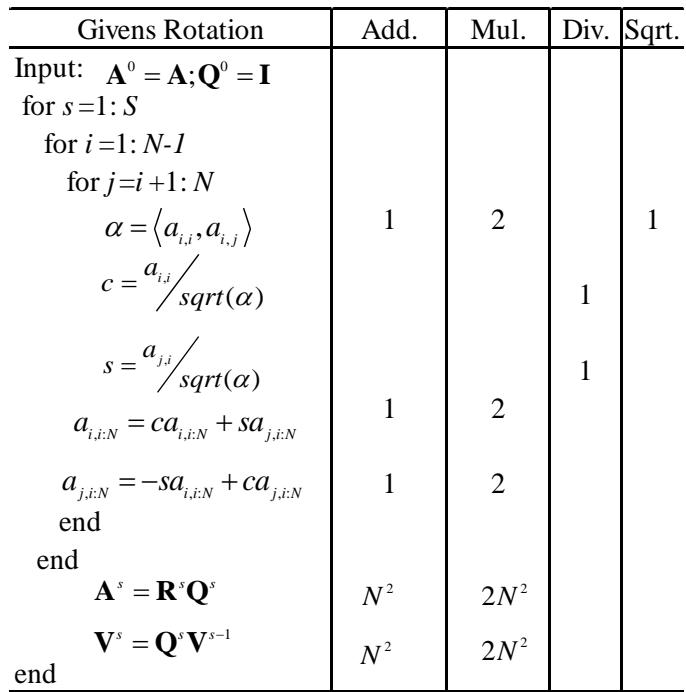
图1.2 基于Givens旋转的QR算法
对于 Jacobi 旋转算法，经典的双边 Jacobi 算法是一种用于求解实对称矩阵特征值和特征向量的方法。该方法通过一系列的 Jacobi 旋转相似变换，将实对称矩阵的非主对角线上的元素最终逐步趋于 0，以实现实对称矩阵的对角化，并且旋转矩阵乘积的转置即为特征向量，从而得到全部的特征值和相应的特征向量。其伪代码和硬件实现所需操作的运算次数如图 1.3 所示。
与图1.2所示的基于Givens旋转的QR算法相比，它们的共同特点是：由旋转因子组成的矩阵均为稀疏矩阵，但是双边Jacobi旋转算法的矩阵乘法运算次数几乎是其两倍。同时，在双边Jacobi旋转算法中，旋转因子的计算过程更为复杂。因此，有学者建议特征值的并行计算在硬件实现时应该首选QR算法[120]，并且QR算法的矩阵分解速度比Jacobic旋转算法更快[121]。然而，J.Demmel和K.Veselic[122]证明了Jacobi旋转算法比QR算法的数值性更精确且稳定性更好，更能满足实际工程对数值性能的要求；并且Jacobi旋转算法本身具有高度的内在并行性。因此吸引了许多研究人员[123, 124, 125, 126, 127]对其进行多种改进和设计，以降低其运算复杂度，提高运算速度。
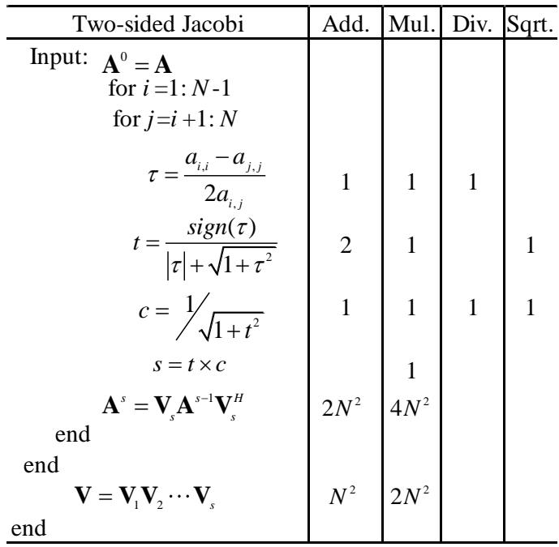
图1.3双边Jacobi旋转算法
在双边 Jacobi 旋转算法的基础上，1958 年 Hestenes 等学者提出了一种单边 Jacobi 旋转算法，其伪代码和硬件实现所需操作的运算次数如图 1.4 所示。单边 Jacobi 旋转算法利用一系列 Jacobi 平面旋转变换对原始矩阵进行单边正交化，从而获得矩阵的右奇异向量，通过对正交化后的正交矩阵进行归一化处理得到矩阵的左奇异向量，而归一化后的正交矩阵的列向量范数即为奇异值。需要说明的是，虽然单边 Jacobi 旋转算法被广泛用于矩阵奇异值分解，但同时也适用于矩阵特征值分解。根据文献[127]的研究结果显示，单边 Jacobi 旋转算法在计算速度等方面比双边 Jacobi 旋转算法更优。
根据图（1.3）和（1.4）所示，Jacobi 旋转算法中 Jacobi 旋转因子的计算，也包含了大量的三角函数运算。因此，其硬件实现也可以通过 CORDIC 将三角函数运算转换为移位运算。并且根据 Jacobi 旋转算法自身的特点，可以通过由对角处理器和非对角处理器组成的经典脉动阵列（Brent Luk Van，BLV）[128]及其改进形式的硬件架构完成矩阵平面旋转。对于 Jacobi 旋转算法，CORDIC 的使用虽然避免了复杂的三角函数运算，但是一次 Jacobi 旋转需要执行共计三次的 CORDIC 旋转模式和矢量模式，即相应的三个 CORDIC 计算周期，导致时延较大，因此众多学者针对该问题进行了大量的优化处理。Shi 等人在文献[126]中提出了一种基于矩阵矢量化和 proshophelesis 公式以及三角变换的加速并行 Jacobi 方法，将的两步 CORDIC 旋转模式简化为一步旋转模式，其设计的关键硬件架构基于 BLV 脉动阵列。Athi 等人在文献[123]中提出了一种特征值分解的动态排序方法来减少 Jacobi 算法的迭代扫描次数，但它不适合 FPGA 完成较高维数矩阵运
算。根据本文第五章的分析描述，在较大规模矩阵中寻找 \(N / 2(N\) 是矩阵维数）个最大的非对角元素将消耗更多宝贵的硬件资源，因此受限于硬件资源，文献[123]在实验中只对 \(4\times 4\) 和 \(8\times 8\) 维的矩阵进行了特征值分解。文献[129]的作者也提出了一种基于CORDIC的Jacobi改进算法的矩阵特征值分解计算架构，但是计算精度仍然较低。文献[130]虽然使用了DSP48E1来加快乘法运算，但是其仍然需要将原始矩阵分为 \(2\times 2\) 的子矩阵块进行对角和非对角处理，并且也需要传递Jacobi旋转因子，其仍未充分利用FPGA的并行性。对先前的相关改进方法进行分析和总结，总体而言，它们大都是基于CORDIC或BLV脉动阵列的硬件架构来实现的，其主要致力于减少CORDIC的计算周期以提高其处理速度和资源消耗。
| One-sided Jacobi | Add. | Mul. | Div. | Sqrt. |
| Input: A^0 = A | ||||
| for s=1:S | ||||
| for i=1:N-1 | ||||
| for j=i+1:N | ||||
| r_i, i = ||a_i|| | 4N-1 | 4N | 1 | |
| r_j, j = ||a_j|| | 4N-1 | 4N | ||
| r_i, j = ai^H a_j | 4N-1 | 4N | ||
| ρ = r_{j,j} - r_{i,i} / 2 × r_{i,j} | 1 | 1 | 1 | |
| t = sign(ρ) / |ρ| + √1 + ρ^2 | 2 | 1 | 1 | 1 |
| cos θ = 1/√1 + t^2 | 1 | 1 | 1 | 1 |
| sin θ = cos θ × t | 1 | |||
| end A^s = A^s V^H_s | N^2 | 2N^2 | ||
| end Σ = diag(||a_i^s||) | N^2 - N | N^2 | N^2 | N |
| V = V^1 V^2... V^s | N^2 | 2N^2 | ||
| end |
图1.4 单边Jacobi旋转算法
对于 BLV 脉动阵列及其改进形式中，对角处理器和非对角处理器之间复杂的数据交互问题，在上个世纪八九十年代，有学者们提出多种基于 Jacobi 旋转算法的数据调度序列算法，并验证了它们的正确性以及相应算法的收敛性质，主要目的是充分利用并提高 Jacobi 旋转算法硬件实现的并行性，以提高计算速度，降低时延。比如 Round-Robin 序列[131]、奇偶固定序列[132]、指环形序列[133]等。值得指出的是，这些数据调度序列算
法已经非常成熟了，目前学者们主要聚焦于矩阵特征值分解在FPGA、GPU或ASIC等硬件计算平台的高性能实现方法的研究。
由于解决DOA估计问题的多重信号分类(Multiple Signal Classification, MUSIC)[134]算法中涉及到数据协方差矩阵的特征值分解，并且占据MUSIC算法总运算量的一半。近年来，有研究者提出了多种改进的MUSIC算法，这些算法主要专注于降低其涉及到的矩阵特征值分解的计算复杂度，如root-MUSIC算法[135]、改进的MUSIC算法[136]和real-valued MUSIC算法[137]等。其主要思想是通过酉变换将复厄米特矩阵转化为实矩阵再进行处理。事实上，这一假设是基于理想的阵列天线。然而，在工程应用中，阵列天线总是会受到一些误差因素的影响，如传感器位置误差（阵元扰动）、互耦效应和幅相误差等。因此，这些基于酉变换的方法在实际中可能并不稳健。比如Hussain等人[138, 139]建立了National Instruments PXI实验平台，基于QR分解、LU分解、Cholesky分解和LDL分解算法来进行特征值分解以分别验证信源位置。然而，在高精度测量的要求下，其数据性能在低信噪比时会严重下降。总之，从系统设计的角度来看，先前的针对经典MUSIC算法开展的在不同的阵列结构、输入数据类型或长度、信噪比和快拍数下的广泛研究[140, 141, 142]，通常侧重于基于FPGA高效地实现矩阵特征值分解，而对数值性能没有给予足够的关注。
综上所述，先前的矩阵特征值分解算法的硬件实现存在的主要问题是：其大都是基于CORDIC的定点运算，但是在工程中因为精度问题往往不能满足大动态范围的要求，如：无线通信、导航和雷达等；基于BLV脉动阵列的硬件架构也并不能充分实现Jacobi旋转算法的并行性；随着硬件平台的发展，配备大量逻辑电路和乘法器的FPGA是一个有吸引力的并行计算平台，应该充分发挥FPGA并行性的优势。因此本论文充分利用了FPGA的乘法器和Jacobi旋转矩阵的稀疏性，提出了两种基于FPGA的并行Jacobi旋转的矩阵特征值分解高性能实现方法，分别从硬件资源消耗以及特征向量正交性、重构误差和特征值误差三个方面进行了全面分析。
1.2.2 矩阵求逆高性能实现¶
矩阵求逆是矩阵运算的另一个重要的算子。矩阵求逆的算法相对固定和简单，但其硬件实现通常需要消耗较多的硬件资源，并且其计算过程复杂，导致时延较大，计算速率较低。矩阵求逆的原始矩阵类型一般分为两类：一类是对称矩阵；另一类是非对称矩阵。然而非对称矩阵可以通过矩阵相乘变形为对称矩阵，因此，研究对称矩阵的求逆算
法是非常基础和重要的。对于对称矩阵而言，常用的求逆算法有两种：第一种是基于矩阵求逆的定义，这种方法比较适合低维度的矩阵；第二种是基于矩阵分解的矩阵求逆算法，对比基于矩阵求逆的定义法，通过矩阵分解求逆的结果具有更好的数值稳定性，并且运算量较低，因此，在实际科学和工程中，通常基于矩阵分解来完成矩阵求逆的计算。
常见的矩阵分解算法有：LU分解、QR分解[143]、Cholesky分解[144]和LDL分解。LU分解将一个矩阵分解为一个下三角矩阵和一个上三角矩阵的乘积，其本质是高斯消元法，仅适用于方阵且矩阵可逆；QR分解相较于LU分解适用范围更广泛，其将矩阵分解为一个正交矩阵和一个三角矩阵的乘积，适用于任意非奇异矩阵，计算过程较复杂；Cholesky分解将矩阵分解成一个下三角矩阵和其转置的乘积，仅适用于实对称正定矩阵，并且不可避免的开方运算会消耗大量的硬件资源；LDL分解是Cholesky分解的一个变形形式，其将矩阵分解成一个下三角矩阵、对角矩阵及下三角矩阵转置的乘积，其中下三角矩阵的对角元素必须为1。针对这些不同矩阵分解的矩阵求逆算法，已有众多学者对其进行了大量的研究成果。刘等人[145]提出了基于批量列分块LU分解的矩阵求逆算法并在GPU上进行了有效的实现，加快了LU分解求逆的计算速率。Ma等人[146]提出了一种实时的基于修正平方的Givens旋转矩阵求逆新算法，适合高性能浮点运算。魏等人[147]对Cholesky分解求逆算法进行了基于FPGA的高效流水设计，但是其矩阵求逆计算过程的迭代步骤具有很强的依赖性，并没有充分利用FPGA的并行性。文献[148]的作者提出了一种基于Cholesky分解的正定对称矩阵SPMI求逆算法，但它实际上是块矩阵求逆的一种固定形式，求逆步骤也具有严格的依赖性。余等人[149]利用LDL分解并且对矩阵进行分块迭代设计，减少了求逆运算的计算量，提高了计算速率。Hussain等人[150]采用LDL分解对DOA估计算法进行了基于FPGA的高效实现。对以上这些基于矩阵分解的矩阵求逆多种方法进行了总结，这些方法均是从矩阵分解算法的角度出发，来间接减少矩阵求逆的计算量。总体来说分为以下四类：从矩阵分解算法的角度出发，减少后续三角矩阵求逆的计算复杂度；结合矩阵分块处理，降低计算复杂度，提高计算速率；从硬件实现架构的角度出发，提高计算并行性，以减少计算时延；以上三种的多种结合。
然而，根据以上分析可知，这些矩阵分解求逆的主要思路均是：将原始矩阵通过矩阵分解算法将其分解为一个正交矩阵和一个三角矩阵或者两个三角矩阵。此时由于正交矩阵的逆是其自身的转置，那么对原始矩阵的求逆问题就可以简化为对三角矩阵的求逆。由此可知，三角矩阵求逆是矩阵求逆中最重要的组成部分。三角矩阵求逆的方法较为简
单，一般通过回归迭代法、方程求解和分块处理来进行计算，因此三角矩阵求逆的计算复杂度相对于原始矩阵求逆的计算复杂度更低，其硬件实现相对简单，并且易于并行化实现。对于三角阵求逆，有学者也对其进行了研究，提出了降低其计算复杂度的一些改进方法。文献[151]的作者提出了一种减少一次计算三角矩阵求逆中间结果的方法，但其本质上仍然是回归迭代法和方程求解法，而且它必须建立Cholesky分解的基础上，对于其他矩阵分解方法则不适用，局限性太高。刘等人[152]针对Cholesky矩阵三角化分解过程中共有的三角化计算迭代过程进行了优化，但其中间计算结果较多，需要消耗的硬件较大，处理的矩阵维数最大为 \(32 \times 32\) 。Zhang等人[153]对LDL分解方法进行改进，有效的解决了相控阵雷达阵列天线控制问题，但其主要实现是基于块子矩阵的递归运算降低三角矩阵求逆的复杂度。周等人[154]基于改进的脉动阵列硬件结构，根据二阶子矩阵得到约化因子，逐步迭代完成了三角矩阵求逆，该方法的灵活性、并行性较低。
对这些常用的三角矩阵求逆方法及其改进方法分析可知其存在的主要问题是：其求逆计算过程大多是逐步地按行处理或按列处理（本文将其统称为行式、列式方法），其在迭代计算过程中当前步计算必须依赖上一步迭代的计算结果，具有很强的依赖性，因此难以充分并行处理；或者这些方法依赖某个矩阵分解算法，其根据特定矩阵分解算法中的一些特性来减少求逆计算步骤以降低求逆计算的复杂度，移植性不高。因此，在现代数字信号处理的需求下，并行的、灵活的、快速的以及精确的完成三角矩阵求逆的高性能实现仍是一个挑战。基于此，本文从伴随矩阵求逆的计算过程出发，发现了强大的求逆计算特征，提出了一种对角式的求逆新方法，无需严格的计算步骤依赖性和矩阵分解算法的依赖性，灵活性、并行性较高。
1.2.3 序列排序高性能实现¶
序列排序是现代数字计算中一个非常基础且非常重要的部分，通过排序可以获得以一定顺序排列的数据，从而提高后续操作的效率。排序早期的发展受限于硬件设备条件的限制，大都集中在CPU上进行处理，且大多是通过串行排序算法处理的。但是随着硬件设备的发展，比如多线程、多核、多处理器再到GPU、FPGA等硬件处理器的迅速成长，并行排序算法得到了大力的发展，学者们根据这些硬件设备的并行能力并且结合各种排序算法对排序性能进行了优化改进。整体而言，目前对于排序的研究分为两类：一类是针对排序算法本身进行的改进；另一类针对不同排序算法的特点，将其结合并适用多种并行架构。总之，这些研究工作的主要目的是，提高排序实施后的吞吐量，降低
硬件资源消耗以及时延等。
就硬件平台而言，基于CPU和GPU的排序研究成果相对较多。Matvienko等人[155]基于CPU利用SIMD处理器指令提出了一种新的交互排序方法，提高了排序效率。Amirul等人[156]实现了混合的基数合并排序以及混合基数和桶排序两种排序算法，充分利用了GPU和CPU的硬件资源以提高排序效率。Ha等人[157]基于GPU平台，实现了基数排序算法的硬件优化。Cederman等人[158]提出了一种基于GPU的高度并行快速排序算法。然而FPGA与CPU和GPU属于完全不同的处理思想，其依靠底层逻辑电路的并行处理提高排序方法的性能。Prasad等人[159]探讨了在FPGA上排序网络的适用情况。Papaphilippou等人[160]基于FPGA，实现了一种减少比较器的数量和冗余逻辑的排序方法。Chen等人[161]基于CPU和FPGA得混合架构提高了排序性能。
就排序算法而言，从数据处理方式上可以分为两类：串行排序算法和并行排序算法。常用的串行排序算法有：冒泡排序[162]、插入排序[162]、选择排序[162]、比较排序[162]等。已有学者对这些串行排序算法进行了多种改进以提高其并行处理能，但是由于这些算法本身出自于串行执行的硬件设备，并且硬件设备资源有限，因此这些串行排序算法及其改进方法的并行性能改善并不明显。并行排序算法主要包括：归并排序、基数排序[163]、桶排序、计数排序等，其中归并排序和基数排序研究得相对较多。Grimshaw等人[164]对基数排序方法进行了详细研究，并基于GPU实现了动态并行排序。Davidson等人[165]为高度并行的系统设计了一种高性能的并行归并排序。Mashimo等人[166]提出了一种归并网络并构建了FPGA排序加速器实现了高吞吐量。Wei等人[167]提出了一种改进的桶排序方法，按从小到大得顺序进行相位展开。
分析以上并行算法的原理和实现过程，可以发现，这些并行排序算法大多是在串行执行的前提下设计出来的，其并行性并不高。而经典的双调排序网络（Bitonic Sort Net, BSN）[168]和奇偶合并网络[169]，则是专门为并行硬件设备设计的排序方法，其主要集中于在FPGA上的实现。文献[168，170]指出虽然BSN比奇偶合并网络需要消耗更多的比较器，但由于BSN具有两个重要特性：一是所有信号路径都具有相同的长度，可以节省排序网络的资源空间；二是每个阶段的并发比较数量是恒定的，可以使排序网络更加有效，因此实际应用中应该首选BSN。但是由于BSN的时间复杂度较高，因此有学者在其基础上进行改进优化，以降低时间复杂度和其硬件实现的资源消耗。Chen和Prasanna[171]提出了一种在FPGA上映射大规模BSN的系统方法，但没有明显降低编程复杂度。Lee等人[172]提出了用于共享内存专用并行架构和通用并行架构的一种简化的多
级BSN，通过减少内存访问次数和网络间的通信来改进排序性能。Layer等人[173]基于FPGA对BSN进行优化，减少排序网络内的通信来降低时间复杂度和其硬件实现的资源消耗。Nassimi等人[174]基于一种网状连接器对BSN进行优化以降低排序网络的复杂度。
在序列排序的实际应用中，有很大一部分需求是基于部分排序的，即只需要得到一些数据序列中的 \(M\) 个最大值或 \(M\) 个最小值。但是上述的排序方法均是完全排序方法，即排序后得到数据序列所有元素的顺序。如果按照完全排序的方法进行实现部分排序任务，则需要浪费大量的硬件资源，实时性可能也无法得到保证，甚至不能完成部分排序任务，因此有必要对部分排序方法进行研究。针对高能物理应用中只需要获得 \(M\) 个最高能的粒子部分排序问题，文献[175]的作者中提出了一种改进的BSN部分排序网络；该排序网络要求输入数据序列的长度必须是2的幂次方，其根据需要找出最大或最小数据个数的目标，删减了BSN中的冗余路径，从而减少比较和交换(Compare and Swap, CAS)块的个数，但实时性难以保证。Balatsoukas等人[92]为了提高通信系统中POLAR码的解码效率，删除了解码网络中采用的BSN和奇偶排序网络中的部分路径和CAS块，减少了硬件资源的消耗和时延。Ricco等人[176]通过基于BSN改进的部分排序网络找到了具有最大和最小电容电压的子模块。Chen等人在文献[177]中提出了一种具有高吞吐量的混合流水线排序架构用于Top-K排序，但是由于流水线的性质，数据并行性可能会有很大的时延。
对目前的这些部分排序方法进行总结，其存在的主要问题是：这些部分排序方法大都是针对特定应用场景而简化完全排序方法其中的某些步骤得到的，并不具有广泛性和可移植性；一些部分排序方法的并行架构过于复杂，时延较大。因此研究一种灵活的、广泛的高性能部分排序方法仍然是一项具大的挑战任务。本文从部分排序任务的本质出发，提出了一种基于FPGA的实时最大/最小子集选择器的新方案，具有较高的并行性和灵活性，可以应用于任何部分排序任务。
1.3 论文主要创新工作¶
随着科学计算的高度发展以及实际工程需要的日益严苛，对矩阵运算的实时性、数值稳定性、数值精确性以及系统吞吐量等需求明显提高，矩阵运算硬件加速的实现迫在眉睫。本文以阵列信号处理中的关键问题为背景，对涉及到的矩阵运算分别进行了基于FPGA的高性能实现设计，创新点主要包括以下内容：
1)针对基于CORDIC的BLV脉动阵列结构或其改进形式的双边Jacobi旋转矩阵特征值分解算法，硬件资源消耗过大、时延较大以及数值精度较差的问题，提出了一种基于FPGA的双边Jacobi旋转矩阵特征值分解的高性能实现新方法：
与当前实现方法的硬件架构完全不同，新方法的实现架构无需矩阵分块处理及Jacobi因子的传递来实现Jacobi旋转算法中的矩阵乘。首先，新方法充分利用了Jacobi旋转矩阵的稀疏性来简化Jacobi旋转算法中的矩阵乘，在一次平面旋转中仅需要非零元素和对应矩阵的行/列向量相乘，从而降低硬件资源消耗；其次，为复厄米特矩阵提供了一种基于双边Jacobi旋转的特征值分解方法；而后，改进调度数据序列的缓存方式以节省内存资源，并且提出了逐行方式读取矩阵数据，以便可以以更加灵活的方式处理更高维矩阵；最后，给出了新方法的基于FPGA的硬件实现架构。通过将其与当前多种高性能特征分解方法进行对比和基于DOA估计问题的应用，实验结果表明，新方法的灵活性较高，硬件资源消耗较少，时延较小，数值性能较好。
2）当前的矩阵特征值分解方法大都是从高性能硬件实现的角度出发，而忽略了数值性能。本文从提高矩阵特征值分解的数值精度出发，并且同时对其进行了高性能实现，提出了一种基于FPGA的前视性简化单边Jacobi旋转（The look-ahead simplified one-sided Jacobi，LASOJ）新方法的高效计算架构：
首先，为了提高矩阵特征值分解的数值精度，提出了LASOJ新方法，其计算得到的特征向量来源于旋转后的正交矩阵，并且通过理论证明其特征向量的正交性更好；其次，所提出的LASOJ新方法提前计算旋转变换后的正交矩阵的所有列向量的 \(l_{2}\) 范数，这样可以便于整个硬件资源模块化以及共享化；而后，设计了一种基于FPGA的LASOJ新方法的高效计算硬件架构，并且从复矩阵特征值分解方法及硬件计算平台动态范围等多个角度分析了LASOJ新方法的数值性能。通过实验对比了多种矩阵特征值分解方法及其硬件设计，实验结果表明，LASOJ新方法的数值性能更佳，LASOJ高效计算架构具有较高的并行性和灵活性，其硬件资源消耗较少，时延较小。最后，将这些多种矩阵特征值分解方法及其硬件设计应用于MUSIC算法的实现，结果表明LASOJ高效计算架构得到信源位置的鲁棒性更高。
3）针对当前的行、列式三角矩阵求逆方法在迭代计算过程中步骤严格依赖上一步计算结果，导致其计算效率较低、并行性较低、工作频率较低以及硬件资源消耗较大的问题，提出了一种基于FPGA的快速并行计算三角矩阵求逆的对角式新方法：
与行/列式求逆方法完全不同，本章从伴随矩阵求逆的定义出发，发现了强大的求逆特征，推导出了逆矩阵元素的计算公式并且其具有相同的计算结构，均是由原始矩阵的不同元素计算的。首先，对角式求逆新方法是按照平行于对角线方向并行计算的。在计算过程中，不需要严格的步骤依赖，即对角式求逆新方法中与主对角线平行的向量之间彼此独立，这意味着对角式求逆新方法的并行性和灵活性均较高，并且其不依赖于任何矩阵分解方法，具有扩展性和普遍性；其次，平行于主对角线方向计算的元素可以重复使用，以用来降低硬件资源消耗；而后，针对较高维矩阵，结合矩阵分块理论，提出了递归对角式求逆新方法。最后，通过基于FPGA的对角式新方法及当前多种三角矩阵求逆方法的硬件实现表明，对角式求逆新方法的灵活性和并行性较高，其硬件实现的时延小；并且将对角式求逆新方法应用于自适应数字波束合成（Adaptive Digital Beam Forming，ADBF）的实现。
4）由于先前学者提出的部分排序器大都是针对某个领域删除完全排序算法的冗余步骤来实现的，其本质上仍属于完全序列排序算法。与这些方法的出发点完全不同，本文从部分排序任务的本质出发，设计了一种基于FPGA的标准的实时硬件部分排序器(Real-Time Hardware Partial Sorter，RTHPS）的新方案：
首先，提出了标准RTHPS新方案中的核心算法，并给出了证明过程。其次，标准RTHPS新方案与数据序列的总长度没有密切关系，其从两个双调子序列出发，通过对一个长度为 \(M\) 的升序子序列和一个长度为 \(M\) 的降序子序列只进行一次比较，就可以得到其中 \(M\) 个较大值或较小值，从而实现较长序列的部分排序；而后，提供了工程应用中的两种常用应用场景的RTHPS组合方案，说明了标准RTHPS新方案的灵活性、可扩展性以及易于编程性。最后给出了标准RTHPS新方案的硬件架构，并且基于FPGA的实现对比当多种部分排序高性能方法，实验表明，标准RTHPS新方案更为灵活和实用。
1.4 论文组织结构¶
DOA 估计[178]是包括无线通信、雷达和声纳[178, 179, 180, 181]等在内的阵列信号处理中一个关键和基本问题。从工程应用角度来看，解决 DOA 估计问题的 MUSIC 算法依然是目前更为实用的经典算法。对于经典的 MUSIC 算法，其实现过程中包括了本文所研究的矩阵运算的三大关键矩阵算子：矩阵特征值分解、矩阵求逆和序列排序。其中矩阵分解用于其生成信号子空间和噪声子空间；矩阵求逆用于其精测算法中基于最小二乘的
权系数计算；序列排序用于其复杂的伪倒谱搜索。由于现代FPGA配备了大量的逻辑资源，具有高度的并行性和重构能力，因此成为实现矩阵运算的一个极具吸引力的加速硬件平台。
本文主要以解决阵列信号处理中DOA估计问题的MUSIC算法为背景，在FPGA的硬件平台上，首先以矩阵特征值分解和三角矩阵求逆为核心，其次以部分序列排序为辅助，展开了详细的讨论；分别提出了四种基于FPGA的关键矩阵算子的高性能实现方法。论文的结构框架和内容安排如图1.5所示。
第一章，对自动驾驶技术应用的阵列信号处理算法进行了讨论，并对不同硬件计算平台的优劣势进行了分析和描述，阐述了其中矩阵三大关键算子高性能实现的研究背景和意义；由于这三大关键矩阵算子为各个研究领域提供了一个强有力的分析和计算框架，其在各个领域的研究意义也是多方面的，因此对这这些在各个领域的应用进行了总结、描述和分析；对这三大关键矩阵算子的高性能实现研究现状分别进行了详细的描述，分析了目前研究的不足之处，提出了本文研究的主要内容和创新点。
第二章，双边 Jacobi 旋转的矩阵特征值分解算法的高性能实现。本章针对当前双边 Jacobi 旋转算法硬件实现的不足之处，提出了基于 FPGA 的双边 Jacobi 旋转的矩阵的特征分解新方法。首先，详细分析了双边 Jacobi 旋转算法的计算过程，充分挖掘了 Jacobi 因子矩阵的稀疏特性，以及矩阵乘的特性；其次，在 FPGA 上充分利用乘法器，并且采用单精度浮点运算，结合新方法特性提出了矩阵数据读取的行/列方式，给出了基于 FPGA 的硬件实现架构；对于复厄米特矩阵提出了一种可以使用双边 Jacobi 旋转算法处理的特征值分解新方法；最后通过实验充分对比了新方法和当前方法的数值性能和硬件资源消耗情况，并且将其应用于无线通信的基于子空间的 DOA 估计问题。本章为第三章提供了重要的高性能实现思路，是第三章的重要基础。
第三章，单边 Jacobi 旋转算法的矩阵特征值分解高性能实现。本章主要针对当前研究方法的数值精度较低以及及时延较大的问题，提出了基于 FPGA 的前视性简化单边 Jacobi（The look-ahead simplified one-sided Jacobi，LASOJ）新方法的高效计算架构。首先分析了单边 Jacobi 旋转的计算过程，根据第二章给出了基于 FPGA 的标准单边 Jacobi 方法，并且从硬件角度出发提出了实现单边 Jacobi 旋转的新思路；其次，根据新思路提出了 LASOJ 新方法，并且证明了新方法得到的特征向量的正交性更好；而后根据 LASOJ 新方法在 FPGA 上实现了硬件资源复用的高效计算架构；最后通过数值性能实验和硬件实验充分对比了 LASOJ 高效计算架构和当前方法，并且将其应用于无线通信的基于子
空间的 DOA 估计问题。本章是第二章研究成果的延伸，对 Jacobi 旋转特征值分解的数值性能进行了优化提升。
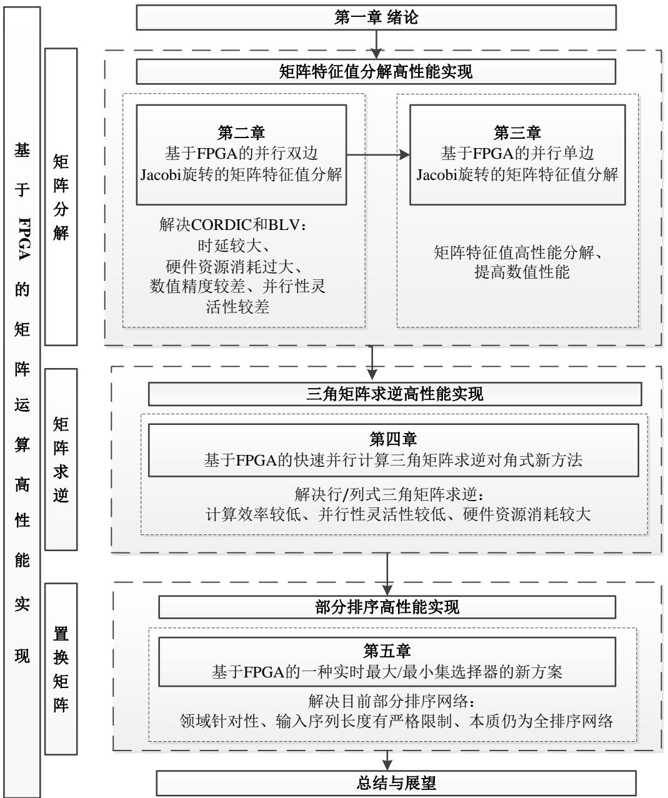
图1.5 论文的组织结构
第四章，对于三角矩阵求逆的高性能实现，提出了一种基于FPGA计算三角矩阵求逆的对角式处理新方法。与当前的行/列式三角矩阵求逆方法逐行或逐列的处理方式完全不同，对角式新方法是按照平行于对角线的方向并行处理的。本章详细分析了通过伴随矩阵求逆矩阵的过程，发现原始矩阵及其逆矩阵的更多特征可以用于求逆计算过程，推导出了具有强大特征的逆矩阵元素计算公式；从计算方式及硬件资源消耗的角度充分对比了对角式新方法和行/列式求逆方法；对于较高维矩阵，结合矩阵分块理论提出了递归对角式求逆新方法；最后通过硬件实现对比了基于FPGA实现的多种三角矩阵求逆方法，
并且将对角式求逆新方法应用于处理矩阵维数更高的 ADBF 问题以说明新方法的普适性。
第五章，实际工程中实时数据序列部分排序的高性能实现。针对当前部分排序方法的应用局限性以及时延较大等问题，设计了一种基于FPGA的标准实时硬件部分排序器（Real-Time Hardware Partial Sorter，RTHPS）新方案，以解决工程中的实时数据序列部分排序问题。首先提出了RTHPS新方案中的核心算法，给出了一个定理和推论；其次根据所提出的核心算法，给出了标准RTHPS新方案的具体执行过程，并且针对工程中两种常用的应用场景，给出了多种RTHPS组合解决方案；而后从排序网络结构和时延两个方面，对多种部分排序高性方法进行了分析和讨论；最后给出了标准RTHPS新方案的硬件架构，并且基于FPGA对当前多种部分排序高性能方法进行了硬件实现以进行综合对比。本章没有将新方案应用于DOA估计问题，主要是本章实验部分的排序数据长度均大于DOA中的伪倒谱谱峰搜索的个数，实验部分已经可以说明新方案的优势。
最后，对本文的工作内容进行了总结，并且基于本文的研究成果，分析了其在诸多方面还有待进一步深入展开，以及需要讨论的问题。值得指出的是，本文所提出的矩阵关键算子的高性能实现方法，其应用场景不局限于本文所使用的场景。
第二章 基于FPGA的并行双边Jacobi旋转的矩阵特征值分解¶
基于FPGA的高度并行性架构，本章提出了一种高效计算矩阵特征值分解的新方法。其主要思想来自于双边Jacobi旋转矩阵属于一类特殊的稀疏矩阵，仅需要通过只包含非零元素的矢量完成矩阵乘法运算以降低运算量。基于上述思想，采用行式数据读取方式可以处理更高维矩阵，采用单精度浮点运算提高了计算数值精度。此外，本章还为复厄米特矩阵提供了一种双边Jacobi旋转的特征值分解新方法。最后，在XilinxXC7V690T—FPGA上，将所提新方法与当前多种方法进行了实验对比，并且将其应用于对实时性要求较高的无线通信子空间DOA估计问题。
2.1 问题描述¶
在许多应用学科中，矩阵特征值分解是一种重要的数学工具，其高性能实现已成为众多研究领域的一个重要方面。过去多年来，研究人员[182, 183, 184]主要基于三种硬件平台，即：ASIC、GPU和FPGA，来加速矩阵特征值分解的计算过程。实际上，ASIC可能是实现矩阵特征值分解的最佳选择，但是在小批量生产的情况下，其硬件成本是非常高的。对于GPU而言，高功耗和低可靠性使其无法在一般工业应用中得到较好的使用；而配备了大量逻辑电路和乘法器的FPGA是一个极其具有有吸引力的硬件计算平台，它适合于实现这些并行和规整算法[185, 186]。
实际工程中，矩阵特征值分解经常使用两种实用算法：QR 算法和 Jacobi 算法。由于 Jacobi 算法比 QR 算法更精确且数值稳定性较好[122]，特别是 Jacobi 算法本身具有先天的高度并行性，因此本章深入探讨了以双边 Jacobi 旋转算法为基础的矩阵特征值分解快速并行计算。对于 Jacobi 旋转算法加速计算的研究，Shi 等人在文献[126]中提出了一种基于矩阵矢量化、伪随机公式和三角变换的加速并行 Jacobi 方法，其设计的关键硬件架构基于 BLV 脉动阵列。Athi 等人在文献[187]中提出了矩阵特征值分解的动态调度序列以减少扫描次数，但是在矩阵中找到 \(N / 2\) （ \(N\) 是矩阵维数）个最大的非对角元素将消耗更多宝贵的资源[188]，因此，其实验中只进行了 \(4 \times 4\) 和 \(8 \times 8\) 维矩阵特征值分解。最近，文献[130, 189, 119]中的作者提出了一些基于改进 Jacobi 旋转算法的矩阵特征值分解设计方法，其均是对定点运算的 CORDIC 的改进。
本文对先前提出的基于 Jacobi 旋转特征值分解的高性能方法进行了详细的分析，发现这些方法的优势均是来自于基于 CORDIC 的应用。CORDIC 将 Jacobi 旋转因子的三
角函数计算转化为移位计算，进而由 BLV 脉动阵列完成 Jacobi 的旋转。由于一次 Jacobi 旋转需要执行一次 CORDIC 的矢量方式和两次 CORDIC 的旋转方式，故这些高性能方法大都是对这三次 CORDIC 计算周期的简化，以此来提高计算效率。然而，CORDIC 采用定点运算，精度较低；BLV 脉动阵列将矩阵分解为多个 \(2 \times 2\) 的子矩阵块，并且必须要进行 Jacobi 因子的传递以及矩阵数据的交换，计算的并行性和效率较低。随着科技的发展，实际工程对矩阵特征值分解算法的精确性、能效性、时延等都提出了更高的要求。本章分析了双边 Jacobi 旋转算法的计算过程，发现了其主要计算过程是矩阵乘，双边 Jacobi 旋转算法中的旋转矩阵是一种稀疏矩阵，其重要特征是行、列向量中只有两个非零元素。因此，本章巧妙利用了旋转矩阵的稀疏特性，提出了一种基于 FPGA 的并行双边 Jacobi 旋转矩阵特征值分解的新型高效计算方法，主要贡献描述如下：
1）新方法与基于CORDIC的BLV脉动阵列的设计完全不同。新方法充分利用了稀疏旋转矩阵的稀疏特性，不需要进行矩阵分块以及Jacobi因子的传递。在矩阵特征值分解的计算过程中充分使用了FPGA的乘法器进行矩阵乘法计算，使用单精度浮点数运算来提高计算精度；并且采用行式矩阵数据读取方式，使得新方法的并行性更佳灵活。
2）为复厄米特矩阵提供了一种双边 Jacobi 旋转的矩阵特征值分解新方法。经典的双边 Jacobi 旋转算法只适用于实对称矩阵，然而，实际工程中往往要处理复厄米特矩阵，因此，本章给出了基于双边 Jacobi 旋转算法计算复厄米特矩阵特征值和特征向量的新方法，并且给出了具体计算过程。
最后，在Xilinx XC7V690T—FPGA上，将新方法与现有其它高性能方法进行了比较，并且以已被5G无线通信、相控阵雷达和声纳等广泛采用的基于子空间DOA估计问题为应用。实验结果表明，本章新方法提高了Jacobi旋转并行计算的灵活性，减少了硬件资源的消耗并且时延较小。要说明的是，本章所提新方法编程复杂度较低，这对FPGA编程设计师具有极大的吸引力。
2.2 并行双边 Jacobi 旋转新方法¶
2.2.1双边Jacobi旋转算法及当前实现方法¶
设 \(\mathbf{B} \in \mathbb{R}^{N \times N}\) 是一个实对称矩阵，双边Jacobi旋转算法是使用一系列平面旋转矩阵 \(\mathbf{U}\) 将实对称矩阵 \(\mathbf{B}\) 对角化为 \(\mathbf{D}\) ：
其中， \(\lambda\) 是矩阵 \(\mathbf{B}\) 的特征值。因此，双边 Jacobi 旋转算法的关键思想表示为：
其中， \(\mathbf{B}_1 = \mathbf{B}\) ； \([\bullet]^T\) 表示矩阵转置操作； \(\mathbf{U}\) 是 Jacobi 旋转矩阵； \(N\) 是矩阵 \(\mathbf{B}\) 的维数； \(S\) ( \(1 \leq i \leq S\) ) 是扫描次数。
由式(2.2)可知，双边Jacobi旋转算法本质上是一种迭代算法。然而，根据Abel-Ruffini定理[190]，对于4次幂或更高的多项式的根，并没有明确的特征值求解计算公式。因此，当矩阵维数大于4时，只能通过迭代算法获得特征值。
旋转矩阵 \(\mathbf{U}\) 可以表示为：
其中，被标记为 \((p,p)\) ， \((p,q)\) ， \((q,p)\) 和 \((q,q)\) 索引的四个元素被称为 Jacobi 旋转因子，并由以下值[191]代替：
其中， \(\theta\) 是旋转角度。将式(2.4)表示为：
由式(2.2)-(2.5)可以得到：
其中， \(d_{p,q} = d_{q,p} = 0\) ，因此：
其中， \(b_{p,p}, b_{q,q}\) 和 \(b_{p,q}\) 是矩阵 \(\mathbf{B}^{[191]}\) 中的三个元素。
由式（2.7）可以看出，在计算 Jacobi 旋转因子时，涉及到了复杂的三角函数运算，不便于硬件实现。然而 J.Voider 等人于 1959 年提出的 CORDIC，为硬件实现提供了较为简便的旋转计算方法。它通过不断的逼近所需要旋转的角度，将复杂的三角函数运算简化为移位运算，其主要思想可以表达为：
其中， \(\theta^i = \arctan 2^{-i}\) 。CORDIC可以工作在旋转模式和矢量模式，旋转模式用来完成坐标旋转运算，矢量模式用来完成反正切计算得到最佳旋转角。因此可知，双边Jacobi旋转算法计算一次矩阵B的平面旋转需要执行一次矢量模式和两次旋转模式。
基于式（2.1）可知，左乘 \(\mathbf{U}^T\) 只影响矩阵 \(\mathbf{B}\) 的第 \(p\) 和 \(q\) 行，右乘 \(\mathbf{U}\) 只影响矩阵 \(\mathbf{B}\) 的第 \(p\) 和 \(q\) 列。基于该特征，众多学者采用并行流水架构的 BLV 脉动阵列来进行硬件实现。这里给出了一种改进的 BLV 脉动阵列结构，如图 2.1 所示。
根据图2.1可知，BLV脉动阵列及其改进形式，主要包括两种处理器：对角处理器和非对角处理器。对于这两种处理器[128]，它们在数学上分别表示为：
其中， \(c\) 和 \(s\) 表示 Jacobi 旋转因子； \(p\) 、 \(q\) 、 \(m\) 和 \(n\) 是矩阵 \(\mathbf{B}\) 中所选元素的索引号。
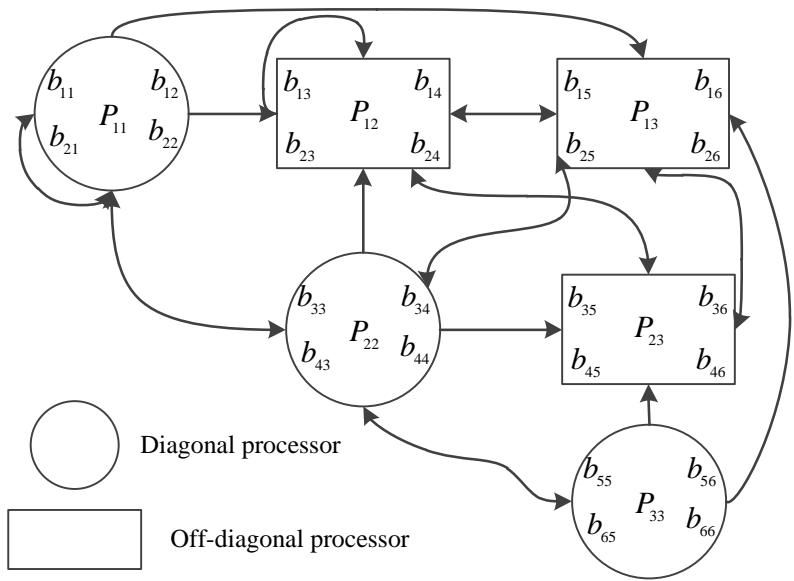
图2.1 改进的BLV脉动阵列结构 \((N = 6)\)
图2.1呈现的主要处理过程是：由对角处理器进行Jacobi旋转因子的计算，而后传递至相应的非对角线处理器，对角线处理器和非对角线处理器完成子矩阵块的平面旋转，再经过矩阵数据的交换以及多次平面旋转的迭代，最终得到对角矩阵，从而完成矩阵特征值分解。图2.1中单箭头表示Jacobi旋转因子的传递，双箭头表示一次旋转完成后矩阵数据的交换方向。总之可以看出，BLV脉动阵列及其改进形式通过对角处理器和非对角处理器完成了多个维数是 \(2\times 2\) 的子矩阵的乘法运算。
因此，基于上述对CORDIC和BLV脉动阵列的讨论，可以总结出它们的局限性：
1）其需要更多的逻辑电路来满足不同对角处理器共享不同的Jacobi旋转因子。
2）其属于面向硬件的体系结构，CORDIC由逻辑门实现并且是定点运算，这将降低FPGA上矩阵特征值分解的工作频率和计算精度。然而，由于FPGA上配备的许多乘法器没有被充分利用，并且文献[192]强烈建议乘法运算应该由乘法器而非逻辑门完成。
3）对于较高维矩阵，由于硬件资源有限，如果在一定的时钟周期内通过对角和非对角处理器没有完成平面旋转，就必须重新访问 RAM 以获得选定的元素来重新计算 Jacobi 因子或添加额外的运算。
2.2.2 稀疏旋转矩阵的乘法¶
基于上述讨论，对于式（2.3）可以发现，双边Jacobi旋转算法中的这些旋转矩阵是一类特殊的稀疏矩阵，其中行、列向量中只有两个非零元素。这对于式（2.2）的三个矩阵相乘来说，则可以简化计算过程、降低计算次数。因此式（2.2）的高效计算方法可以表达如下：
首先，考虑一个 \(6 \times 6\) 维的实对称矩阵 \(\mathbf{B}\) ，双边 Jacobi 旋转算法中矩阵 \(\mathbf{B}\) 左乘旋转矩阵 \(\mathbf{U}^T\) 表示为：
基于矩阵乘法规则[191]，旋转矩阵 \(\mathbf{U}^T\) 的第一行向量乘以实对称矩阵 \(\mathbf{B}\) 可以表示为：
因此，根据式（2.11）可观察到，式（2.10）中的矩阵左乘运算只通过旋转矩阵 \(\mathbf{U}\) 的极少的非零数乘以矩阵 \(\mathbf{B}\) 相应的行向量的运算来容易地实现；并且式（2.10）中 \(\mathbf{U}^T\) 包括了3个Jacobi旋转因子，即可以同时执行多个Jacobi旋转因子的平面旋转。基于此，可以充分利用旋转矩阵 \(\mathbf{U}\) 的稀疏特性，减少矩阵乘法的计算复杂度。
与图（2.2）所示的基于BLV脉动阵列及其改进形式相比，上述矩阵乘法运算的新思路可以容易且直接地操作矩阵B的行向量，而无需将矩阵B进行 \(2\times 2\) 分块处理以及Jacobi因子的传递，并且可以同时执行多个Jacobi因子的平面旋转，提高处理效率。要说明的是，上述矩阵乘法运算的新思路和图（2.2）中的矩阵乘法计算方式具有相同的计算复杂度，然而其处理的角度和方式却完全不同。
同样，对于双边 Jacobi 旋转算法，矩阵 \(\mathbf{B}\) 右乘旋转矩阵 \(\mathbf{U}\) 表示为：
对于式（2.12），实对称矩阵 \(\mathbf{B}\) 右乘旋转矩阵 \(\mathbf{U}\) 的第六个列向量可以表示为：
对比式（2.13）和式(2.11)，（2.13）可以得到与式(2.11)类似的结论。
因此，对于双边 Jacobi 旋转算法，其中的矩阵乘法运算可以容易地由 Jacobi 旋转因子组成的稀疏旋转矩阵的极少非零元素乘以实对称矩阵相对应的行、列向量来完成。对于实对称矩阵 \(\mathbf{B}\) ，可以先完成矩阵的左乘，然后再完成矩阵的右乘。在左、右乘过程中，可以同时执行矩阵 \(\mathbf{B}\) 的多行、多列而互不干涉，这就是本章提出的一种高效的并行双边 Jacobi 旋转新方法。最重要的是，高效新方法的计算过程和硬件实现过程比基于 BLV 脉动阵列及其改进形式的更为清晰和简单，无需矩阵分块以及 Jacobi 旋转因子的传递。
对于特征向量的计算，在先前的相关文献中讨论较少。对于双边 Jacobi 旋转算法，特征向量是一系列旋转矩阵的乘积[191]：
其中， \(\mathbf{U}_i\) 是第 \(i\) 个旋转矩阵。如果通过矩阵乘法规则[191]直接则会消耗大量宝贵的硬件资源。然而，基于上述对式(2.10)—(2.11)的讨论，对于式(2.14)特征向量的计算，同样可以使用上述高效新方法实现加速计算。
2.2.3 复厄米特矩阵特征值分解新方法¶
众所周知，双边 Jacobi 旋转算法只适用于实对称矩阵。然而，在实际工程中经常遇到协方差矩阵的特征值分解，协方差矩阵实则就是复厄米特矩阵。因此，本节为复厄米特矩阵提供了一种可以基于双边 Jacobi 旋转的特征值分解新方法。
设 \(\mathbf{B} \in \mathbb{C}^{N \times N}\) 是一个复厄米特矩阵，其特征值分解可以得到如下表达式[191]：
其中， \(\lambda\) 和 \(\mathbf{V}\) 分别是 \(\mathbf{B}\) 的一个特征值和对应的特征向量； \([\cdot]_{real}\) 和 \([\cdot]_{imag}\) 表示复厄米特矩阵的实部和虚部。将式（2.15）表示为块矩阵形式：
因此， \(\mathbf{B}_{new} \in \mathbb{R}^{2N \times 2N}\) 和 \(\mathbf{V}_{new} \in \mathbb{R}^{2N \times 1}\) 分别是 \(\mathbf{B}\) 和 \(\mathbf{V}\) 的变形后的实矩阵形式。由于 \(\mathbf{B}_{new}\) 是实对称矩阵，那么 \(\mathbf{B}_{new}\) 可以通过并行双边 Jacobi 旋转新方法进行矩阵特征值分解，其计算复厄米特矩阵的特征值和特征向量的过程可以描述为：
1、将复厄米特矩阵 \(\mathbf{B}\) 变形为新形式的实对称矩阵 \(\mathbf{B}_{\text {new }}\) ；
2、通过并行双边 Jacobi 旋转新方法计算 \(\mathbf{V}_{\mathit{new}}\) 和 \(\boldsymbol{\Sigma}\) , 其中 \(\boldsymbol{\Sigma}\) 是由 \(\mathbf{B}_{\mathit{new}}\) 的特征值组成的对角矩阵;
3、按降序对 \(\pmb{\Sigma}\) 的对角元素进行排序，排序是便于步骤4的特征值的选择；
4、选择对角矩阵 \(\pmb{\Sigma}\) 在奇数（或偶数）位置的主对角元素作为复厄米特矩阵 \(\mathbf{B}\) 的特征值；
5、根据步骤4选择与 \(\pmb{\Sigma}\) 中特征值位置相对应的 \(\mathbf{V}_{new}\) 列向量变形作为复厄米特矩阵B的特征向量。
以下以 \(2 \times 2\) 的复厄米特矩阵 \(\mathbf{B}\) 为例，对上述过程的特征值 \(\boldsymbol{\Sigma}\) 和特征矢量矩阵 \(\mathbf{V}_{\text {new}}\) 与原始复厄米特矩阵 \(\mathbf{B}\) 的关系进行讨论。对复厄米特矩阵 \(\mathbf{B}\) 特征值分解，可以得到：
其中， \(b_{1}\) 、 \(b_{3}\) 、 \(\lambda_{1}\) 和 \(\lambda_{2}\) 均为实数，其它均为复数。
假设 \(b_{2} = d_{1} - d_{3}i\) ，根据式(2.16)将复厄米特矩阵 \(\mathbf{B}\) 变形为实对称矩阵形式，同样可以得到：
其中， \(e_i (i = 1,2,3,4)\) 是特征值。将式（2.18）右边中间的对角阵已经进行排序，同时，忽略经过变换后得到特征矢量矩阵中元素的规律，通过求解方程后得到：
计算结果与 \(2 \times 2\) 复厄米特矩阵 \(\mathbf{B}\) 只有两个特征值 \(\lambda_{1}\) 和 \(\lambda_{2}\) 一致。
2.3 关键硬件体系架构¶
本节介绍了在FPGA上并行双边Jacobi旋转矩阵特征值分解新方法的一些关键硬件架构。首先给出了整体硬件架构的顶层描述以及关键模块，其次对缓存数据的缓存方式和读取方式进行了讨论，最后介绍了矩阵乘法的硬件结构。
2.3.1 顶层描述¶
图2.2是基于FPGA的并行双边Jacobi旋转新方法的顶层描述，并且其中也给出了模块之间的一些关键信号。根据图2.2可知，新方法的硬件架构主要有12个模块，其功能分别为：
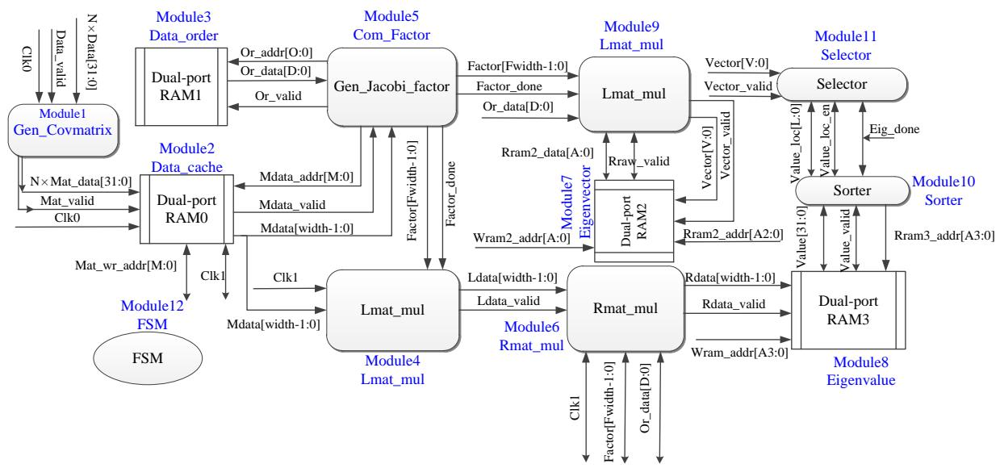
图2.2 基于FPGA的并行双边Jacobi旋转新方法的顶层描述
1、模块1用于计算协方差矩阵。
2、模块 2 和 3 分别缓存实对称矩阵和奇偶固定数据调度序列。
3、模块5计算Jacobi因子，而模块4和6分别完成矩阵左乘和矩阵右乘。
4、模块 9 与模块 4 的功能相同，完成矩阵左乘，用于计算特征向量。
5、模块7缓存模块9的旋转矩阵乘法结果。
6、模块8缓存模块6的中间计算结果。
7、模块 10 按降序对特征值进行排序。
8、模块11通过模块8中缓存的对角元素的奇数位置选择特征向量。
9、模块 12 是用于控制和监视其他模块的一个有限状态机（FSM）。对于一个固定维对称矩阵，扫描次数通常是固定的，并且可以通过 MATLAB 或其他数学软件预先确定。例如，首先通过 MATLAB 和模块 12 中 FSM 计算一个固定维对称矩阵的扫描次数，然后其他模块可以根据该扫描次数停止计算过程。
从上述模块及功能可获知，本章基于FPGA的并行双边Jacobi旋转新方法的硬件实现与式（2.1）-（2.7）的流程基本一致，比较容易理解并且便于硬件工程师实现。根据图（2.2），对于协方差矩阵B而言，基于FPGA的并行双边Jacobi旋转新方法实现复厄米特矩阵特征值分解的整体过程可以描述如下：
1、将输入矩阵 \(\mathbf{B}\) 变形为： \(\mathbf{B}_{new} = \begin{bmatrix} \mathbf{B}_{real} & \mathbf{B}_{imag}^T \\ \mathbf{B}_{imag} & \mathbf{B}_{real} \end{bmatrix}\) ;
2、基于FPGA的并行双边Jacobi旋转方法对变形矩阵 \(\mathbf{B}_{new} = \begin{bmatrix} \mathbf{B}_{real} & \mathbf{B}_{imag}^T \\ \mathbf{B}_{imag} & \mathbf{B}_{real} \end{bmatrix}\) 进行矩阵旋转处理，描述如下：
a) 依照选定的数据调度序列规则，依据设置好的并行度 \(P\) ，选择 \(\mathbf{B}_{new}\) 中对应的元素计算 Jacobi 旋转矩阵 \(\mathbf{U}_1\) ；
b) 按照式（2.11）实现矩阵左旋转操作： \(\mathbf{B}_1 = \mathbf{U}_1^T\mathbf{B}_{new}\)
c) 按照式（2.13）实现矩阵右旋转操作： \(\mathbf{B}_2 = \mathbf{B}_1\mathbf{U}_1\) ；
d) 按照式（2.11）完成特征矢量矩阵的迭代运算： \(\mathbf{U} = \mathbf{U}_1\mathbf{U}_0\) ，其中 \(\mathbf{U}_0\) 为单位阵；
3、在完成步骤 2 后, 更新矩阵 \(\mathbf{B}_{\mathit{new}}\) 为 \(\mathbf{B}_2\) , 同时, 按照设置好的并行度, 读取新的调度序列, 选择 \(\mathbf{B}_{\mathit{new}}\) 中对应的元素计算 Jacobi 旋转矩阵 \(\mathbf{U}_2\) , 重复步骤 2;
4、如果步骤 2 的迭代次数达到设置好的迭代次数, 那么停止迭代, 输出特征矢量矩阵 \(\mathbf{U} = \mathbf{U}_{s} \cdots \mathbf{U}_{1} \mathbf{U}_{0}\) 和矩阵 \(\boldsymbol{\Sigma} = \mathbf{B}_{s}\) , 其中 \(s\) 为预设的迭代次数;
5、对矩阵 \(\pmb{\Sigma}\) 的对角元素进行降序排列；
6、选择排序后奇数（或偶数）位置矩阵 \(\Sigma\) 的对角元素即为复厄米特矩阵B特征值；
7、根据步骤6所对应的特征矢量矩阵 \(\mathbf{U}\) 的列矢量变形后作为复厄米特矩阵 \(\mathbf{B}\) 的特征向量。
2.3.2 数据缓存¶
在先前的特征值分解实现方法中，通常假设在一个时钟周期内读取整个实对称矩阵。但该假设对于维数较小的矩阵是可行的，所以这些方法通常选择维数是 \(8 \times 8\) 的实对称矩阵进行特征值分解。由于硬件资源有限，这些方法可能会导致重复访问对角和非对角处理器的某些元素，因此这些方法并不适用于一个时钟周期内读取维数较大的矩阵。然而，FPGA 在设计实现上具有较高的并行性，基于 FPGA 实现特征值分解的一个常见操作是在一个时钟周期内尽可能多的读取矩阵元素，并且要易于编程。因此本章基于并行双边 Jacobi 旋转新方法及其 FPGA 的硬件实现，从缓存数据的角度来解决该问题。
基于FPGA的并行双边Jacobi旋转新方法将缓存数据整体上分为两种：数据调度序列和矩阵数据，以下将从这两种缓存数据来说明如何节省硬件资源以便尽可能多的读取矩阵元素。
首先，讨论数据调度序列的缓存。本章采用奇偶固定调度序列来确定 Jacobi 旋转所要影响的行和列。这里以大小为 \(8 \times 8\) 的矩阵为例，奇偶固定调度序列的步骤如图 2.3 所示。对于 \(8 \times 8\) 对称矩阵，双边 Jacobi 旋转算法的一次循环需要 8 步迭代完成，每一步保证多组序列同时计算且多组序列不相交，一次循环结束后再继续进行下一次循环，该操作的目的是覆盖所有的非对角线元素均能得到 Jacobi 旋转。
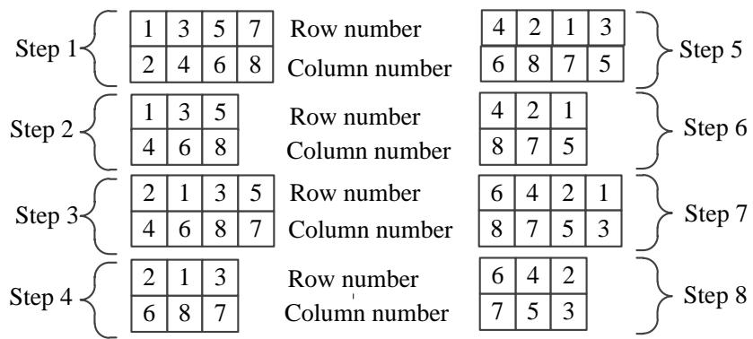
图2.3 标准奇偶固定调度序列
观察图2.3，可以找到一个用来节省内存空间的规则：奇偶固定调度序列的下一偶数步的行和列编号是当前奇数步的行和列号的前3个元素和后3个元素。基于上述特征，
图2.4中显示了一种缓存的奇偶固定调度序列规则，其中红色字体和线条表示偶数步的调度序列。基于此规则，省去缓存偶数步的调度序列号，可以节省硬件资源。
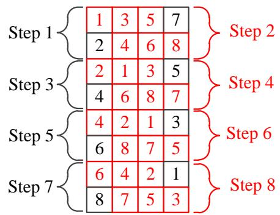
图2.4 缓存的奇偶固定调度序列
其次，讨论矩阵数据的读取方式。首先以图2.5显示的由MATLAB RANDN函数生成的 \(4\times 4\) 维复厄米特矩阵为声明。如前所述，标准双边Jacobi旋转算法不适用于复矩阵。但基于式（2.16）可以得到图2.6所示的实对称矩阵，而后再基于并行双边Jacobi旋转新方法进行特征值计算。
| 14.51353 + -0.000000i | 9.712313 - 3.317846i | -4.741532 - 4.692393i | 11.71758 + 2.182840i |
| 9.712313 + 3.317846i | 18.11457 + -0.000000i | -6.073294 - 8.403993i | 10.28284 + 4.473147i |
| -4.741532 + 4.692393i | -6.073294 + 8.403993i | 11.44086 + -0.000000i | -4.412857 + 7.802852i |
| 11.71758 - 2.182840i | 10.28284 - 4.473147i | -4.412857 - 7.802852i | 16.18745 + -0.000000i |
图2.5 \(4 \times 4\) 复厄米特矩阵
正如前文所述，由于硬件资源有限，在一个时钟周期内读、写较高维数矩阵的所有元素是不可行的，主要有三个原因：硬件实现中，原始矩阵通常是按行或按列生成的；串并转换器消耗大量逻辑资源；按行方式读、写矩阵数据易于FPGA编程。因此，基于FPGA的并行双边Jacobi旋转新方法及其硬件实现架构，本章充分采用了行式读、写矩阵数据的优势。
图2.6显示了两种按行操作样式。在一个时钟周期内，第一种样式是用红色虚线圈出的两个行向量，记为 \(P = 2\) ，即每次读取两行矩阵数据，并行度为1；而第二种样式是用蓝色线圈出的四个行向量，记为 \(P = 4\) ，即每次读取四行矩阵数据，并行度为2。同时，基于FPGA的并行双边Jacobi旋转新方法也可以每次处理8行矩阵数据，记为 \(P = 8\) ，并行度为4。综上所述，基于FPGA的并行双边Jacobi旋转新方法可以根据硬件资源、
实时性等需求来灵活选择矩阵数据的并行度。
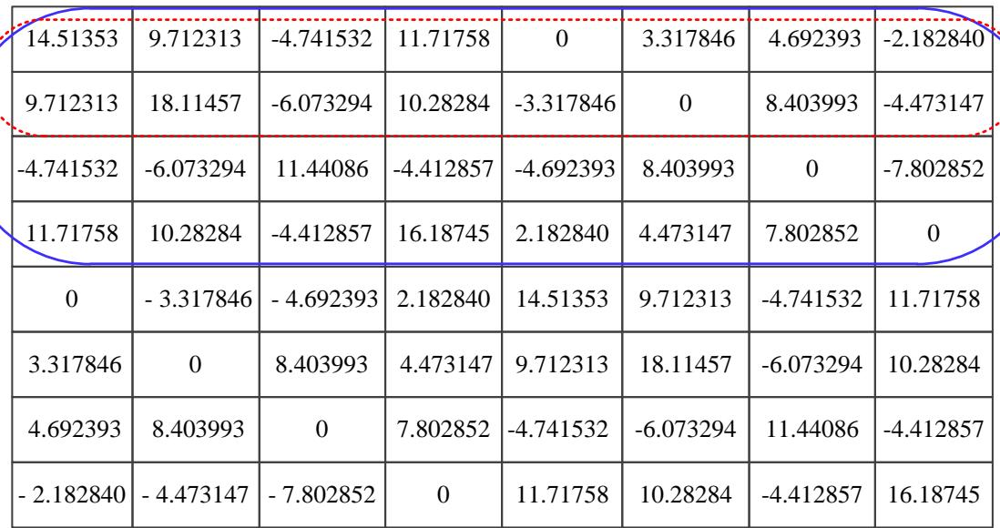
图2.6 变形后的 \(8 \times 8\) 实对称矩阵
2.3.3 矩阵乘法¶
本节介绍如何在基于FPGA的并行双边Jacobi旋转新方法中完成矩阵的左、右乘法。矩阵左乘法处理矩阵B的行向量，而右矩阵乘法处理矩阵B的列向量。图2.7显示了矩阵乘法的硬件结构，主要包括两种组件：乘法器和加法器，可以通过FPGA上的DSP48E1来实现，并且提高了工作频率。
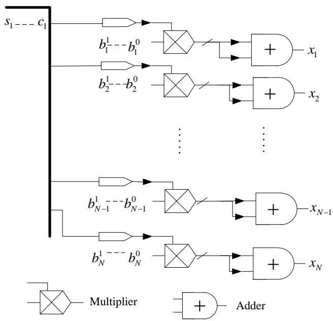
图2.7 矩阵乘法的硬件架构
如图2.7所示，其计算过程可以描述如下：在接收到Jacobi因子之后，矩阵左乘模
块将读取相应的行向量 \(\{b_1^0,\dots,b_N^0\}\) 和 \(\{b_1^1,\dots,b_N^1\}\) ，并输出加法器 \(\{x_1,\dots,x_N\}\) 的结果。矩阵右乘模块类似。
2.4 实验结果与分析¶
为了验证基于FPGA的并行双边Jacobi旋转新方法（New method）的性能，本节将其与其它四种特征值分解方法进行了比较，分别为：基于修正的Gram-Schmidt方法（QR algorithm）、文献[119]提出的Improved QR algorithm、文献[130]提出的Improved Jacobi's method和文献[126]提出的Fast CORDIC。Fast CORDIC是在FPGA上基于改进的CORDIC的BLV脉动阵列实现的。Improved Jacobi's method采用DSP48E1定点计算 \(2\times 2\) 分块子矩阵的乘法，主要对角处理器和非对角处理器的计算进行迭代来减少关键计算路径。需要说明的是，Improved Jacobi's method和Fast CORDIC这两种方法均是定点运算；而基于FPGA的并行双边Jacobi旋转新方法、QR algorithm和Improved QR algorithm则均进行单精度浮点运算（IEEE Std.754-1985）。
实验中，复厄米特矩阵维数设置为 \(8 \times 8\) ，原因是基于CORDIC设计的方法在XilinxXC7V690T—FPGA芯片上处理的矩阵最大维数是 \(8 \times 8\) ，其资源情况可以从文献[126]中的表IV中得出。本节通过两个实验来分别讨论基于FPGA的并行双边Jacobi旋转新方法的性能。第一个实验讨论了这五种方法的硬件资源消耗。由于单精度浮点运算的计算精度高于定点计算的结果，因此第二个实验仅对其中采用单精度浮点运算的三种方法分别从计算误差和特征向量的正交性两个方面讨论其数值性能。这两个实验的流程描述如下：
1、测试数据由 MATLAB 生成，并通过以太网接口导入 Xilinx XC7V690T—FPGA 芯片；
2、将单精度浮点运算的三种方法的扫描数设置为 9,由 FPGA 处理相同的复厄米特矩阵, 其计算结果通过以太网接口输出到 PC;
3、将单精度浮点运算的三种方法的 FPGA 计算结果与 MATLAB 中 EIG 函数的计算结果进行比较。
2.4.1 硬件资源消耗¶
本节实验中以三种矩阵数据读取方式实现基于FPGA的并行双边Jacobi旋转新方法，即在一个时钟周期内分别读取 \(P = 2\) 、4和8行的矩阵数据，以说明基于FPGA的并行
双边 Jacobi 旋转新方法具有较高的灵活性。表 2.1 中展示 Xilinx Vivado 2016.02 软件实现五种高性能方法的硬件资源消耗情况。
表 2.1 五种高性能方法的硬件资源消耗
| Method | LUTs | BRAM | DSP48E1 | Frequency(fmax) | Latency(one sweep) |
| QR algorithm | 46k | 36 | 1964 | 250MHz | 50us |
| Improved QR algorithm[119] | 50k | 38 | 2004 | 250MHz | 43us |
| Fast CORDIC[126] | 81k | 48 | 378 | 200MHz | 55us |
| Improved Jacobi's method[130] | 65k | 48 | 352 | 200MHz | 52us |
| New method (P=2) | 28k | 48 | 288 | 250MHz | 41.8us |
| New method (P=4) | 46k | 90 | 640 | 250MHz | 38us |
| New method (P=8) | 73k | 128 | 1740 | 250MHz | 36us |
由表2.1可知，与Improved Jacobi's method和Fast CORDIC两种方法相比， \(P = 2\) 时的基于FPGA的并行双边Jacobi旋转新方法消耗的硬件资源最少，并且时延最小，这与本章研究目标完全一致。当 \(P = 4\) 及 \(P = 8\) 时，虽然基于FPGA的并行双边Jacobi旋转新方法消耗的硬件资源有所增大，但是其并且并行性和灵活性更高，时延更小。与QRalgorithm和Improved QR algorithm两种方法相比，基于FPGA的并行双边Jacobi旋转新方法的时延仍然是最小的，虽然新方法消耗的硬件资源随着并行度 \(P\) 的增大也有所增大，但是整体上仍然比这两种QR方法消耗的硬件资源少。
以上是从整体的角度讨论硬件实现结果，以下再从 LUT、DSP48E1 以及时延三个方面来分别讨论表 2.1 中列出的这五种方法：
1、在 LUT 方面。Fast CORDIC 消耗的数量较多，因为它是基于 CORDIC 实现的，而 CORDIC 主要由 LUT 逻辑电路硬件实现。对于基于 QR 分解的两种设计，LUT 主要用于执行写/读取数据、地址和状态控制等操作，因此其消耗的 LUT 数量较少。而基于 FPGA 的并行双边 Jacobi 旋转新方法 \((P = 2)\) 消耗的 LUT 最少，主要是因为其硬件实现的大多数操作是矩阵乘法运算而非逻辑电路，但是随着并行度的增加，LUT 资源的消耗也随之增大。
2、在DSP48E1方面。Fast CORDIC和Improved Jacobi's method均是基于CORDIC实现的，在计算Jacobi因子时将三角函数运算转换为移位运算，从而避免了其中大量的乘法运算，因此DSP48E1消耗的数量较少；而基于QR算法的两种设计在计算正交Q矩阵以及特征向量时均需要使用乘法器，因此其消耗的DSP48E1数量较最多。由于基于FPGA的并行双边Jacobi旋转新方法充分挖掘了Jacobi旋转因子的稀疏性，在矩阵乘法时减少了冗余计算，因此乘法器的使
用数量明显降低。由于基于 FPGA 的并行双边 Jacobi 旋转新方法采用了逐行方式读取矩阵数据，因此当其在一个时钟周期内并行处理行数不同时，乘法器的消耗数量是不同的，也即随着并行度的增大，乘法器的消耗数量随之增大。
3、在时延方面。对于维数是 \(8 \times 8\) 复矩阵，当 \(P = 2\) 时使用 8 个时钟周期来读取整个矩阵数据，当 \(P = 4\) 时使用 4 个时钟周期来读取整个矩阵数据，当 \(P = 8\) 时使用 2 个时钟周期来读取整个矩阵数据，因此基于 FPGA 的并行双边 Jacobi 旋转新方法的时延随着并行度的增大而减少。同时，也正是得利于 Jacobi 旋转矩阵的稀疏性以及新方法较高的并行性和灵活性，才使得基于 FPGA 的并行双边 Jacobi 旋转新方法比其他四种高性能方法的时延更小。
总体来说，基于FPGA的并行双边Jacobi旋转新方法优势比较明显，可以在实际工程中根据需求综合选择其并行度进行处理。
2.4.2 数值性能¶
2.4.2.1 计算误差¶
本节将分别从矩阵重建以及特征值计算误差两个方面，讨论三种方法（基于FPGA的并行双边Jacobi旋转新方法、QRalgorithm和Improved QR algorithm[119]）在单精度浮点运算下的数值性能。
矩阵重建计算误差定义如下：
矩阵特征值的计算误差定义如下：
其中， \(|\cdot |\) 表示绝对值运算，diag表示矩阵的对角元素； \(\Sigma_M\) 和 \(\Sigma_F\) 分别是基于MATLAB的EIG和基于FPGA得到的特征值矩阵。
为了公平起见，对同一个矩阵，分别将三种方法的计算误差与MATLAB中的EIG函数进行比较，其中基于FPGA的并行双边Jacobi旋转新方法选择并行度 \(P = 8\) 。要说明的是，在不同的并行度 \(P\) 值下，基于FPGA的并行双边Jacobi旋转新方法的数值计算结果是相同的。矩阵重建以及特征值计算误差的实验结果分别如图2.8和图2.9所示。
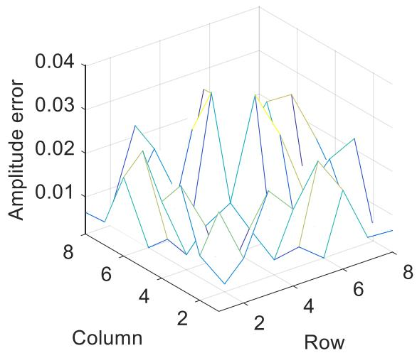
(a) QR algorithm
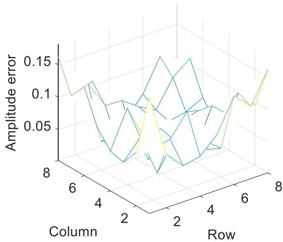
(b) Improved QR algorithm[119]
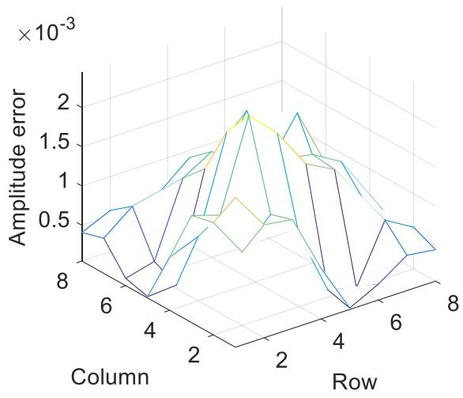
(c) 基于FPGA的并行双边Jacobi旋转新方法
图2.8 矩阵重建误差
由图2.8可以观察到，矩阵重建误的幅值从小到大依次是基于FPGA的并行双边Jacobi旋转新方法、Improved QR algorithm以及QR algorithm。也就是说，基于FPGA的并行双边Jacobi旋转新方法在三种方法中矩阵重建性能最好。
由图2.9可以观察到，QRalgorithm在相同扫描次数下的特征值计算误差最大，而基于FPGA的并行双边Jacobi旋转新方法的特征值计算误差最小。因此，基于FPGA的并行双边Jacobi旋转新方法在三种方法中特征值的计算精度更高。
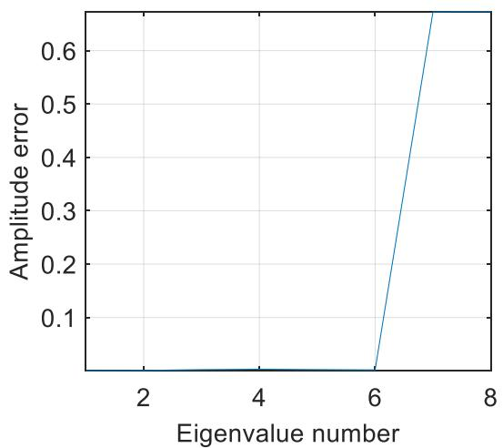
(a) QR algorithm
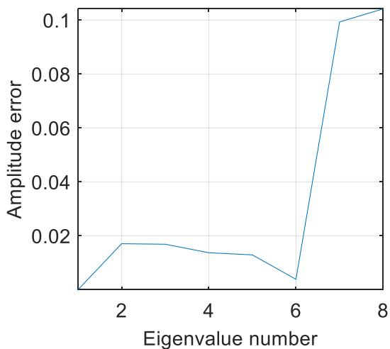
(b) Improved QR algorithm[119]
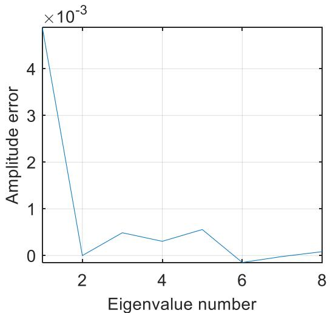
(c) 基于FPGA的并行双边Jacobi旋转新方法
图2.9 特征值计算误差
2.4.3.2 特征向量的正交性¶
这部分将继续讨论通过三种方法得到的特征向量的正交性。
特征向量的正交性的定义如下：
其中，I是单位矩阵。三种方法得到的特征向量的正交性如图2.10所示。
由图2.10可以观察到，QRalgorithm得到的特征向量正交性最好。然而，图2.9所示的通过QRalgorithm和Improved QR algorithm[119]获得的特征值比基于FPGA的并行双边Jacobi旋转新方法的误差更大。有关QRalgorithm和Jacobi旋转特征值分解的数值性的更多讨论可以参考其它相关文献。
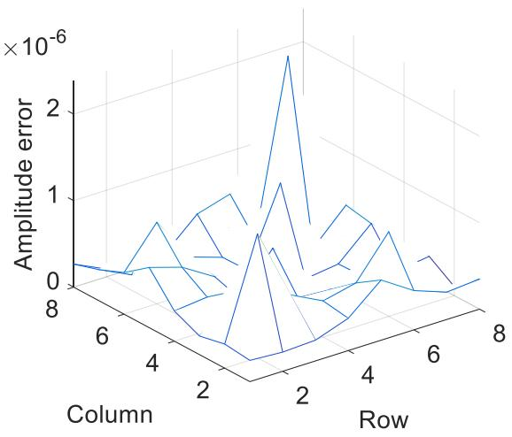
(a) QR algorithm
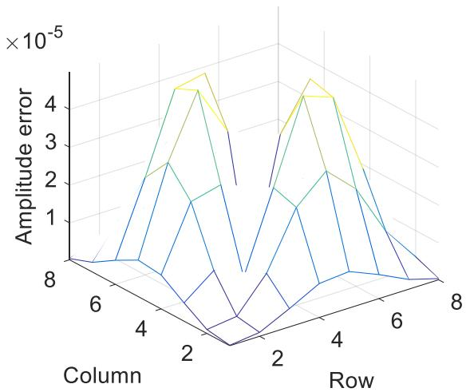
(b) Improved QR algorithm[119]
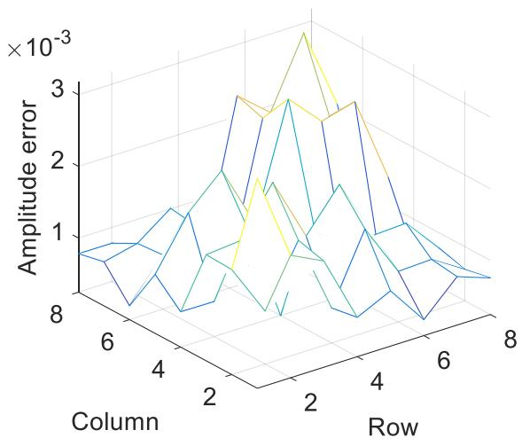
(c) 基于FPGA的并行双边Jacobi旋转新方法
图2.10 特征向量的正交性
总之，通过与多种高性能方法的对比，基于FPGA的并行双边Jacobi旋转新方法无论在硬件资源消耗上还是在数值性能上均具有较明显的优势。
2.5 基于DOA估计的应用结果与分析¶
为了评估基于FPGA的并行双边Jacobi旋转新方法的工程应用性能，将其应用于无线通信的基于子空间的DOA估计问题。用于解决DOA估计问题的多信号分类MUSIC算法的计算程序可参考文献[126]的第四节，其采用了正交变换[193]以降低计算成本，同时也将复厄米特矩阵变换为一个实对称矩阵进行处理。
本节实验中将复厄米特矩阵维数设置为 \(16 \times 16\) ，由于 Fast CORDIC 最大只能处理
\(8 \times 8\) 维矩阵，因此只分析了 QR algorithm、Improved QR algorithm[119]、Improved Jacobi's method[130]以及本章提出的基于 FPGA 的并行双边 Jacobi 旋转新方法共计四种高性能方法在 DOA 估计上的应用情况。其中基于 FPGA 的并行双边 Jacobi 旋转新方法 \(P = 2\) ，表示新方法将在 16 个时钟周期内读完数据。基于 2.4 节的实验平台，表 2.2 中给出了主要实验参数，以及这四种方法硬件实施后的硬件资源消耗情况。
表 2.2 主要实验参数和硬件资源消耗
| Name | Channel | Source | Snapshots | Degree step | SNR |
| Value | 16 | 8 | 1024 | 0.01° | -10dB |
| Name | LUTs | BRAM | DSP48E1 | Frequency | Latency |
| QR algorithm | 64k | 64 | 2210 | 250MHz | 620us |
| Improved QR algorithm[119] | 60k | 58 | 2184 | 250MHz | 584us |
| Improved Jacobi's method[130] | 72k | 58 | 1264 | 250MHz | 600us |
| New method (P=2) | 50k | 60 | 1840 | 250MHz | 566us |
要说明的是，表2.2中的时延结果不包含MUSIC算法的伪倒频谱搜索。文献[193]指出，MUSIC算法中复杂的伪倒谱搜索的计算成本大于其中的矩阵特征值分解。伪倒谱搜索实际上是一个最大集选择问题，可以通过本文第五章描述的部分序列排序新方案来解决。
根据表2.2可知，这四种方法均可以成功地解决DOA估计问题。在这四种方法的硬件实现中，基于FPGA的并行双边Jacobi旋转新方法的硬件资源消耗较少并且时延较小，这与2.4.1节的硬件实验结果一致。
接下来对这四种方法应用于 DOA 估计的数值计算结果进行对比分析，测试数据由 MATLAB 生成。众所周知，数值稳定性是工程中的一个重要要求，因此建议在工程中应该优先采用浮点运算来进行矩阵特征值分解。由于 Improved Jacobi's method[130]是定点运算，而其他三种方法均是单精度浮点运算，为了实验的公平性，本节只对比了基于单精度浮点运算的三种方法应用于 DOA 估计问题的数值计算结果。
首先，图2.11显示了基于FPGA三种方法获得的特征向量的正交性，采用2.4.2.2节的方法进行计算。由图2.11可以观察到，基于FPGA的并行双边Jacobi旋转新方法的特征向量的计算误差幅值最小，即基于FPGA的并行双边Jacobi旋转新方法得到特征向量正交性最佳。
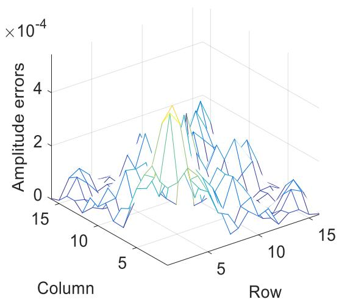
(a) QR algorithm
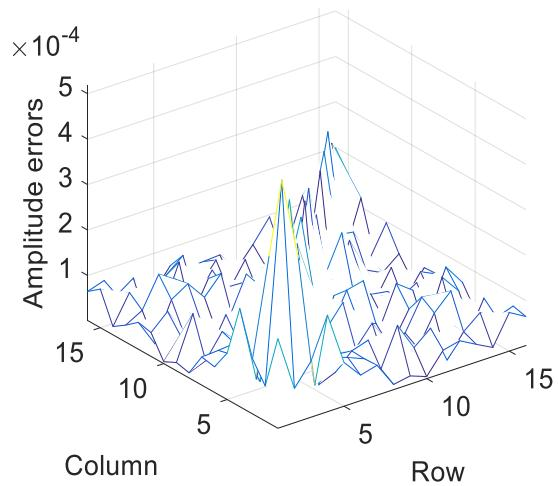
(b) Improved QR algorithm[119]
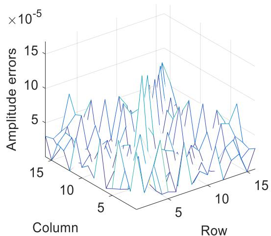
(c) 基于FPGA的并行双边Jacobi旋转新方法
图2.11 基于三种方法实现MUSIC算法的特征向量正交性
其次，图2.12(a)-(c)显示了基于三种方法的伪倒谱结果。整体上这三种方法均可以正确地指示8个信源位置，但是仔细观察可以看到，这三个伪倒谱的谱峰形状不同，其主要原因是这三种方法的特征向量不同。基于FPGA的并行双边Jacobi旋转新方法中的谱峰值是这三个伪倒谱中最尖锐的，也说明基于FPGA的并行双边Jacobi旋转新方法得到的噪声子空间与信号子空间正交性更好。
图2.12(d)-(f)呈现了通过对比MATLAB和基于FPGA三种方法获得的伪倒谱的计算误差，可以观察到，基于FPGA的并行双边Jacobi旋转新方法的误差幅值最小。因此，对于DOA估计问题的应用，基于FPGA的并行双边Jacobi旋转新方法在这几种高性能方法中最佳。
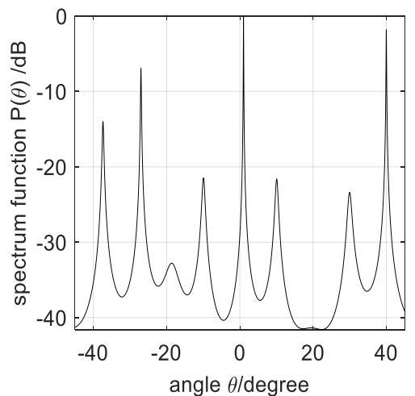
(a) QR algorithm 的伪倒谱
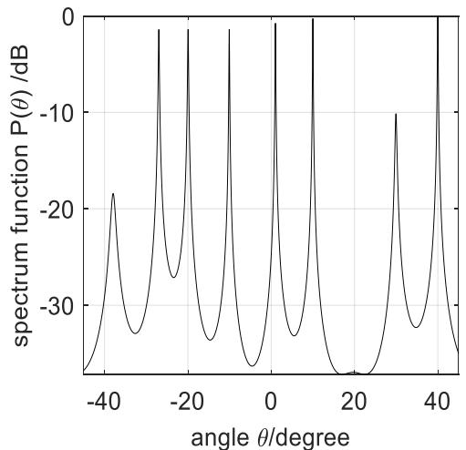
(b) Improved QR algorithm[119]的伪倒谱
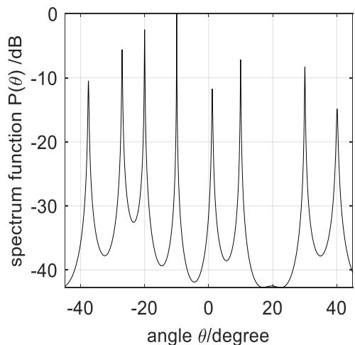
(c) 基于FPGA的并行双边Jacobi旋转新方法的伪倒谱
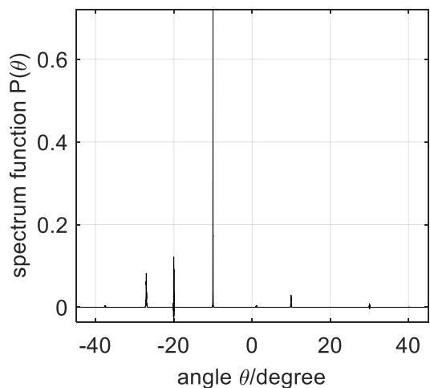
(d) QR algorithm 的伪倒谱误差
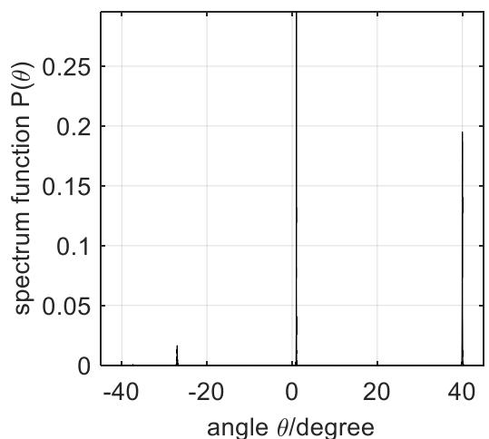
(e) Improved QR algorithm[119]的伪倒谱误差
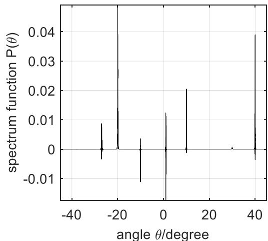
(f) 基于FPGA的并行双边Jacobi旋转新方法的伪倒谱误差
图2.12 基于三种方法实现MUSIC算法的伪倒谱
2.6 结论¶
本章提出了一种基于FPGA的并行双边Jacobi旋转的特征值分解新方法，其中充分利用了Jacobi旋转因子所构成旋转矩阵的稀疏特性。与当前基于CORDIC的BLV脉动阵列的方法及其改进方法完全不同，所提出的新方法在硬件实现上深入考虑了稀疏旋转矩阵的乘法和现代FPGA的硬件结构，即特征值分解中的矩阵乘法成功的通过硬件实现中的行方式来解决。此外，通过实验对比了新方法与当前四种不同方法的硬件资源消耗以及计算误差。实验结果表明，基于FPGA的并行双边Jacobi旋转新方法的并行性和灵活性较高，硬件资源消耗较少，时延较小以及数值计算误差较小。
第三章 基于FPGA的前视性简化单边Jacobi新方法的矩阵特征值分解¶
数值性能和实时性是矩阵特征值分解工程应用中的一个重要指标，本章提出了一种前视性简化单边 Jacobi（The look-ahead simplified one-sided Jacobi，LASOJ）的新方法，在理论上，证明了 LASOJ 新方法具有比单边 Jacobi 旋转算法更好的特征向量正交性，同时基于 FPGA 设计了高效计算架构。通过数值性能实验和硬件实验，分别使用模拟仿真数据和实测数据对多种 EVD 方法及其硬件设计进行了对比，实验结果表明，LASOJ 新方法具有更好的数值性能，并且 LASOJ 高效计算架构的灵活性较高，其硬件资源消耗较少，时延较小。
3.1 问题描述¶
根据前面的讨论，矩阵特征值分解在许多科学领域中均是一种强大的数学工具，其高性能实现已成为这些领域中的一个非常重要的部分。关于在FPGA上的高性能特征值分解，已有大量文献[194, 128, 195, 124, 126, 196]对其进行研究。对于Jacobi方法或基于Givens旋转的QR算法，其硬件实现的优势主要得益于CORDIC[113]，并由经典的BLV脉动阵列[128]或其改进形式实现。CORDIC将三角函数转换为移位运算，因此这些基于定点运算的硬件设计可以节省宝贵的硬件资源，然而计算精度却较低。已有文献对采用定点运算的特征值分解硬件实现方法进行了深入讨论，发现其中定点数的宽度在某些情况下应大于40位才能满足高性能要求，但是这在硬件实现中却失去了定点运算的优势。因此，为了提高计算精度，本章采用单精度浮点运算来进行矩阵特征值分解。
根据阿贝尔·鲁菲尼定理[190]，对于阶数为4或更大的多项式求解，没有显式的且精确的代数计算公式，即当矩阵维数大于 \(3 \times 3\) 时，特征值和特征向量是迭代运算的结果。QR算法和Jacobi旋转方法在数学上都属于迭代方法，并且先前的基于这些算法的改进方法通常侧重于硬件资源消耗的减少和时延的降低，而忽略了数值性能是工程中一个重要指标的事实。在这些文献中，通常使用MATLAB中RANDN函数生成矩阵条件数良好的矩阵数据集来测试，以证明其方法的有效性。但是在实际工程中，常常会遇到一些矩阵条件数相对较差的矩阵。同样，笔者在研究中也发现了本文第二章中提出的基于FPGA的并行双边Jacobi旋转新方法，也有可能出现错误的计算结果。对多种特征值分解方法进行详细的实验分析，发现MATLAB中的EIG函数在双精度运算中尚有可能不
能正确的特征值分解一些复厄米特矩阵。在这种状况下，就必须进一步考虑，如何高效的进行矩阵特征值分解同时，还能保证特征值分解结果的正确性。对QR算法和Jacobi旋转算法进行深入分析可知，单边Jacobi旋转算法的特征值由一个向量的 \(l_{2}\) 范数获得，因此可以确保特征值始终是非负实数，提高了特征值分解的数值稳定性。虽然单边Jacobi旋转方法被广泛用于奇异值分解，但同时也适用于矩阵特征值分解。
综上，本章提出了一种基于FPGA的前视性简化单边Jacobi（The look-ahead simplified one-sided Jacobi，LASOJ）新方法的高效计算架构，目标是高性能实现特征值分解的同时更加精确地获得特征值和特征向量。本章的主要贡献描述如下：
1) LASOJ 新方法在每次进行矩阵 Jacobi 平面旋转前, 预先一次全部计算正交矩阵 \(\mathbf{A}_{s}\) 列的 \(l_{2}\) 范数, 这样操作有助于减少硬件系统的时延, 并且有利于硬件电路的模块化。
2) LASOJ 新方法具有更好的特征向量正交性，并在理论上最接近真值，同时也给出了这一结论的证明过程。
3) LASOJ 高效计算架构不需要缓存一组旋转矩阵来计算特征向量。然而，先前的设计需要保存 Jacobi 旋转方法中的旋转矩阵或 QR 算法中的正交矩阵才能计算特征向量。这有助于减少计算误差，以及减少硬件资源的消耗。
4) 给出了基于FPGA实现LASOJ新方法的高效计算架构。
正如前面提到的，先前的EVD方法没有充分重视数值性能。因此本章基于三个方面：特征向量的正交性、矩阵重构误差和特征值误差，充分分析这些EVD方法的数值性能。通过实验和MUSIC算法的应用分别对比了多种EVD方法的数值性能以及其硬件设计。
3.2 前视性简化单边 Jacobi 旋转特征值分解新方法¶
本节基于单边 Jacobi 旋转算法，介绍了前视性简化单边 Jacobi（LASOJ）新方法的计算过程并且给出了 LASOJ 新方法的伪代码，证明了 LASOJ 新方法获得的特征向量比传统 Jacobi 旋转算法获得的特征向量正交性更好。
3.2.1 单边 Jacobi 旋转算法¶
本文在2.2.1节中对双边Jacobi旋转算法进行了详细描述。但是在后续研究中，笔者发现通过单边Jacobi旋转算法得到的计算结果更加精确。
单边 Jacobi 旋转算法的主要思想是对任意实矩阵 \(\mathbf{B}\) 进行一系列 Jacobi 平面旋转的正
交化，使得 \(\mathbf{B}\) 中的任意两个列向量正交：
其中， \(\mathbf{U}_i\) 是 Jacobi 旋转矩阵，其本身也是正交阵。实际上，单边 Jacobi 旋转算法是 Hestenes 等人在传统双边 Jacobi 旋转算法的基础上提出的。令：
其中， \(\mathbf{B}_0 = \mathbf{B}\) ， \(\mathbf{A}\) 为实对称矩阵。对 \(\mathbf{A}\) 进行双边 Jacobi 旋转：
将（3.2）代入（3.3）可以得到：
令 \(\mathbf{B}_1 = \mathbf{B}_0\mathbf{U}_0\) ，则等式(3.4)可以写为：
经过多次旋转后：
可以得到：
因此，对矩阵 \(\mathbf{B}\) 的单边 Jacobi 旋转等于对 \(\mathbf{B}^T\mathbf{B}\) 进行双边 Jacobi 旋转。使用 \(\mathbf{B}^T\mathbf{B}\) 确定 Jacobi 旋转角度，对 \(\mathbf{B}\) 进行单边 Jacobi 旋转，最终使得：
其中， \(\Sigma\) 是一个对角阵，是矩阵 \(\mathbf{B}\) 的奇异值； \(\mathbf{U}\) 和 \(\mathbf{V}\) 是 \(\mathbf{B}\) 的左右奇异向量。如果矩阵 \(\mathbf{B}\) 是实对称矩阵，则 \(\mathbf{U} = \mathbf{V}\) ，即为矩阵 \(\mathbf{B}\) 的特征向量， \(\Sigma\) 是矩阵 \(\mathbf{B}\) 的特征值。
由式(3.9)可知，在单边 Jacobi 旋转算法特征值分解的计算过程中，并不会直接产生非对角线上的 0 元素，因为单边 Jacobi 旋转算法是通过一系列旋转矩阵 \(\mathbf{U}\) 的正交化的迭代过程，对最终产生的结果进行正交化判断是否收敛即可完成单边 Jacobi 旋转的矩阵特征值分解。对于单边 Jacobi 旋转算法的硬件实现，与双边 Jacobi 旋转算法的传统实现类似，其局限性详见 2.2.1 节的描述。
3.2.2 前视性简化单边 Jacobi 新方法¶
图3.1给出了基于3.2.1节描述的标准单边Jacobi方法的详细计算流程。需要说明的是，图3.1所示的标准单边Jacobi方法与当前的基于CORDIC的BLV脉动阵列形式的实现方式完全不同，其改进点是笔者基于本文第二章实现的：首先采用间接矩阵特征值分解法，即将复厄米特矩阵变形为实对称矩阵；其次采用列读取方式读取矩阵数据；最后基于FPGA实现并采用单精度浮点运算。
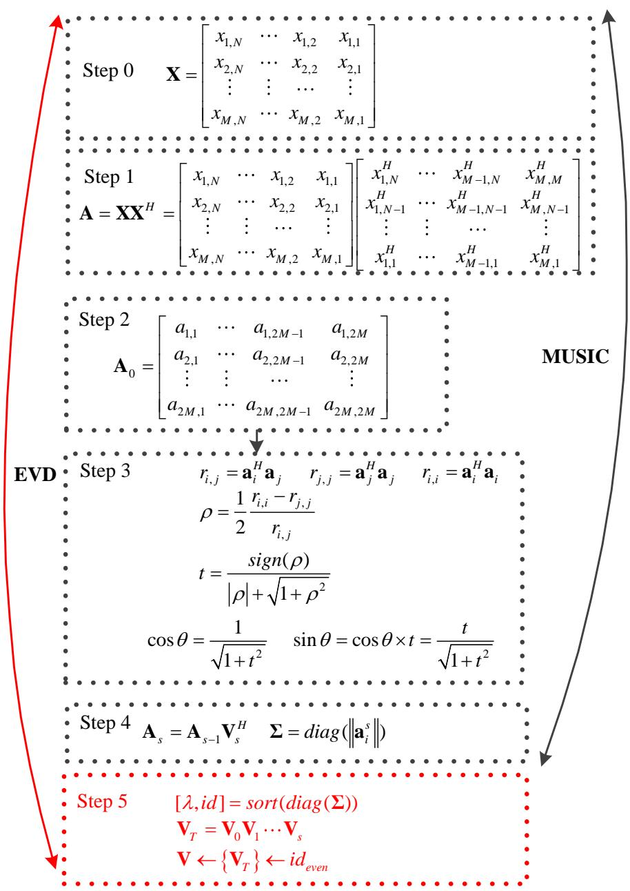
图3.1 标准单边Jacobi方法的伪代码
由图3.1所示，标准单边Jacobi方法的整个过程有6个主要步骤，即红色双箭头所包括的部分：step0用于缓存返回信号；step1计算复协方差矩阵A；step2将复协方差矩
阵 \(\mathbf{A}\) 变形为实矩阵 \(\mathbf{A}_0\) 形式; step3 计算 Jacobi 旋转因子; step4 对矩阵 \(\mathbf{A}_0\) 执行稀疏 Jacobi 因子旋转矩阵右乘, 当扫描次数没有达到预设值时继续循环执行 step3, 当扫描次数达到预设值时计算正交矩阵 \(\mathbf{A}_S\) 列向量的 \(l_2\) 范数得到特征值组成的对角矩阵 \(\boldsymbol{\Sigma}\) (扫描次数的描述见 2.3.2 节); 循环完毕后, step5 通过执行旋转因子矩阵右乘获得矩阵 \(\mathbf{V}_T\) , 并通过对角矩阵 \(\boldsymbol{\Sigma}\) 的偶数或奇数位置以升序方式从矩阵 \(\mathbf{V}_T\) 中选择特征向量 \(\mathbf{V}\) 。
对于上述6个步骤，从硬件实现的角度出发，可以发现：
1、图3.1实际上不需要完成单边Jacobi算法的全部完整步骤，即当得到特征值时，单边Jacobi旋转算法的特征值分解过程在执行完step4就可以停止了，即图3.1所示的黑色双箭头部分。对此，也可以从面向应用的角度理解，比如实际工程中解决DOA估计问题的MUSIC算法，其首要目标是通过较小的特征值来找到噪声子空间，因此不需要在step5中计算所有特征向量，即图3.1所示的红色虚线框部分。
2、图3.1所示step5中的特征向量的计算，是通过多个旋转矩阵相乘来实现的。这样在硬件实现时因为有限的计算动态范围则会增加计算误差的累积，降低计算精度。
3、图 3.1 所示的 step3 中的矩阵 \(\mathbf{A}_i (0 < i \leq S)\) 列向量 \(\left\langle a_i, a_i \right\rangle\) 的内积计算，均是在每次扫描中的相应矩阵列数据调度时分别进行计算的，这样非常不利于硬件实现的并行执行。
4、Jacobi 旋转因子计算过程中的 \(<a_{i}, a_{i}>\) 内积计算与 \(\mathbf{A}_{i}(0<i \leq S)\) 列向量的 \(l_{2}\) 范数在数学上的计算相同。这意味着在硬件实现时可以硬件资源复用。
因此，本章提出了LASOJ新方法，目的是提高其计算精度的同时，减少其硬件资源消耗以及降低时延，图3.2显示了LASOJ新方法的伪代码。
首先，根据图3.2所示，LASOJ新方法的最终结果只输出了特征值，而特征向量则嵌入在正交矩阵 \(\mathbf{A}_S\) 中。其具体执行过程为：经过多次Jacobi平面旋转后得到正交矩阵 \(\mathbf{A}_S\) 计算正交矩阵 \(\mathbf{A}_S\) 所有列向量的 \(l_2\) 范数，根据这些 \(l_2\) 范数的偶数或奇数位置得到特征向量。对此，假设在 \(S = S_{pre}\) 处获得矩阵 \(\mathbf{A}_S\) ，特征向量的计算过程则简化为：
其中， \([\cdot]^{-1}\) 表示逆矩阵； \(\Sigma\) 是一个对角矩阵，因此， \(\Sigma^{-1}\) 很容易计算：
其中， \(\lambda_{i}\) 是矩阵 \(\mathbf{A}\) 的第 \(i\) 个特征值。
其次，为了节省宝贵的硬件资源，图3.2所示的LASOJ新方法在每次扫描前，预先一次计算 \(\mathbf{A}_S\) 所有列向量的 \(l_{2}\) 范数。而先前的设计是每次扫描中的每一次调度分别来计算 \(l_{2}\) 范数。
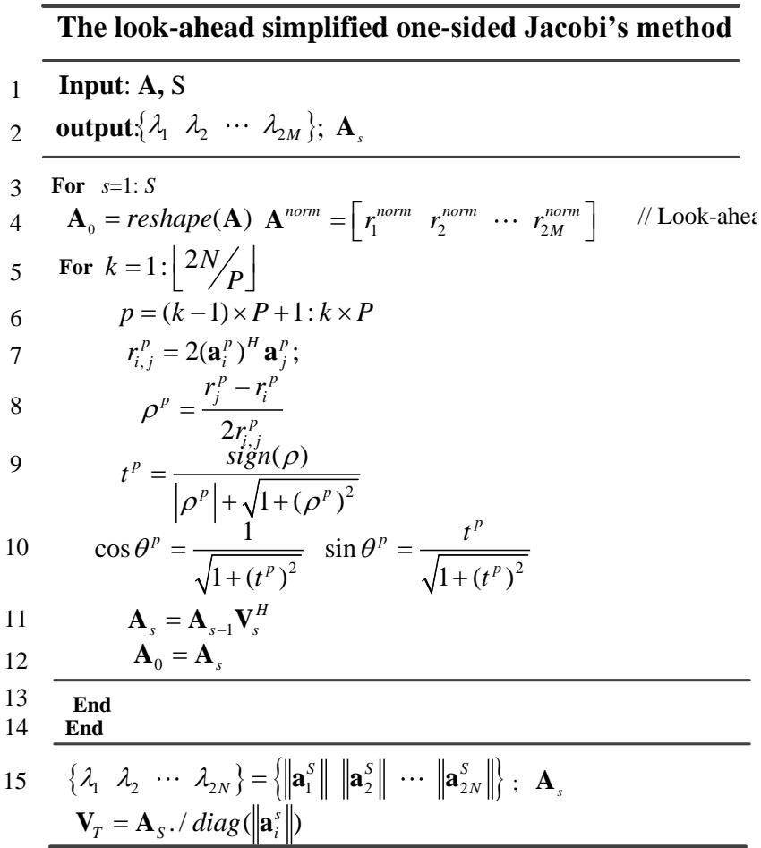
图3.2 LASOJ新方法的伪代码
总之，根据上述可知LASOJ新方法具有如下优势：
1、LASOJ 新方法具有前视性，即在每次扫描前预先一次计算 \(\mathbf{A}_s\) 所有列向量的 \(l_2\) 范数。
2、LASOJ 新方法的硬件实现不需要额外缓存一组旋转矩阵来计算特征向量，即 LASOJ 新方法可以在硬件实现中节省了乘法器和 RAM 块的消耗。
3、LASOJ 新方法的硬件实现复用矢量点积电路。即在 Jacobi 旋转因子和特征值的计算过程中均要完成矢量点积运算，复用矢量点积计算的电路可以节省乘法器和加法器，并且使得硬件实现模块化。
4、LASOJ 新方法的硬件实现在一个时钟周期内读取矩阵的 \(P\) 个列向量，这样可以节省宝贵的硬件资源，以便可以处理更高维矩阵。主要原因是列式方式具有较高的灵活性以及 LASOJ 新方法较高的并行性。
3.2.3 特征向量的正交性¶
以上对LASOJ新方法特征值分解过程进行了详细的描述，本节将讨论该方法获得的特征向量的正交性。对于一个复厄米特矩阵的变形实对称矩阵B，如果它在预设扫描次数之后通过标准单边Jacobi方法进行分解，可以得到：
其中， \(\mathbf{V}\) 是特征向量， \(\mathbf{D}\) 是正交矩阵。由于硬件计算平台的动态范围有限，并且矩阵特征值分解的计算过程是迭代的，因此， \(\mathbf{V}\) 只是近似解。将式（3.12）应写为：
如果在理论上假设 \(\mathbf{U}\) 是矩阵 \(\mathbf{B}\) 特征向量的真值，则有：
由于 \(\mathbf{U}\) 和 \(\mathbf{V}\) 都是正交矩阵，因此式（3.14）也可以表示为：
其中， \(\mathbf{V}_0\) 是 \(\mathbf{V}\) 和 \(\mathbf{U}\) 之间的一个残差正交矩阵。实际上，当扫描次数达到预设次数时， \(\mathbf{V}_0\) 在理论上是最接近单位矩阵的一个对角矩阵，因为其非对角元素接近于零。基于特征向量正交性的定义，并且 \(\mathbf{V}\) 是近似解，因此：
假设 \(\mathbf{U}\) 是真值, 因此 \(\mathbf{U} \mathbf{U}^{T} = \mathbf{I}\) 。基于以上描述获知, 残差正交矩阵 \(\mathbf{V}_{0}\) 实际上在 \(\mathbf{U}\) 和 \(\mathbf{V}\) 之间起不稳定作用。由于 \(\mathbf{B}\) 是实对称矩阵, 因此将式 (3.15) 写为:
检查由式（3.17）获得的特征向量，D实际上表示为：
由于 \(\pmb{\Sigma}\) 和 \(\mathbf{V}_0\) 都是对角矩阵，故 \(\mathbf{V}\mathbf{V}_0\pmb{\Sigma}\mathbf{V}_0^T = \mathbf{V}\mathbf{V}_0\mathbf{V}_0^T\pmb{\Sigma}\) 。因此，从LASOJ新方法获得的特征向量 \(\mathbf{U}_0\) 可以表示为：
从而，LASOJ新方法和标准单边Jacobi方法中两种特征向量的正交性分别为：
根据式(3.20)可知，通过理论推导，LASOJ新方法获得的特征向量具有比单边Jacobi旋转算法更好的正交性。至于其他矩阵特征值分解方法，由于迭代计算的性质和计算平台的有限动态范围，其特征向量的正交性与单边Jacobi旋转算法类似。
3.3 关键硬件体系架构¶
基于LASOJ新方法的优势以及FPGA的高度并行性，本节给出了基于FPGA的LASOJ新方法高效计算架构，并且分别从三个方面对进行了详细的描述：首先对LASOJ高效计算架构的顶层描述进行了详细描述，并且给出了计算Jacobi因子的硬件架构；其次从实际应用的角度对LASOJ高效计算架构所采用的单精度浮点运算以及复厄米特矩阵间接特征值分解方法进行了详细分析；最后从系统的角度对列式矩阵数据读取方式进行了详细探讨。
3.3.1 顶层描述¶
在工程上，高吞吐量和低时延是基于FPGA实现矩阵特征值分解的两个最重要的要求。在一定的时延下，实现高吞吐量的一种方法是不考虑硬件资源的交织处理策略，这意味着必须使用一些相同的电路来完成矩阵特征值分解。并且在实际应用中，硬件工程师也要在设计中考虑硬件资源的有效利用。因此，LASOJ高效计算架构在硬件实现上采用了硬件资源复用的思想，图3.3是LASOJ高效计算架构的顶层描述，以下分别从主要硬件模块和资源复用两方面来介绍。
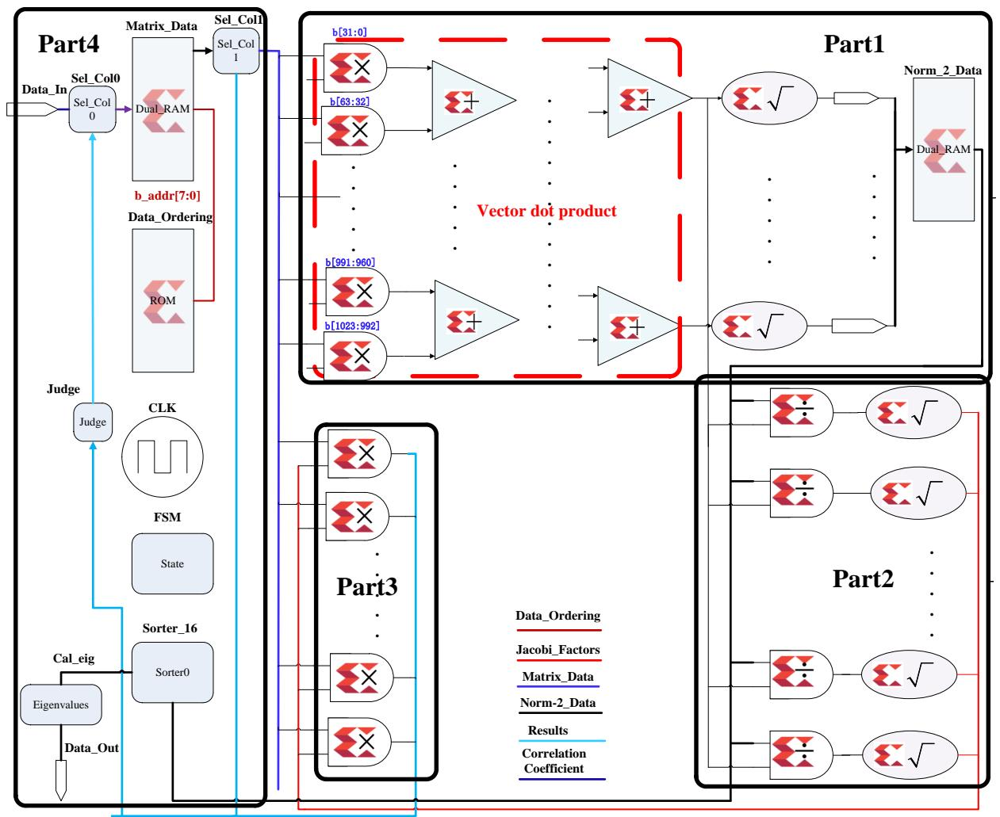
图3.3 LASOJ高效计算架构的顶层描述
首先，LASOJ高效计算架构主要包括四个部分：
1、Part1 用于在一次扫描前计算 Matrix_Data 模块中所有列向量的 \(l_{2}\) 范数；
2、Part2 用于计算 Jacobi 旋转因子。其复用 Part1 中的矢量点积计算电路, 即 Part1 中红色虚线框部分;
3、Part3 用于计算 Jacobi 矩阵旋转。完成对 Matrix_Data 模块中的矩阵右乘，主要由并行乘法器和加法器组成；
4、Part4 中：Matrix_Data 模块用于缓存变形的协方差矩阵或由 Part3 完成的矩阵右乘的中间结果；Data_Ordering 模块用于保存奇偶固定调度序列；当扫描次数达到预设值时，Sorter0 模块对 Par1 中 Norm-2_Data 模块保存的 \(l_{2}\) 范数进行排序；FSM 是一个有限状态机，用来监控矩阵特征值分解的整个电路状态。
根据上述四个主要部分可知，在LASOJ高效计算架构中，两个模块在硬件实现中被复用：
- 第一个复用模块是 Part1，复用原因是矩阵列向量的 \(l_{2}\) 范数运算与单边 Jacobi 旋转算法特征值的 \(l_{2}\) 范数运算公式相同；
2、第二个复用模块是矢量点积计算的电路，它由计算 \(l_{2}\) 范数的 Part1 和计算 Jacobi 旋转因子的 Part2 共享。矢量点积是 \(\left\|a_{i}\right\|\) 和 \(\langle a_{i}, a_{j} \rangle\) 计算中的一个常见操作，其计算由加法和乘法组成，虽然理论上可以使用两个模块同时计算 \(\left\|a_{i}\right\|\) 和 \(\langle a_{i}, a_{j} \rangle\) ，但是乘法器对于 FPGA 来说非常珍贵，因此复用矢量点积电路可以节省乘法器资源的使用。例如对于 MUSIC 算法的实现，还必须使用许多乘法器并行计算伪倒谱，来减少算法时延。
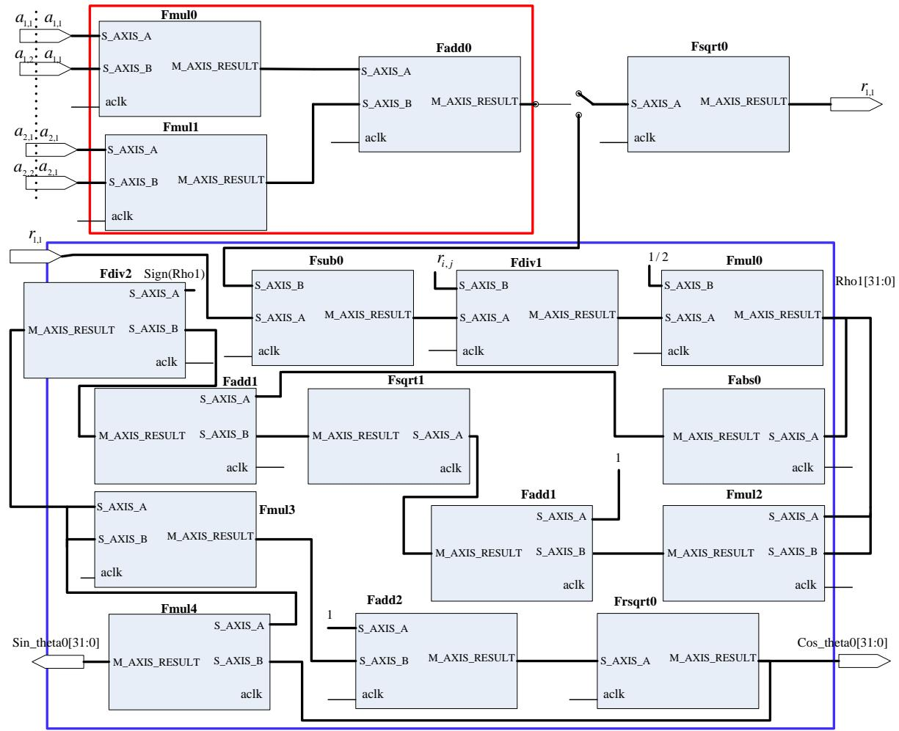
图3.4 计算Jacobi因子的硬件架构
图3.4是计算Jacobi因子的硬件架构，对应图3.3中的Part2部分。根据图3.4可知，计算Jacobi因子的硬件架构使用了不同的IP符号来描述，原因是LASOJ高效计算架构的基本数学运算主要由加法、乘法、比较和除法等组成，这些都可以通过Xilinx浮点 \(\mathbf{IP}^{[210]}\)
来完成。因此，不需要提供RTL电路，读者可以参考Xilinx浮点IP用户指南。
3.3.2 复矩阵特征值分解以及浮点运算¶
LASOJ高效计算架构采用间接法处理复厄米特矩阵特征分解，以及采用单精度浮点运算实现。本节给出了这样操作的两个原因：
首先，对于复厄米特矩阵，其特征值分解算法在处理方式上可以分为两类：直接法和间接法。直接法通过一系列复旋转矩阵直接处理复厄米特矩阵[195]；然而间接法通过一系列实旋转矩阵分解一种变形形式的复厄米特矩阵[124]，计算过程可详细参见2.2.3节。
实际上，对于复厄米特矩阵的特征值分解，理论上直接法和间接法之间没有区别。然而，在工程实现中由于硬件平台的动态范围有限，会导致计算结果精度的不同，因此必须考虑它们在不同硬件平台上的实现。
对于一个复厄米特矩阵，其特征值在理论上必须是非负实数[191]。如果复厄米特矩阵经过一个矩阵特征值分解算法所获得的特征值中存在一些负数或复数，那么在其计算过程中可能存在一些问题。由于间接法式在实数域进行计算的，其计算结果可确保为非复数，因此本文建议应该优先采用间接法。
其次，对Jacobi旋转算法在硬件实现中导致计算误差的两个因素进行了分析：
第一个因素是 \(\pi\) ，这是一个无理数。由于计算 Jacobi 因子的三角函数运算与 \(\pi\) 有着紧密联系，而对于 \(\pi\) ，所有不同的计算平台都会有一些误差，而减少这种误差的唯一方法是增加动态范围。与定点数相比，浮点数具有较大的动态范围。如前所述，计算精度是工程的一个重要要求。因此，虽然矩阵特征值分解以硬件资源为代价，但为了保证较高的计算精度，采用浮点运算仍然优于定点运算。
第二个因素是计算平台有限的动态范围。在特征值分解计算过程中分析动态范围的影响对于不同计算平台来说是一个非常复杂的问题。B.Kabi等人[197]深入分析了基于FPGA实现的定点SVD和EVD算法，该文献指出基于FPGA实现的某些情况下，定点数的宽度应不低于40位，才能满足较高精度的计算结果。事实上，与单精度浮点运算相比，SVD和EVD在40位定点运算中并没有明显的优势。尽管在硬件实现中，32位单精度浮点运算的电路比32位定点运算的电路复杂，但32位单精度浮点运算的电路的高动态范围在工程上更具吸引力，更能满足工程所需要的较高计算精度要求。
综上所述，对于复厄米特矩阵的特征值分解，LASOJ高效计算架构采用间接法处理，并且主要考虑单精度浮点运算来实现。
3.3.3 矩阵数据读取方式¶
LASOJ 高效计算架构采用列方式读取矩阵数据，行/列式矩阵数据读取方式的具体操作见 2.3.2 节，本节从系统设计的角度对行/列式矩阵数据读取方式进行详细解释：
1、从系统的并行性操作角度出发，矩阵特征值分解只是阵列信号处理的一部分，即必须还要在一个FPGA芯片上执行其他并行任务，行/列式读取矩阵数据便于整个系统的并行性操作和实现。例如对于MUSIC算法的实现，协方差矩阵经过矩阵特征分解，其后续的伪倒谱计算、伪倒谱排序以及矩阵求逆等操作的并行处理也极为重要。
2、从系统硬件资源消耗的角度出发，行/列式矩阵数据读取方式可以减少串并转换模块所消耗的大量的逻辑资源，便于其他任务的执行。
3、行/列式矩阵数据读取方式与数据调度序列的类型没有直接关系。若要更改一种新的数据调度序列类型，只需要更新缓存在 Data_Ordering 模块中的初始化数据，如图 3.3 所示。
4、行/列式矩阵数据读取方式在 FPGA 设计中具有较高的灵活性和并行性。众所周知，矩阵特征值分解的硬件实现需要消耗大量的硬件资源，并且随着矩阵维数的增大，需要消耗的硬件资源也在增大。那么由于硬件资源有限，当处理的矩阵维数持续增大时，当前的基于脉动阵列结构的高性能方法可能无法进行处理。而行/列式矩阵读取方式因并行性灵活，因此可根据硬件资源情况等进行调整。
3.4 数值性能实验结果与分析¶
本节选择五种EVD方法与LASOJ新方法进行比较：分别是改进QR算法[115]、第二章提出的双边Jacobi方法、标准单边Jacobi方法、MATLAB中的直接EIG方法、以及文献[191]中描述的用于复厄米特矩阵变形形式的MATLAB中的间接EIG方法。其中，EIG方法是基于Householder变换实现的[198]。实验分别基于两个数据集在PC上验证了六种EVD方法的数值性能。对于数值性能，本节实验分别从三个方面进行分析：特征向量的正交性、矩阵重构误差和特征值误差，其计算表达式见2.4.2。
3.4.1 数据集¶
本节选择两个数据集来进行数值性能实验，主要原因是这两个数据集均具有随机的
矩阵条件数，有助于充分验证EVD方法的数值性能：
1）第一个数据集是基于阵列天线在不同角度接收不同波形的情况下，通过MATLAB生成的模拟仿真数据。这些模拟数据包含线性调频（Linear Frequency Modulation，LFM）信号、矩形、Costas码、单音信号、Barker码、Frank多相码和T1多时间码。具体来说，使用七个波形作为发射信号，并且三个阵列天线的通道数目分别为8、12和16，即数据集的模拟过程可以描述为不同通道数目的阵列天线在不同角度和给定带宽下接收具有一定随机信噪比的假定数量信源的发射信号所组成的协方差矩阵测试数据集。表3.1列出了生成该数据集的一些关键参数。
表 3.1 生成模拟仿真数据集的关键参数
| Name | Value | Step | Name | Value |
| SNRs(dB) | {-5, 10} | 0.5 | 8×8 | {1, 4, 7} |
| Angles(°) | {-45, 45} | 2 | 12×12 | {1, 4, 7, 11} |
| fc(GHz) | {1, 10} | 100MHz | 16×16 | {1, 4, 7, 11, 14} |
| B(MHz) | {0.1,20} | 10kHz | M | 1024 |
2）第二个数据集是在四个已知信源的情况下，笔者的实验系统记录了一个协方差矩阵的实测数据集。
3.4.2 数值性能¶
3.4.2.1 基于模拟仿真数据集的数值性能¶
随机选择模拟仿真数据集中的第3491个 \(16 \times 16\) 维的复矩阵，该复矩阵的条件数相对较大。从矩阵条件数定义[199]的角度来看，矩阵条件数越大，意味着矩阵分解需要更大的动态范围。因此，六种EVD方法对该模拟仿真数据均进行双精度浮点运算。图3.5显示了六种EVD方法得到的特征向量的正交性，图3.6显示了六种EVD方法的矩阵重构误差。
根据图3.5和图3.6可知，整体上，由直接EIG方法和间接EIG方法得到的特征向量正交性较好，并且它们的矩阵重构误差最小，因此其数值计算精度较高；也正是因为如此，众学者将各自所提出的矩阵特征值分解方法跟其进行对比，以说明所提方法的数值性能情况。在前四种方法中：改进QR算法获得的特征向量的正交性最好，但是其矩阵重构误差却是最大的；双边Jacobi方法和标准单边Jacobi方法的特征向量正交性均较差并且矩阵重构误差也较大；而LASOJ新方法的矩阵重构误差明显较小，并且其得到的特征向量比标准单边Jacobi方法和双边Jacobi方法得到的特征向量正交性明显更好，这与3.2.3节的证明结果一致。
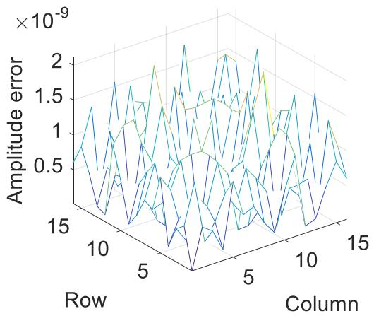
(a) 改进QR算法
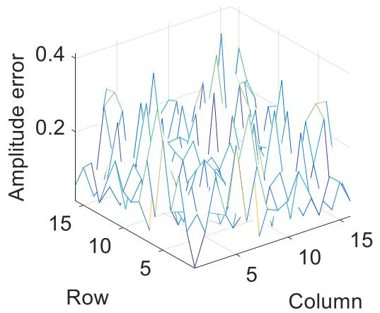
(b) 双边 Jacobi 方法
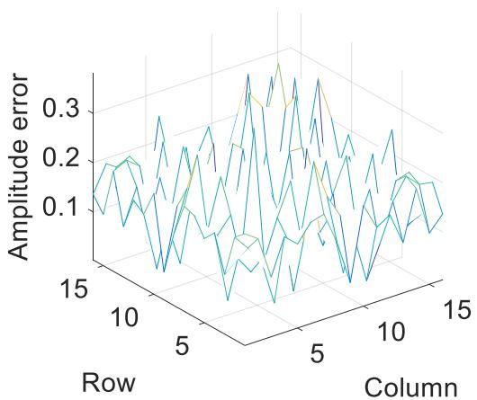
(c) 标准单边 Jacobi 方法
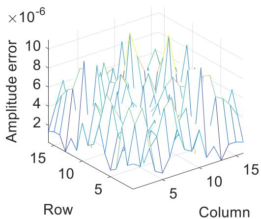
(d) LASOJ新方法
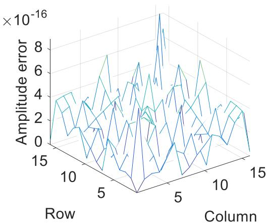
(e) 直接EIG方法
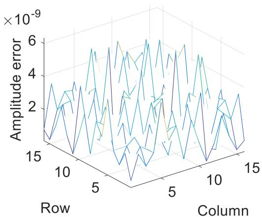
(f) 间接EIG方法
图3.5 基于模拟仿真数据集的六种EVD方法的特征向量正交性
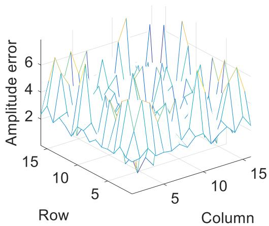
(a) 改进QR算法
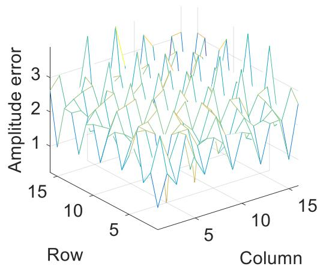
(b) 双边 Jacobi 方法
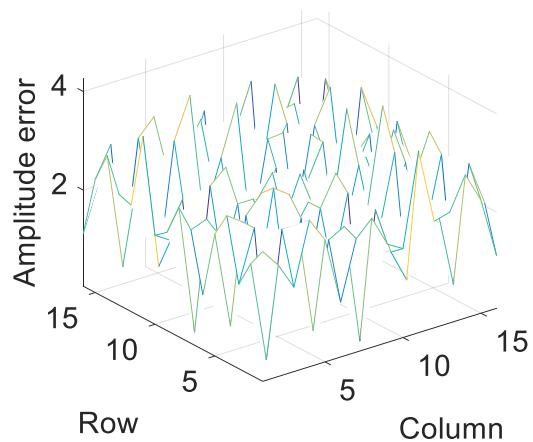
(c) 标准单边 Jacobi 方法
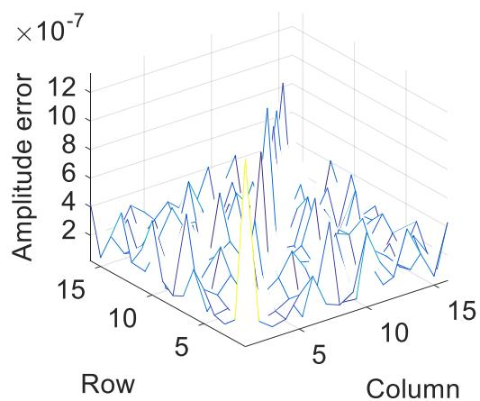
(d) LASOJ 新方法
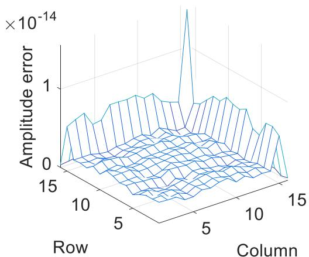
(e) 直接EIG方法
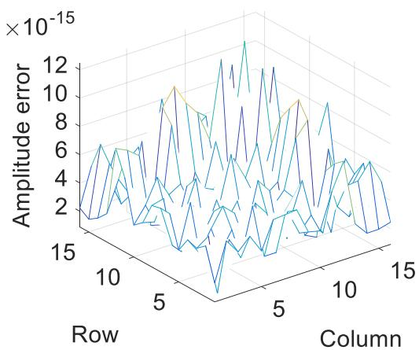
(f) 间接EIG方法
图3.6 基于模拟仿真数据集的六种EVD方法的矩阵重构误差
表3.2中只列出了通过间接EIG方法和LASOJ新方法获得的特征值。由表3.2可知，间接EIG方法得到的部分特征值为负数(表3.2中红色字体部分)，然而LASOJ新方法得到的特征值全部是非负实数(表3.2中蓝色字体部分)。由于理论上，复厄米特矩阵的特征值始终是非负实数。因此通过本节实验可知，即使在双精度浮点运算下，间接EIG
方法也可能会得到错误的计算结果。此外，表3.2中未列出的标准单边Jacobi方法，原因是它与LASOJ新方法计算矩阵特征值的基本算法一样（具体解释见3.4.3节），其得到的特征值也全部是非负实数；而其它三种方法也均没有给出正确的特征值，例如通过直接EIG方法获得的特征值中也存在一些负实数。
表3.2 \(16\times 16\) 复厄米特矩阵的特征值
| No. | 1 | 2 | 3 | 4 |
| 间接EIG方法 | -1.4357667060982e-06-1.3563475086187e-06-1.1178510782877e-06-7.5457625256554e-07 | |||
| No. | 5 | 6 | 7 | 8 |
| 间接EIG方法 | -6.7875195475075e-07-4.9046433923671e-07-2.3494613751204e-07 3.6749890219548e-08 | |||
| No. | 9 | 10 | 11 | 12 |
| 间接EIG方法 | 1.4465095373405e-07 2.1443642329763e-07 3.9762853051420e-07 7.4437741000355e-07 | |||
| No. | 13 | 14 | 15 | 16 |
| 间接EIG方法 | 9.6478544553676e-07 1.2349034294148e-06 1.3436846114993e-06 40.1942820887141 | |||
| No. | 1 | 2 | 3 | 4 |
| LASOJ新方法 | 3.6749891861805e-08 1.4465095461051e-07 2.1443642378130e-07 2.3494613709891e-07 | |||
| No. | 5 | 6 | 7 | 8 |
| LASOJ新方法 | 3.9762853051467e-07 4.9046433954008e-07 6.7875195406363e-07 7.4437741046158e-07 | |||
| No. | 9 | 10 | 11 | 12 |
| LASOJ新方法 | 7.5457625272917e-07 9.6478544628528e-07 1.1178510784523e-06 1.2349034296042e-06 | |||
| No. | 13 | 14 | 15 | 16 |
| LASOJ新方法 | 1.3436846115424e-06 1.3563475095884e-06 1.4357667068060e-06 40.1942820887142 | |||
综合对比以上三个方面，由于改进QR算法、双边Jacobi方法以及EIG方法均不能确保复厄米特矩阵特征值的非负实数性，然而LASOJ新方法在获得正确的特征值同时，矩阵重构误差较小，特征向量正交性较好，因此整体上，在双精度浮点运算下，LASOJ新方法在这六种EVD方法中具有最佳的数值性能。
3.4.2.2 基于实测数据集的数值性能¶
随机选择实测数据集中的一个 \(8 \times 8\) 维的复矩阵，六种EVD方法均采用单精度浮点运算，图3.7显示了六种EVD方法得到的特征向量的正交性，图3.8显示了六种EVD方法的矩阵重构误差。
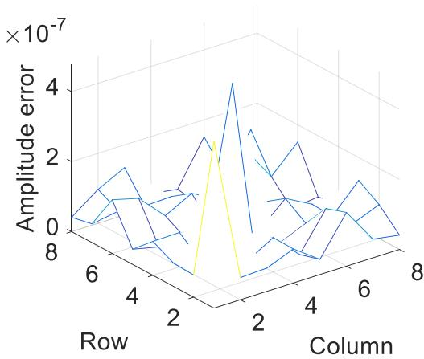
(a) 改进QR算法
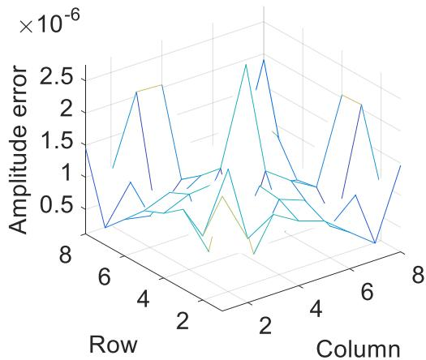
(b)双边Jacobi方法
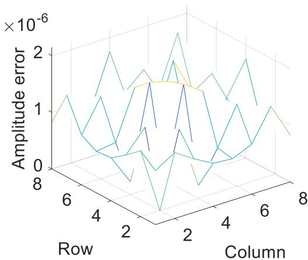
(c) 标准单边 Jacobi 方法
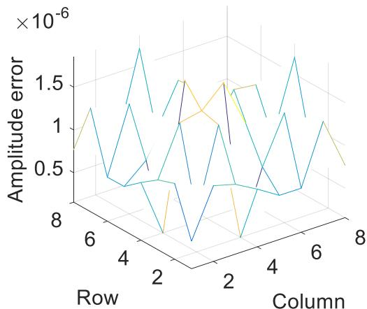
(d) LASOJ新方法
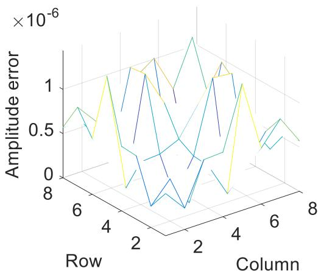
(e) 直接EIG方法
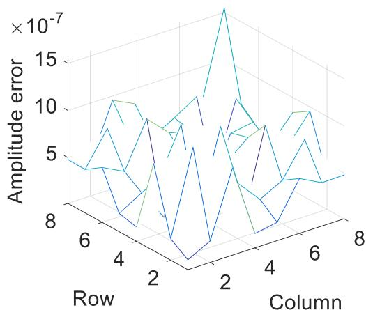
(f) 间接EIG方法
图3.7 基于实测数据的六种EVD方法的特征向量正交性
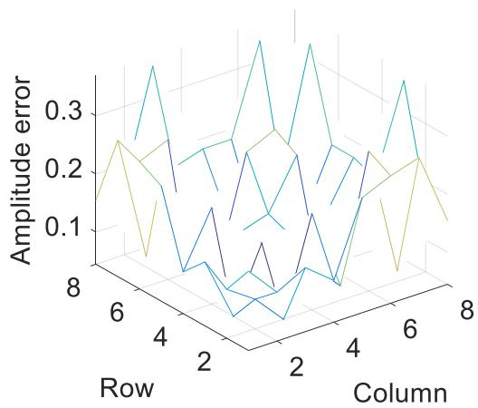
(a) 改进QR算法
(b) 双边Jacobi方法
(c) 标准单边Jacobi方法
(d) LASOJ新方法
(e) 直接EIG方法
(f) 间接EIG方法
图3.8 基于实测数据的六种EVD方法法的矩阵重构误差
对比图3.7和图3.8可知，整体上，这六种EVD方法得到的特征向量的正交性均较好；而改进QR算法的矩阵重构误差最大，与其它几种方法的矩阵重构误差相比数量级相差 \(10^{5}\) 。LASOJ新方法比标准单边Jacobi方法和双边Jacobi方法的矩阵重构误差更小
并且特征向量正交性更好，这与3.4.2.1节的基于双精度运算的实验结果一致，也与3.2.3节的理论证明结果一致。
表3.3列出的六种不同EVD方法获得的特征值，可以明显的看出：LASOJ新方法计算得到的所有特征值都是非负实数(表3.3蓝色字体部分)，然而其他四种EVD方法计算得到的矩阵特征值均存在大量的负数(表3.3红色字体部分)，这与3.4.2.1节的双精度浮点运算结果也是一样的。其中，未列出的标准单边Jacobi方法，其得到的特征值也全部是非负实数。值得注意的是，该实验中改进QR算法得到的特征值全为复数，即改进QR算法得到的特征值可信性最差。
表 3.3 \(8 \times 8\) 复厄米特矩阵的特征值
| No. | 1 | 2 | 3 | 4 |
| 间接EIG方法 | -2.9445579e-07 | -2.1552769e-07 | -4.1243531e-08 | 1.2230016e-07 |
| No. | 5 | 6 | 7 | 8 |
| 间接EIG方法 | 0.99999946 | 0.99999970 | 0.99999988 | 1.0000004 |
| No. | 1 | 2 | 3 | 4 |
| 直接EIG方法 | -1.2870352e-07 | -1.0901664e-07 | -6.2428505e-08 | 8.0626359e-09 |
| No. | 5 | 6 | 7 | 8 |
| 直接EIG方法 | 0.99999946 | 0.99999970 | 0.99999988 | 1.0000001 |
| No. | 1 | 2 | 3 | 4 |
| LASOJ新方法 | 1.4667280e-08 | 4.2690090e-08 | 4.3633069e-08 | 7.3195025e-08 |
| No. | 5 | 6 | 7 | 8 |
| LASOJ新方法 | 1.0000001 | 1.0000006 | 1.0000010 | 1.0000014 |
| No. | 1 | 2 | 3 | 4 |
| 改进QR算法 | -1.996254e-10-4.471823e-09i | -9.593243e-09+1.309453e-09i | -5.769962e-09+1.754868e-08i | -5.211518e-08-1.487356e-09i |
| No. | 5 | 6 | 7 | 8 |
| 改进QR算法 | 1.000000+3.128160e-09i | 0.9999999+2.136929e-08i | 1.000000+1.446910e-08i | 0.99999998+7.616764e-09i |
| No. | 1 | 2 | 3 | 4 |
| 双边Jacobi方法 | -1.5596798e-07 | -5.1989385e-08 | -8.5279801e-09 | 5.3379351e-10 |
| No. | 5 | 6 | 7 | 8 |
| 双边Jacobi方法 | 1.0000006 | 1.0000010 | 1.0000012 | 1.0000012 |
综合对比以上三个方面，同样，由于改进QR算法、双边Jacobi方法以及EIG均不能确保特征值的正确性，然而LASOJ新方法在获得正确的特征值同时，矩阵重构误差较小，特征向量正交性较好，因此整体上，在单精度浮点运算下，LASOJ新方法在这六
种EVD方法中仍然具有最佳的数值性能。
总之，根据以上两个数值性能实验可知，LASOJ新方法获得的特征值分解结果可信度更高。
3.4.3 讨论¶
基于3.4.2节的数值性能实验结果，本节从以下两个问题出发，对这六种不同的EVD实现方法的数值性能进行了详细分析：
1）对于复厄米特矩阵，其特征值只能是非负实数，然而在3.4.2节的两个实验中，为什么除了基于单边Jacobi旋转算法之外的其它EVD方法可能获得错误的特征值（负、复数）计算结果？
对于改进 QR 算法、直接 EIG 方法以及间接 EIG 方法，其特征值均是通过两个矩阵（上三角矩阵和正交矩阵）相乘的得到的，即 \(\mathbf{A}_{s+1} = \mathbf{R}_s \mathbf{Q}_s\) ，这在理论上并不能确保其对角线元素总是非负数，并且因为计算平台的动态范围有限，因此可能获得错误的计算结果。
对于双边 Jacobi 旋转算法，其特征值是三个矩阵相乘的结果，即 \(\mathbf{A}_{i+1} = \mathbf{U}^H \mathbf{A}_i \mathbf{U}\) 。从计算过程来看，其在理论上也并不能确保其对角线元素总是非负数，而且双边 Jacobi 旋转算法中的三个矩阵运算比 QR 算法中的两个矩阵运算需要更大的动态范围。此外，正交矩阵在双边 Jacobi 旋转算法中起着重要的作用，同样由于动态范围有限，实际上无法计算得到真正的正交矩阵。因此，双边 Jacobi 旋转算法也可能获得错误的特征值计算结果。
而对于单边 Jacobi 旋转算法，根据其计算过程，其特征值是由矩阵列向量的 \(l_{2}\) 范数获得，因此在数值上可以确保其特征值始终是非负数，从而提高了特征值的正确性。正因为本章提出的 LASOJ 新方法是基于单边 Jacobi 旋转算法设计的特征值分解的高性能实现方法，因此 LASOJ 新方法的数值性能更好。
2）特征向量的正交性重要吗？
对于该问题，本文从面向应用的角度进行解释，例如在 MUSIC 算法中，特征向量用于计算伪倒谱而估计信源位置，越接近噪声子空间的特征向量将有越助于找到更加精准的信源方向，具体内容将在 3.6 节中讨论。
3.5 硬件实验结果与分析¶
本节将LASOJ高效计算架构（LASOJ method）与数值性能实验中的前三种EVD方法的硬件设计进行了实验对比，分别为：改进QR算法[115]（Improved QR algorithm）、第二章提出的双边Jacobi旋转方法（Two-sided Jacobi's method）、标准单边Jacobi方法（Standard one-sided Jacobi's method）。在Xilinx Vivado 2016.02软件中，使用Verilog 硬件描述语言对这四种EVD方法的硬件设计进行编程，并在Xilinx XC7V690T—FPGA上进行了验证。
为了说明四种EVD设计的硬件资源消耗，分别进行了 \(8 \times 8\) 、 \(12 \times 12\) 和 \(16 \times 16\) 的三个维数不同的复厄米特矩阵硬件实验。实验中，改进QR算法直接操作复厄米特矩阵，而其他三种硬件设计均操作复厄米特阵的变形形式，因此这三种硬件设计均包含矩阵特征值的硬件排序电路。由于基于CORDIC的BLV脉动阵列及其改进形式以定点形式运算，因此没有直接将LASOJ高效计算架构与其进行硬件实验比较。为了公平起见，本章对比的四种硬件设计均以单精度浮点形式（IEEE Std.754-1985）运算，均由Xilinx浮点IP实现；在本节末尾对LASOJ高效计算架构和基于CORDIC的BLV脉动阵列设计进行了对比讨论。
在EVD的计算过程中，扫描次数与不同类型的数据调度序列有一定的关系，在此不做重点讨论，具体可以参考数据调度序列的相关文献，本节实验选择奇偶固定调度序列[127]。实验结果中只显示了一次扫描时间内的的硬件实现时延。表3.4和表3.5分别给出了 \(8\times 8\) 和 \(12\times 12\) 维复厄米特矩阵基于四种高性能实现方法的硬件资源消耗。
对于表3.4和表3.5，分别从以下方面讨论：
1、LUT 的资源占用。分析这四种高性能实现方法的一个共同点是，一些 LUT 用于构建浮点运算的逻辑电路，比如加法、乘法和平方运算等。与 Jacobi 方法相比，改进 QR 算法由于这些逻辑运算较少，因此消耗的 LUT 也较少。相较于双边 Jacobi 方法和标准单边 Jacobi 方法，LASOJ 高效计算架构因避免了计算矩阵特征向量的矩阵乘法，因此其消耗的 LUT 资源最少。
2、DSP48E1 的资源占用。就 DSP48E1 而言，改进 QR 算法是基于 BLV 脉动阵列的流水线完成的，其同时处理的元素个数较多，而其它三种方法均是通过稀疏旋转因子的矢量乘实现的，因此改进 QR 算法消耗的乘法器资源较多。与标准单边 Jacobi 方法相比，由于双边 Jacobi 方法需要三个矩阵完成矩阵乘，而在标准单边 Jacobi 方法中只需要
两个矩阵完成矩阵乘，因此双边 Jacobi 方法消耗的乘法器较多。同样的，与标准单边 Jacobi 方法相比，LASOJ 高效计算架构因得益于避免由旋转矩阵的矩阵乘计算特征向量，固乘法器使用数量明显最少。
3、工作频率。对比表 3.4 和表 3.5 明显看出，随着矩阵维数的增大，LASOJ 高效计算架构仍然可以以较高的工作频率工作。众所周知，硬件实现消耗的资源越少，其工作频率就越高。对比表 3.5 可知，随着矩阵维数的增大，消耗的硬件资源也更多，因此其他三种高性能实现方法的工作频率均有所降低；如果矩阵维数持续增大，这三种方法则必须要消耗更多的硬件资源，随之其工作频率将更低。由于 LASOJ 高效计算架构的设计充分节省了硬件资源，固其工作频率最高。
4、时延。在这四种硬件设计中，改进QR算法的时延最大，主要原因是它是基于BLV脉动阵列的流水架构实现的，并且还要计算矩阵特征向量的矩阵乘法，而其它三种Jacobi方法均是通过稀疏旋转因子的矢量乘实现的。而对于两个Jacobi方法，由于双边Jacobi方法操作三个矩阵，而标准单边Jacobi方法操作两个矩阵，因此标准单边Jacobi方法具有较低的时延。与标准单边Jacobi方法相比，LASOJ高效计算架构因得益于避免由旋转矩阵的矩阵乘计算特征向量，因此LASOJ高效计算架构的时延最小。
对比表3.4和表3.5，随着并行度的提高，LASOJ高效计算架构的时延减小，但代价是消耗更多硬件资源。众所周知，在FPGA设计中，硬件资源消耗和时延之间存在一种折中，因此LASOJ高效计算架构更能满足实际工程需要。
表 3.4 \(8 \times 8\) 复厄米特矩阵的硬件资源消耗
| Name | LUT | BRAM | DSP48E1 | fmax | Cycles |
| Improved QR algorithm | 42k | 36 | 1896 | 250MHz | 9864 |
| Two-sided Jacobi's method (P=8) | 80k | 112 | 1697 | 250MHz | 7866 |
| Standard one-sided Jacobi's method (P=8) | 65k | 48 | 1264 | 250MHz | 6432 |
| LASOJ method (P=2) | 28k | 12 | 288 | 250MHz | 7480 |
| LASOJ method(P=4) | 43k | 14 | 590 | 250MHz | 7196 |
| LASOJ method (P=8) | 65k | 24 | 1210 | 250MHz | 3742 |
表 3.5 \({12} \times {12}\) 复厄米特矩阵的硬件资源消耗
| Name | LUT | BRAM | DSP48E1 | fmax | Cycles |
| Improved QR algorithm | 96k | 45 | 3032 | 200MHz | 22600 |
| Two-sided Jacobi's method (P=12) | 182k | 140 | 2458 | 200MHz | 21320 |
| Standard one-sided Jacobi's method (P=12) | 146k | 60 | 2196 | 200MHz | 18242 |
| LASOJ method (P=2) | 62k | 16 | 623 | 250MHz | 19200 |
| LASOJ method (P=4) | 97k | 18 | 1230 | 250MHz | 18806 |
| LASOJ method (P=12) | 138k | 48 | 1980 | 250MHz | 10986 |
同样，也可以从一个FPGA芯片的角度分析表3.5的实验结果。已知一个XilinxXC7V690T—FPGA芯片上有大约460k个LUT和3600个乘法器。根据表3.5所示，如果简单而直接地遵循改进QR算法的思想，一个XilinxXC7V690T—FPGA芯片则不可能实现维数更大的矩阵EVD。然而，LASOJ高效计算架构由于其灵活的并行性，仍然可以在一个FPGA芯片上继续处理维数较大的矩阵。
受限于硬件资源有限，表3.6仅列出了对 \(16\times 16\) 维复厄米特矩阵，标准单边Jacobi方法及LASOJ高效计算架构的硬件资源消耗。
表 3.6 \(16 \times 16\) 复厄米特矩阵的硬件资源消耗
| Name | LUT | BRAM | DSP48E1 | fmax | Cycles |
| Standard one-sided Jacobi's method(P=16) | 262k | 64 | 3296 | 150MHz | 25840 |
| LASOJ method (P=2) | 104k | 22 | 1200 | 200MHz | 27360 |
| LASOJ method (P=4) | 168k | 24 | 2196 | 200MHz | 26800 |
| LASOJ method (P=16) | 232k | 58 | 2898 | 200MHz | 16270 |
由表3.6可知，对于一个 \(16\times 16\) 维复厄米特矩阵，当 \(P = 16\) 时并行度等于8（ \(P\) 的解释见2.3.2节），即一个时钟周期读取全部矩阵数据的情况下，LASOJ高效计算架构仍然能够以较少的硬件资源和较小的时延完成矩阵特征值分解。LASOJ高效计算架构和标准单边Jacobi方法中的常见操作是矢量点积，矢量点积主要用于计算Jacobi因子。理想情况下，减少矢量点积计算过程中每个级别的时延，系统时延将总体上减少。然而，这是以宝贵的硬件资源为代价的，并且降低了FPGA的工作频率。总之，对比表3.4、表3.5以及表3.6可知，随着矩阵维数的增大，LASOJ高效计算架构的工作频率仍然较高，并且时延较低。
接下来，对LASOJ高效计算架构和基于CORDIC的BLV脉动阵列结构的硬件架构进行了对比分析：
当在32位输入和输出的情况下，如果CORDIC \(\mathbf{IP}^{[200]}\) 处于旋转模式，它将消耗4291个LUT；如果CORDIC \(\mathbf{IP}^{[200]}\) 处于矢量模式，它将消耗3391个LUT。文献[126]中的表IV列出了 \(8\times 8\) 维复厄米特矩阵三种EVD硬件设计的资源消耗，根据其结论可知，若复厄米特矩阵的维数大于 \(8\times 8\) 时，一个XilinxXC7V690T—FPGA芯片上将没有足够的LUT来构建对角和非对角处理器。这也正是先前文献的实验中，处理的复矩阵最大维数是 \(8\times 8\) 的原因。
对于 BLV 脉动阵列结构，现代 FPGA 芯片配备了许多乘法器，但 BLV 脉动阵列及其改进形式并未充分利用这些乘法器，而 LASOJ 高效计算架构充分利用了这些乘法器。
由硬件实验获知，对于 \(16 \times 16\) 维复厄米特矩阵，LASOJ 高效计算架构使用 13363 个 LUT 和 107 个乘法器来计算一个列向量的 \(l_{2}\) 范数；使用 3469 个 LUT 以及 24 个乘法器来处理 Jacobi 因子计算过程中的三角函数运算。因此，LASOJ 高效计算架构可以充分利用乘法器以完成更高维数复厄米特矩阵的 EVD。
最后，需要指出的是，从FPGA设计的角度来看，在工程中也可以采用基于LUT的CORDIC计算Jacobi旋转因子，而采用乘法器执行矩阵乘法的方案。然而，与LASOJ高效计算架构的设计相比，上述定点运算方案的动态范围较低。由于LASOJ高效计算架构的设计是面向数值性能的硬件体系结构的，因此本章建议采用动态范围更高的基于FPGA的单精度浮点运算的计算方案。
3.6 基于 MUSIC 算法的应用结果与分析¶
本节以 MUSIC 算法为背景，对 3.5 节中对比的四种 EVD 硬件设计以及两种 EIG 方法进行了应用与分析。MUSIC 算法的流程图如图 3.9 所示。
根据图3.9可知，经典MUSIC算法主要包含两部分：粗测量和精确测量。粗测量包括step0-step2，精确测量包括step3- tep6。其计算过程整体描述如下：
1、Step0根据接收到的M个信号计算复协方差矩阵；
2、Step1对复协方差矩阵进行特征值分解，并依据特征值分布，构造噪声子空间；
3、Step2根据setp1找到的噪声子空间计算伪倒谱；
4、Step3搜索伪倒谱的局部峰值，找到插值点；
5、Step4根据局部峰值及其周围的副峰，计算外积，并构造三个向量矩阵；
6、如果矩阵 \(\mathbf{T}\) 的行列式大于预设阈值，则通过 step5 矩阵求逆来求解权重；
7、Step6计算信源的估计角度（方位角和仰角）。
对于本章研究的主要内容，将3.5节中描述的四种EVD硬件设计以及两种EIG方法分别应用于step1的计算，而后通过step2计算的伪倒谱以及step6精确测量计算的信源位置，采用单精度浮点运算，来分别说明六种EVD方法的数值性能。其中这四种EVD硬件设计基于3.5节的硬件实验平台，处理实测数据的复厄米特矩阵维数为 \(8 \times 8\) 。
图3.9 MUSIC算法流程图
表3.7给出了改进QR算法以及LASOJ高效计算架构的信源估计位置。没有提供其它两种硬件设计和EIG方法的信源估计结果，原因是图3.10显示其获得的伪倒谱均不可信，即其获得的特征向量不可靠。根据表3.7可知，通过改进QR算法和LASOJ高效计算架构均可以成功地估计预设的信源位置，但是LASOJ高效计算架构的得到信源位置更准确。
表 3.7 四个预设信源的估计位置
| Name | No.1 | No.2 | No.3 | No.4 |
| Preset source Location | (0 ;0.5 9) | (0.5 ;0 9) | (-3 ;4.5 9) | (3.5 ;-4.5 9) |
| Improved QR algorithm | (0 ;0.5 9) | (0.5 ;0 9) | (-2.9 ;4.4 9) | (2.8 ;-4 9) |
| LASOJ 新方法 | (0 ;0.5 9) | (0.5 ;0 9) | (-2.98 ;4.51 9) | (3.4 ;-4.4 9) |
图3.10显示了这六种EVD方法获得的伪倒谱。图3.10表明，只有改进QR算法和LASOJ高效计算架构可以得到正确的计算结果，即从图3.10（b）、图3.10（c）、图3.10（e）以及图3.10（f）中均无法找到信源。可知，LASOJ高效计算架构获得了可信的特征向量，通过其得到的噪声子空间与信号子空间正交性最好。
(a) 改进OR算法
(b) 双边Jacobi方法
(c) 标准单边Jacobi方法
(d) LASOJ高效计算架构
(e) 直接EIG方法
(f) 间接EIG方法
图3.10 六种EVD方法的伪倒谱
对于改进 QR 算法和 LASOJ 高效计算架构获得伪倒谱，图 3.11 显示了各自的一些峰值。可以看出，通过改进 QR 算法和 LASOJ 高效计算架构获得的两个伪倒谱之间存
在一些差异，即LASOJ高效计算架构获得的伪倒谱的幅值明显高于改进QR算法，这更加意味着通过LASOJ高效计算架构得到的噪声子空间与信号子空间更加正交。另一方面，与改进QR算法相比，LASOJ高效计算架构获得的伪倒谱的底部更加平坦，即LASOJ高效计算架构获得的伪倒谱中的假峰数量更少，这也表明LASOJ高效计算架构得到的数值性更精确。
(a) 改进QR算法
(b) LASOJ高效计算架构
图3.11 信源估计位置
将图3.11所示的二维伪倒谱归一化处理，并在图3.12中绘制部分结果。同样，通过LASOJ高效计算架构得到的归一化伪倒谱中的假峰的幅值低于改进QR算法，因此在相同的阵列流形和复协方差矩阵下，LASOJ高效计算架构比改进QR算法具有更好的数值性能。总之，对于MUSIC算法的应用，LASOJ高效计算架构在六种不同的EVD硬件设计及方法中具有最佳的数值性能。
(a) 归一化的伪倒谱
(b) 前 500 个计算结果
图3.12 归一化的伪倒谱
最后，基于实测数据给出了基于理想天线阵的root-MUSIC算法[135]和Real-Valued MUSIC算法[137]的数值性能，这两种改进MUSIC算法的伪倒谱如图3.13所示。由图3.13中明显的可以看到，这两种改进MUSIC算法无法正确地从的计算结果中找到峰值，主要原因是这两种算法均没有考虑实际的阵列天线，而是通过酉变换将复厄米特矩阵变换为实矩阵进行处理的。而本文复厄米特矩阵间接处理方法，只是将其形状变形为实矩阵。因此，从实际应用的角度来看，本文建议在工程中应采用复厄米特矩阵进行处理。
(a) root-Music算法
(b) Real-Valued Music算法
图3.13 两种MUSIC算法的伪倒谱
3.7 结论¶
本章主要就高性能实现矩阵特征值分解的数值精度，提出了一种基于FPGA的前视性简化单边Jacobi（LASOJ）新方法的高效计算架构，并证明了LASOJ新方法在理论上比标准单边Jacobi旋转方法的特征向量正交性更佳。此外，对当前多种EVD方法的数值性能及其硬件设计进行了深入的讨论和分析。实验结果表明，LASOJ新方法具有最佳的数值性能；并且LASOJ高效计算架构的硬件资源消耗和时延均较小。最后将当前多种特征值分解方法应用于MUSIC算法中，实验结果仍然表明，LASOJ高效计算架构的数值性能更好。
第四章 基于FPGA的快速并行计算三角矩阵求逆的对角式新方法¶
基于矩阵分解的矩阵求逆方法由于其鲁棒性的优势在工程中经常被采用，而三角矩阵求逆是这些方法的关键步骤之一。本章对基于伴随矩阵定义的三角矩阵求逆计算过程进行了详细的挖掘，推导并总结了三角矩阵及其逆矩阵的更多强大特征，提出了一种基于FPGA的快速并行计算三角矩阵求逆的对角式新方法，其适用于不同的矩阵三角分解算法（QR、LDL、Cholesky和LU）。同时，针对较高维三角矩阵设计了递归对角式求逆新方法。与行/列式求逆方法相比，对角式求逆新方法其硬件实现的灵活性和并行性较高。在Xilinx XCV690T—FPGA上，将对角式求逆新方法与当前多种求逆方法进行对比，实验结果表明，对角式求逆新方法硬件实现的时延小，数值精度更高。最后，将其应用于自适应数字波束合成（Adaptive Digital Beam Forming，ADBF）的实现。
4.1 问题描述¶
众所周知，在实际工程应用中，矩阵求逆的运算量较大。因此，研究者和工程人员常常试图避开计算矩阵求逆，并且在其领域中去寻找一些无需使用矩阵求逆的解决问题的新算法，或者通过降低矩阵维数来减少矩阵求逆的运算量[201, 202]。但是，在一些情况下，工程师仍然要不可避免的面对实时的较高维矩阵求逆。例如，工程人员必须完成一些基于硬件平台的矩阵求逆算法，比如自适应数字波束合成[153]、模型预测控制[203]等。
由于基于矩阵分解求解逆矩阵具有更好的数值稳定性，并且运算量相对较低，因此在工程中经常被采用。对这些矩阵分解求逆方法进行分析，发现其共同点是通过矩阵分解得到三角矩阵，再对三角矩阵求逆，从而得到最终的逆矩阵。而对于三角矩阵求逆，目前通常使用回归迭代法、方程求解法或分块求逆法，然而这些三角矩阵求逆方法计算过程中的每一步计算结果必须依赖上一步求逆的结果，导致其硬件实现的并行性低、工作频率低、硬件资源消耗较多。特别是，随着科学技术的飞速发展，相关领域对矩阵求逆运算的实时性、算法复杂度、数值稳定性、能效性等也提出了更高的要求，因此如何进行高性能矩阵求逆是目前要解决的一个重要问题。
基于上述，本章主要讨论三角矩阵求逆的高性能实现。本章详细分析了通过伴随矩阵求逆矩阵的计算过程，发现原始矩阵及其逆矩阵的更多特征可以用于加快求逆计算。因此，本章提出了一种基于FPGA的并行快速计算三角矩阵求逆的对角式新方法，主要贡献描述如下：
1）提出了一种对角式求逆新方法，其在计算过程中是按平行于对角线的方向进行的，与主对角线平行的向量之间彼此独立，并且其计算得到的逆矩阵元素可以重复利用以减少大量的冗余计算。因此对角式求逆新方法的硬件实现时延小、并行性以及灵活性较高。
2）对角式求逆新方法不依赖矩阵三角分解方法，可以适用于不同的矩阵三角分解方法（QR、LDL、Cholesky和LU）。
3）对于较高维矩阵，基于块矩阵提出了一种递归对角式求逆新方法。当基于硬件平台使用本章所提方法已编程实现大小为 \(N \times N\) 的矩阵求逆时，如果矩阵的大小改变为 \((N + 1) \times (N + 1)\) ，则不需要完全修改现有程序主体，在基于矩阵分块定义的基础上，通过增加额外计算模块即可完成新矩阵的求逆运算。
最后，在Xilinx XCV690T—FPGA上对比了多种高性能求逆方法，并且将其应用于自适应数字波束合成ADBF问题。
4.2 相关理论¶
本节简要回顾了基于矩阵分解的传统三角矩阵求逆方法。
对于一个非奇异矩阵 \(\mathbf{A} \in \mathbb{C}^{N \times N}\) , 可以进行 LU 分解或 QR 分解:
其中， \(\mathbf{U}\) 和 \(\mathbf{R}\) 是上三角矩阵； \(\mathbf{L}\) 和 \(\mathbf{Q}\) 表示下三角矩阵和正交矩阵。
当 \(\mathbf{A}\) 时一个非奇异厄米特矩阵时，可以按如下形式进行 Cholesky 分解或 LDL 分解：
其中， \(\mathbf{G}\) 和 \(\mathbf{P}\) 是上三角矩阵， \(\mathbf{D}\) 是对角矩阵。
观察式（4.1）和（4.2），若要求得A的逆，则需要求得三角矩阵的逆，最后再进行矩阵乘来得到原始矩阵的逆矩阵。
目前，通常使用传统的回归迭带法来解决三角矩阵求逆问题。对于一个上三角矩阵 \(\mathbf{B}\) ，其求逆结果 \(\mathbf{T}\) 计算如下：
其中， \(i, j (1 \leq i, j \leq N)\) 在矩阵中是元素坐标。显然，式(4.3)的硬件实现效率非常低。主要原因是：当前计算步骤所产生的中间结果与前一步骤的计算结果具有紧密联系，无法充分利用现阶段硬件平台的并行性，从而导致时延较大，实时性较低。观察式(4.3)，若上三角矩阵B的主对角元素为1时，其计算过程将会更简单。
然而，对于式（4.1）和（4.2）的矩阵分解算法，只有LDL分解得到的三角矩阵的主对角元素等于1。假定W是一个由非LDL矩阵分解算法获得的三角矩阵，此时W可以变换为一个主对角元素等于1的三角矩阵，并且变换矩阵V是由W的主对角元素产生的一个对角矩阵。因此，W的逆可以通过一个主对角元素为1的三角矩阵的逆乘以一个对角矩阵的逆得到。该过程可以被表达为：
其中， \(\mathbf{V} = \text{diag}(\mathbf{W})\) ， \(\text{diag}(\bullet)\) 表示对角矩阵； \(\mathbf{Z} = [\mathbf{Z}_1, \mathbf{Z}_2, \dots, \mathbf{Z}_N]^T\) ， \([\bullet]^T\) 表示转置， \(\mathbf{Z}_i\) 是矩阵 \(\mathbf{Z}\) 的第 \(i\) 个行向量。因此，由式(4.4)可知，若获得了 \(\mathbf{Z}^{-1}\) ，则 \(\mathbf{W}_i^{-1}\) 可通过 \(\mathbf{Z}_i^{-1} / v_{i,i}\) 很容易的在硬件上进行处理和编程实现。
因此，基于上述分析，本章研究的三角矩阵的主对角元素均为1，原因总结如下：
1、主对角元素不参与中间计算过程，减少计算误差；
2、当矩阵维数较高时，该操作有利于节省内存资源；
3、可以降低操作数据和运算量。
需要说明的是，对于本章所提出的对角式求逆新方法，虽然是在上三角矩阵的基础上提出的。但是由于上三角矩阵的求逆计算过程和下三角矩阵的求逆计算过程类似，因此，在下述中，本章只重点讨论上三角矩阵的求逆。
4.3 三角矩阵的对角式求逆新方法¶
本节从上三角矩阵的伴随矩阵及其求逆计算过程出发，对提出的三角矩阵对角式求
逆新方法进行了详细的描述和分析；针对较高维矩阵设计了递归对角式求逆新方法；最后对多种三角矩阵求逆方法进行了比较和分析。
4.3.1 对角式求逆新方法¶
对于一个上三角矩阵 \(\mathbf{B}\) ，可以被表达为：
其中， \(b_{i,j}(1 \leq i,j \leq N)\) 表示矩阵 \(\mathbf{B}\) 的非零元素。根据矩阵求逆的定义[204]：
其中， \(\operatorname{det}(\cdot)\) 是矩阵的行列式， \(\operatorname{adj}(\cdot)\) 是伴随矩阵， \(\operatorname{cof}(\cdot)\) 是辅因子矩阵， \(B_{i,j}\) 是代数余子式；当 \(i < j\) 时， \(B_{i,j} = 0\) 。因此，式（4.6）可以被写为：
根据式(4.7)可知，上三角矩阵的逆矩阵与上三角矩阵具有相同的结构。由于式（4.5）的矩阵行列式等于1，那么可以将式（4.7）写为：
基于式（4.5）和式（4.8）的矩阵形式，文献[151]的作者提出了一种避免计算三角矩阵中间结果的求逆方法，但是其必须建立Cholesky分解的基础上，对于基于其它矩阵分解的矩阵求逆方法则不适用，局限性太高。
事实上，本章所提对角式求逆新方法发现下述的特征可以被用来计算上三角矩阵求逆。对于 \(B_{i+1,i}\) ，即 \(\mathbf{B}^{-1}\) 的次对角元素，可以根据伴随矩阵的定义来计算：
根据式（4.9）可以观察到， \(B_{i + 1,i}\) 是 \(b_{i,(i + 1)}\) 的取反。
因此，由于 \(\mathbf{B}^{-1}\) 的主对角元素等与 1，并且次对角元素 \(B_{i+1,i}\) 是 \(b_{i,(i+1)}\) 的取反，最终只需要计算 \(\mathbf{B}^{-1}\) 的非零元素的个数是 \(0.5(N^{2} - 3N + 2)\) 。
本章通过充分挖掘伴随矩阵的定义及其计算过程[204]，推导出对角式求逆新方法求解逆矩阵 \(\mathbf{B}^{-1}\) 的非零元素可以被表达为：
对式（4.10），其中的强大特征可总结为：
1、逆矩阵 \(\mathbf{B}^{-1}\) 的每个非零元素都可以通过矩阵 \(\mathbf{B}\) 的不同元素分别计算, 这意味着,对角式求逆新方法理论上可以在一个时钟周期内计算逆矩阵的所有非零元素;
2、逆矩阵 \(\mathbf{B}^{-1}\) 的非零元素处于平行于与主对角线方向的同一向量时，这些非零元素的计算公式相同；
3、逆矩阵 \(\mathbf{B}^{-1}\) 的非零行元素的计算公式整体结构相同；
4、逆矩阵 \(\mathbf{B}^{-1}\) 沿着平行于主对角线方向计算的元素可以重复使用，即可以删除逆矩阵 \(\mathbf{B}^{-1}\) 的非零元素计算过程中的冗余计算过程。
基于以上这些特征可知，对角式求逆新方法具有较高的并行性、灵活性和扩展性；结合FPGA的特点，从而快速并行完成上三角矩阵的逆矩阵计算。
为了更加清晰的介绍本章所提的对角式求逆新方法，分别使用维数是 \(3 \times 3\) 、 \(4 \times 4\) 和 \(5 \times 5\) 的三个矩阵来展开讨论，需要注意的是，其均是通过伴随矩阵的求逆定义计算并推导出的。从这三个矩阵的逆矩阵中非零元素的计算表达式出发，只是为了更加方便读者清楚其中的计算过程和规律。
当 \(N = 3\) 时，逆矩阵 \(\mathbf{B}^{-1}\) 的非零元素的计算：
从式（4.11）可知，一个 \(3 \times 3\) 的上三角矩阵求逆只需要一次乘法和一次减法运算即可完成。
当 \(N = 4\) 时，逆矩阵 \(\mathbf{B}^{-1}\) 的非零元素的计算：
当 \(N = 5\) 时，逆矩阵 \(\mathbf{B}^{-1}\) 的非零元素的计算：
对于（4.12）和（4.13），可明显的观察到上三角矩阵求逆新方法计算过程中的两个特征：
(1) \(B_{i + m, i}\left(1 < i < N, 1 < m < N - i\right)\) 均通过矩阵 \(\mathbf{B}\) 的元素计算得到, 并且计算式结构相同.
同：
其一，当 \(B_{i,j}\) 的脚标 \(\pmb{i}\) 和 \(j\) 的差相等时， \(B_{i,j}\) 的计算式相同。对此，在硬件实现时，可以使用一个运算单元，通过资源复用的方式来完成所有平行于主对角线元素的计算；或者，使用多个运算单元，资源不复用的方式来完成所有平行于主对角线元素的计算。
其二， \(B_{i,j}\) 的脚标 \(j\) 相等时， \(B_{i,j}\) 的计算式结构相同，这是本章对角式求逆新方法的精髓之一。为了更加清晰的突出这个特征，忽略矩阵维数，将逆矩阵 \(\mathbf{B}^{-1}\) 的第一行非零元素整理如下：
将逆矩阵 \(\mathbf{B}^{-1}\) 的第二行非零元素整理如下：
按照第一行和第二行的规律，可推导出逆矩阵 \(\mathbf{B}^{-1}\) 的第三行的非零元素表达式：
式（4.16）使用箭头和红色元素脚标显示了逆矩阵 \(\mathbf{B}^{-1}\) 同一行元素计算式的变化过程，其均是通过矩阵 \(\mathbf{B}\) 不同元素的脚标以及所计算的 \(B_{i,j}\) 的脚标扩展得到，逆矩阵 \(\mathbf{B}^{-1}\) 的其他
行的元素也可以按此结构和规律依次计算。要说明的是，此处只是为了展示逆矩阵 \(\mathbf{B}^{-1}\) 的同一行元素的计算式结构规律，具体见式（4.10）。
2) 元素 \(B_{i,j}\) 可以重复使用。为了说明这一特性，回顾式（4.13），可以发现式（4.13b）和（4.13c）再次出现在式（4.13d）和（4.13e）中；同样，式（4.13e）也出现在式（4.13f）中。这又是本章对角式求逆新方法的精髓之一，可以在计算上三角矩阵求逆过程中删除冗余计算过程。
至此，本节充分展示了所挖掘出的伴随矩阵求逆的强大特征。根据式（4.10）可知，对角式求逆新方法不受矩阵分解算法限制，适用于任意矩阵分解求逆算法（QR、LDL、Cholesky和LU）。式（4.10）看似复杂，其实具有共同的表达结构和强大的规律性，只需要在相应的计算式结构中嵌入所需元素的脚标即可。因此，基于上述的这些特征可以基于硬件平台并行快速的完成上三角矩阵求逆。
4.3.2 递归对角式求逆新方法¶
在上一节中详细分析了对角式求逆计算过程的强大特征，若上三角矩阵的维数较低时，可以直接基于这些特征方便、快速的进行上三角矩阵求逆。但是，当需要计算较高维上三角矩阵的逆矩阵时，即一些工程需要对 \((N + k) \times (N + k)\) 维的矩阵求逆， \(k\) 是一个正整数。针对该情况，本节将对角式求逆新方法与具有上述特征的块矩阵求逆的方法[205]相结合，提出了递归对角式求逆新方法。
假设矩阵 \(\mathbf{B}\) 的维数是 \(N\) ，矩阵 \(\mathbf{B}\) 分块表示为：
其中，子矩阵 \(\mathbf{X}\) 的维数是 \((N - 1)\times (N - 1)\) ， \(\mathbf{Y} \in \mathbb{C}^{(N - 1)\times 1}\) 是一个列向量， \(\mathbf{O} \in \mathbb{C}^{1\times (N - 1)}\) 是一个零行向量。因此，矩阵 \(\mathbf{B}\) 的求逆可以被表示为：
由式（4.18）可知，若已计算出 \(\mathbf{X}^{-1}\) ，则下一步仅仅是一个矩阵乘以一个向量，这意味着其硬件实现，理论上也可以在一个时钟周期内完成计算。
因此，对于较高维矩阵，递归对角式求逆新方法主要分为以下三步：
1、首先将矩阵按式（4.17）进行分块处理；
2、其次使用 4.3.1 节提出的特征，计算较低维上三角矩阵的逆矩阵 \(\mathbf{X}^{-1}\) ；
3、最后使用式（4.18）处理剩余矩阵维数的求逆计算过程。
这里以 \(\mathbf{B}_{6 \times 6}\) 为例来说明递归对角式求逆新算法的计算过程: 首先 \(\mathbf{B}_{4 \times 4}^{-1}\) 通过式 (4.10) 计算, 然后使用两次式 (4.18) 分别计算得到 \(\mathbf{B}_{5 \times 5}^{-1}\) 和 \(\mathbf{B}_{6 \times 6}^{-1}\) 。
4.3.3 不同三角矩阵求逆方法的比较¶
对当前的上三角矩阵求逆方法进行了总结，整体上分为行式、列式两类方法。本节将对角式求逆新方法与这两类方法进行了比较，如图4.1所示。其中，蓝色数字是操作步数和步数顺序，箭头方向表示计算元素的先后顺序以及需要计算的元素个数，以 \(6 \times 6\) 维矩阵为说明。
(a) 行式方法
(b) 列式方法
(c) 对角式求逆新方法
图4.1 \(6\times 6\) 上三角矩阵三类求逆方法示意图
图4.1（a）是行式求逆方法，从矩阵的最底部向上逐行处理，对于一个 \(6 \times 6\) 上三角矩阵，需要计算5步以及15个非零元素 \(b_{i,j}\) 。行式求逆方法通常采用基于QR或Cholesky分解的求逆算法，这些方法因为需要保存中间计算结果而需要占用较多的内存资源，并且在硬件实现中以脉动阵列形式执行，并行性和灵活性较低。
图4.1（b）是列式求逆方法，从矩阵的最左部向右逐列处理，对于一个 \(6 \times 6\) 上三角矩阵，也需要计算5步以及15个非零元素 \(b_{i,j}\) 。列式求逆方法也面临着与行式求逆方法同样的问题，区别仅在于计算的方向不同。
图4.1(c)是本章提出的对角式求逆新方法，按照平行于对角线的方向计算，对于一个 \(6 \times 6\) 上三角矩阵，假若采用递归式计算，则需要计算4步以及11个非零元素 \(b_{i,j}\) 。对于对角式求逆新方法，也可以在图4.1（c）中所示的第2、3步中借用前一步或前两步运算的特征结果以避免冗余计算过程，这将会使得其硬件实现的运算次数更少，硬件资源消耗更低，但是并行度也会随之降低。
对比图4.1（a）和4.1（b）可知，对角式求逆新方法和行/列式方法的主要不同之处是：
1、计算角度不同。对角式求逆新方法是按对角式计算，行/列式是按行/列方向逐步计算。
2、对角式求逆新方法计算的非零元素个数在这三类方法中最少, 计算步骤也较少,并且对角式求逆新方法的并行度和灵活性较高, 这是行/列式方式所不具有的。
3、行、列式在迭代计算过程中具有严格的数据依赖性，并且由于硬件平台的动态范围有限，因此其积累的计算误差较大；而对角式求逆新方法平行于对角线方向的元素彼此之间可以独立计算，因此计算误差较小。
4、如果对角式求逆新方法以完全去冗余计算的方式实现，那么对角式求逆新方法所需乘法运算次数是行/列式所需乘法运算次数的 \(1 / 2\) 。
5、随着矩阵维数的增大，对于硬件实现来说，受限于有限的硬件资源、系统的实时性等，对于具有迭代步骤严格依赖的行/列方式，编程工程人员将难以完成较高维矩阵求逆。然而，对角式求逆新方法因具有较高的并行度和灵活性，仍然可以处理较高维矩阵求逆，并且便于硬件工程师实现。
4.4 关键硬件架构与实验¶
在本节中，首先给出了上三角矩阵对角式求逆新方法硬件实现的顶层描述，主要包括伪代码和主要硬件组成部分；其次，在Xilinx XCV690T—FPGA上实现了多种三角矩阵高性能求逆方法，并对实验结果进行分析与讨论。
4.4.1 顶层描述¶
首先要说明的是，虽然图4.2展示了上三角矩阵递归对角式求逆新方法的伪代码，但从4.3.3节可知，递归对角式求逆新方法包括了本章提出的核心部分对角式求逆新方法。根据图4.2所示，假设矩阵 \(\mathbf{B}\) 的维数是 \(N\) ，此处将矩阵 \(\mathbf{B}\) 进行分块处理，执行了两个for循环：
第一个 for 循环进行 \(M(M < N)\) 维上三角矩阵的求逆，及对应 4.3.1 节的对角式求逆新方法，其中 \(B_{i + k,i}\) 是逆矩阵 \(\mathbf{B}^{-1}\) 的元素；当矩阵维数较低时，只需要执行第一个 for 循环即可。
第二个 for 循环采用递归部分来实现上三角矩阵 \(\mathbf{B}\) 的剩余维数的求逆，即对应 4.3.2 节描述的第二步。
图4.2 递归对角式求逆新方法的伪代码
图4.3展示了在一个Xilinx XCV690T—FPGA上对角式求逆新方法的主要硬件组成部分，以及不同模块之间的一些关键信号，其中双箭头表示数据交互，单箭头表示数据计算结果，实肩头表示时钟、使能类信号。由图4.3所示，对角式求逆新方法的硬件实现主要包括四部分：
1、双端口 RAM0 模块用于缓存待处理的数据，输入数据位宽为 64bits，输出位宽为 2048bits，该模块不仅完成数据缓存，而且还完成 1-to-32 的串并转换的功能；
2、Computing 模块用于实现由复杂乘法和加法运算组成的上三角矩阵对角式求逆运算，每个时钟周期完成 32 个数的处理；
3、双端口 RAM1 模块用于缓存计算结果并将结果传输到其他硬件部分；
4、而地址、有限状态机（FSM）模块为不同的计算过程提供相应的状态，并控制整个电路系统。
需要特别考虑的是在不同的计算步骤中不同元素的地址读取。然而，这些变化的地址可以在相应的计算步骤前提前计算，并且使用双端口RAM很容易实现，这在工程应用中是很有实现价值的。
图4.3 对角式求逆新方法的主要硬件组成部分
4.4.2 实验结果与分析¶
本章选择三种具有代表性的三角矩阵求逆方法与对角式求逆新方法进行对比，分别为回归迭代法、 \(\mathrm{SPMI}^{[148]}\) 方法以及文献[153]提出的方法。其中，回归迭代法是多数三角矩阵高性能方法中均需要用到的方法； \(\mathrm{SPMI}^{[148]}\) 方法和文献[153]提出的方法均是基于FPGA实现的不同的块处理高性能方法。
为了公平起见，所对比的三种求逆方法均采用单精度浮点运算（IEEE Std.754-1985），基于Xilinx XCV690T—FPGA实现，测试数据由MATLAB生成。此外，关于实验硬件印制板的描述可以参考文献[153]。实验分为两部分来分别展示对角式求逆新方法的优势：第一个实验讨论求逆方法的硬件资源消耗；第二个实验讨论求逆方法的数值性能。4.4.2.1 硬件资源消耗
第一个实验是基于 \(8 \times 8\) 的较低维矩阵，对角式求逆新方法没有采用递归方式，表4.1展示了四种求逆方法的硬件资源消耗结果。
表 4.1 \(8 \times 8\) 复厄米特矩阵的不同求逆方法的硬件资源消耗
| 资源 | 回归迭代法 | SPMI | [153] | 对角式求逆新方法 |
| LUT | 29130 | 16856 | 15867 | 15415 |
| FF | 33380 | 26276 | 21764 | 18048 |
| BRAM | 14 | 15 | 13 | 10 |
| DSP48E1 | 184 | 160 | 132 | 104 |
| Clock cycle | 7701 | 6547 | 5094 | 3621 |
| fmax, (MHz) | 250 | 250 | 250 | 300 |
根据表4.1所示，当矩阵维数是 \(8 \times 8\) 时，对角式求逆新方法消耗的硬件资源最少，工作频率最高，时延最小。主要原因是，对角式求逆新方法在计算 \(6 \times 6\) 维以下的逆矩阵元素时，进行了去冗余从操作，以减少硬件资源的消耗。并且由于回归迭代法、SPMI[148]方法以及文献[153]提出的方法均是行式或列式求逆方式，其计算步骤和计算的非零元素个数均比对角式求逆新方法多，因此相应的硬件实现中所消耗硬件资源也较多。当硬件资源消耗较多时，FPGA的工作频率会随之降低。需要说明的是，该实验中对角式求逆新方法的并行度为1，即是按照平行于主对角线的方向逐对角线进行计算的。如果提高对角式求逆新方法的并行度，时延会进一步减小，但是硬件资源消耗会随之增大。
第二个实验实现了 \(32 \times 32\) 较大维数的矩阵求逆，同样，对角式求逆新方法在计算 \(6 \times 6\) 维以下的逆矩阵元素时，也进行了去冗余从操作；并且对角式求逆新方法采用的并行度是1。该实验中，对角式求逆新方法采用递归方式进行求逆计算：首先利用特征对维数是 \(10 \times 10\) 的矩阵求逆，其次剩下的维数依次采用式（4.18）进行递归计算。实验结果如表4.2所示。
表 4.2 \({32} \times {32}\) 复厄米特矩阵的不同求逆方法的硬件资源消耗
| 资源 | 回代法 | SPMI | [153] | 对角式求逆新方法 |
| LUT | 274780 | 234856 | 214986 | 210781 |
| FF | 257076 | 240896 | 226599 | 214792 |
| BRAM | 321 | 278 | 235 | 206 |
| DSP48E1 | 1768 | 1429 | 1296 | 1168 |
| Clock cycle | 123260 | 105986 | 99310 | 88796 |
| fmax, (MHz) | 200 | 200 | 200 | 250 |
实验结果表明，对角式求逆新方法消耗的硬件资源最少，工作频率最高，时延最小，这与第一个低维矩阵求逆的实验结果一致。主要原因仍是对角式求逆新方法的硬件实现具有较高的灵活性，充分利用了上三角矩阵及其逆矩阵的更多强大特征。
要说明的是, 对于基于 FPGA 的设计, 在硬件资源消耗、时延和功耗之间存在权衡。因此, 实际中对角式求逆新方法并行度的选择取决于许多因素, 如: 设计指标、芯片级
别和硬件资源等。
4.4.2.2 数值性能¶
众所周知，在工程应用中，数值稳定性是非常重要的。本节使用矩阵的 \(l_{2}\) 范数误差来说明四种求逆方法的数值性能：
其中， \(\| \bullet \|_2\) 和 \(I\) 分别代表了矩阵的 \(l_2\) 范数和单位矩阵。
图4.4显示了在FPGA上实现1000个 \(32 \times 32\) 维上三角矩阵的 \(l_{2}\) 范数误差实验结果。
(a) 回归迭代
(b) SPMI
(c) 文献[153]的方法
(d) 对角式求逆新方法
图4.4 四种求逆方法的矩阵 \(l_{2}\) 范数误差
该实验中的测试数据由MATLAB的随机函数产生。由图4.4所示，四种求逆方法的 \(l_{2}\) 范数误差的数量级相同，但是对角式求逆新方法的矩阵 \(l_{2}\) 范数误差的幅值最小，因此对角
式求逆新方法具有更好的数值精度。
4.5 基于 ADBF 的应用结果与分析¶
对于 MUSIC 算法中的精测算法部分，涉及到基于最小二乘法来求解拟合系数，即矩阵求逆运算。但是，MUSIC 精测算法中计算的矩阵维数通常小于 \(5 \times 5\) ，处理的矩阵维数较小。众所周知，评价矩阵求逆方法的指标之一就是求逆方法对于不同维数矩阵的普适性。由于阵列信号处理中的自适应数字波束合成（Adaptive Digital Beam Forming, ADBF）问题，要处理的矩阵维数通常较大，因此本节将对角式求逆新方法应用于 ADBF 技术，以讨论在较高维度矩阵求逆下，对角式求逆新方法的应用性能。
实际上，ADBF在数学上是一个控制问题，它由线性约束最小方差（Linear Constrained Minimum Variance Criterion，LCMV）准则完成，LCMV流程图如图4.5所示。
图4.5 LCMV流程图
表4.3列出了本节应用实验中四个不同角度干扰的实验参数，处理的矩阵维数是 \(54\times 54\) 。并且从表4.3可知硬件实现的两个要求：数据时延和设备时延分别为1.8ms和2.5ms。
表 4.3 实验参数
| 名称 | 数值 | 名称 | 数值 |
| 通道数 | 54 | 扫描角度 | [-30°,30°] |
| 快拍数 | 512 | 波束角度 | 5° |
| 干扰源个数 | 4 | 矩阵大小 | 54×54 |
| 干扰角度 | [20°,25°,13°,-10°] | 数据时延 | ≤1.8ms |
| 干信比 | [40dB,50dB,55dB,65dB] | 设备时延 | ≤2.5ms |
基于4.4节相同的实验平台，采用单精度浮点运算（IEEE Std.754-1985）实现了图4.5中蓝色虚线框内的协方差矩阵 \(\mathbf{R}_{xx}\) 、标准差 \(\lambda\) 、对角加载 \(\mathbf{R}_{xx}\) 、矩阵求逆 \(\mathbf{R}_{nn}^{-1}\) 和最佳权向量W的计算过程。图4.5中的汉明窗口用于抑制旁瓣。LCMV算法中的矩阵求逆 \(\mathbf{R}_{nn}^{-1}\) 部分基于LDL分解，采用递归对角式求逆新方法，使用特征进行 \(12\times 12\) 维的三角矩阵求逆。
表4.4列出了本节应用实验的硬件资源消耗情况。由表4.4可知，基于对角式求逆新方法实现的LCMV算法的数据时延是1.146ms，设备时延是1.890ms，均小于表4.3中提出的1.8ms的数据时延和2.5ms的设备时延。
表 4.4 对角式求逆新方法实现 LCMV 算法的硬件资源消耗
| 资源 | 占用情况 | 名称 | 数值 |
| LUT | 225,980 | 设备时延(us) | 1,890 |
| LUTRAM | 9,134 | 数据时延(us) | 1,146 |
| BRAM | 864 | fmax (MHz) | 200 |
| DSP48E1 | 1,979 | Word length | 32 bit |
图4.6分别给出了基于MATLAB和基于FPGA对角式求逆新方法处理LCMV得到的天线方向图。由图4.6所示，基于FPGA对角式求逆新方法计算的天线方向图与基于MATLAB计算的结果基本保持一致。
(a) MATLAB结果
(b) FPGA结果
图4.6 天线方向图
图4.7和图4.8分别显示了基于MATLAB和FPGA计算LCMV得到最佳权向量W的实部和虚部的绝对误差和相对误差。由图4.7和图4.8可知，实部和虚部的绝对误差的数量级均为 \(10^{-6}\) ，相对误差的数量级均为 \(10^{-4}\) ，整体上，计算误差在工程上是满足需求的。
(a) 实部绝对误差
(b) 虚部绝对误差
图4.7 最佳权向量的绝对误差
(a) 实部相对误差
(b) 虚部相对误差
图4.8 最佳权向量的相对误差
总之，基于对角式求逆新方法实现的 LCMV 算法在硬件资源消耗方面和数值性能方面均满足了 ADBF 的实际应用需求。
4.6 结论¶
本章从伴随矩阵求逆矩阵的计算过程出发，发现并推导出了上三角矩阵和其逆矩阵计算过程中的强大特征，提出了基于FPGA的快速并行三角矩阵对角式求逆新方法，并
且针对较高维矩阵设计了递归对角式求逆新方法。与当前的行/列式求逆方法相比，对角式求逆新方法在硬件实现上时延较小，具有较高的并行性和灵活性。
第五章 一种基于FPGA的实时最大/最小子集选择器的新方案¶
序列部分排序是从数据序列中得到其中 \(M\) 个最大值或最小值，这在许多应用中具有重要意义。本章设计了一种在FPGA上实现的实时最大/最小子集选择器新方案，新方案与数据序列总长度没有密切关系，处理灵活性较高。此外，针对两种常用的应用场景设计了基于新方案的组合方案，分别用于解决高速数据序列部分排序问题以及子数据序列长度是2的倍数的最大/最小子集选择问题。值得指出的是，在前面所描述的MUSIC算法中，对产生的伪倒谱进行搜峰，也是一个典型的部分排序问题，所以本章可作为以MUSIC算法为背景的部分排序的推广，但并不限于特定场景的应用。最后，在XilinxXC7V690T—FPGA上，与其它多种高性能部分排序方法进行了比较。实验结果表明，新方案的处理更为灵活，实用性更佳。
5.1 问题描述¶
目前，对排序算法的研究大都集中于完全排序算法，主要研究方向分为两个方面：一种是针对完全排序算法本身的研究；另一种是将完全排序算法适用于各种通用并行架构，提高完全排序算法的吞吐量和排序效率。就排序算法而言，双调排序（Bitonic Sorter，BS）是专门针对硬件设备设计的并行完全排序算法，因此其在硬件实现中被广泛应用。对于双调排序，其本身有两个使用限制。一是双调排序要求输入数据序列的长度是2的幂次方，但实际中输入数据序列的长度经常不能满足该要求。在工程应用中，硬件排序器的实现必须考虑三个方面：低成本、实时性和易于编程。例如文献[176，206，207]所提出的高性能排序算法，如果数据序列长度大于256，则编程的复杂度是无法忍受的，然而在实际应用中，要排序的数据序列长度却通常大于256。此外，双调排序需要数据序列中的所有数必须在一个时钟周期内同时参与排序过程，但在实际工程中，排序器通常不能在一个时钟周期内接收整个序列。因此对于较大规模数据序列，虽然理论上完全排序是可行的，然而硬件工程师却很难实现编程。
事实上，序列部分排序（以下简称为部分排序），即从长度为 \(N\) 的数据序列中高效的选择 \(M\) 个最大/最小数（本章简称为最大/最小子集选择）的问题在工程中经常遇到。例如，对只有 \(M\) 个最大系数（傅里叶变换、小波变换、稀疏表示等）的信号处理感兴趣[208, 209]。同时，在大数据时代，对硬件工程师来说，对较大规模数据序列进行实时部分排序是一个巨大的挑战。如果按照上述双调排序方法进行完全排序处理，则无疑增大了
部分排序任务的复杂度，可能无法满足实际工程应用的成本、实时性等要求，甚至无法完成部分排序任务。对当前的部分排序方法进行研究和分析，这些部分排序方法大都是针对特定应用场景而简化BSN完全排序算法的某些步骤，比如在高能物理[175]中、电压控制[176]中、信号编码[92]中等，其均不具有可移植性和广泛性，因此研究一种灵活的、可移植的高性能部分排序方法是一项具大的挑战任务。
本章介绍了一种基于FPGA的实时最大/最小子集选择器的新方案，主要讨论如何高效的解决工程中的实时部分排序问题。对于长度为 \(M\) 的两个数据序列，分别按降序和升序排列，只通过一次有序地比较，就可以获得这两个序列中 \(M\) 个最大/最小子集。基于上述特点，本章设计了一种新的标准实时硬件部分排序器（Real-Time Hardware Partial Sorter, RTHPS），该排序器主要由三部分组成：奇偶交换块、行排序网络和并行交换块。此外，针对工程中通常发生的两种应用情况，设计了RTHPS组合方案进行灵活处理。最后，通过与现有其他部分排序方法比较，在XilinxXC7V690T—FPGA上展示了标准RTHPS新方案的有效性和灵活性。总的来说，本章的主要贡献描述如下：
1）标准RTHPS新方案与数据序列总长度没有密切关系，这是标准RTHPS新方案众多优势的重要基础。
2）对于一个较大规模数据序列，标准RTHPS新方案可以比较容易地解决数据序列长度为非2的幂次方的最大/最小子集选择问题。
3）标准RTHPS新方案的行排序过程可以由任何硬件排序网络执行，这意味着标准RTHPS新方案具有良好的扩展性。
4）提供了处理两种应用场景的RTHPS组合方案，以满足一些实际项目中的需求。
5.2 最大/最小子集选择器新方案¶
在本节中，首先对标准RTHPS新方案中的核心算法进行了详细描述，其次给出了标准RTHPS新方案的处理流程和伪代码。而后，针对实际中的两种常用的应用场景，设计了RTHPS组合方案。最后，将标准RTHPS新方案与当前的其它高性能部分排序方法进行了比较和分析。
5.2.1 算法描述¶
本节给出了标准RTHPS新方案中的核心算法，其中包括一个引理和推论，并给出证明过程。
引理：两个长度为 \(M\) 的向量， \(\mathbf{X}_1 = \left[x_1^1,x_2^1,\dots x_{M - 1}^1,x_M^1\right]\) 和 \(\mathbf{X}_2 = \left[x_1^2,x_2^2,\dots x_{M - 1}^2,x_M^2\right]\) 对其分别按降序和升序排列，其中， \(x_{i}^{1}\geq x_{i + 1}^{1}\) ， \(x_{j}^{2}\leq x_{j + 1}^{2}(1\leq i,j\leq M - 1)\) 。那么，这两个向量的 \(M\) 个最大数为：
或者，这两个向量的 \(M\) 个最小数为：
证明：对于两个向量 \(\mathbf{X}_1\) 和 \(\mathbf{X}_2\) ，它们分别按降序和升序排序。引理描述了两个向量的 \(M\) 个最大/最小数可以通过式（5.1）或式（5.2）获得。总体来说，这两个向量的关系有四种情况，如图5.1所示。
图5.1 分别按降序和升序排列的两个长度为 \(M\) 的向量之间的四种关系
情况1：如图5.1中的Case1所示， \(\mathbf{X}_2\) 的所有数均小于 \(\mathbf{X}_1\) ，数学上可以表示为 \(x_1^2 \leq \dots \leq x_M^2 < x_M^1 \leq \dots x_1^1\) 。因此，通过式（5.1）获得的两个向量的 \(M\) 个最大数均来自于 \(\mathbf{X}_1\) ，通过式（5.2）获得的两个向量的 \(M\) 个最小数均来自于 \(\mathbf{X}_2\) 。
情况2：如图5.1中的Case2所示，数学上两个向量的关系可以表示为： \(x_{1}^{2}\leq \dots \leq x_{M}^{1}\dots \leq x_{M}^{2}\dots \leq \dots x_{1}^{1}\) 。那么，可以找到一个整数 \(k\) 和 \(l\) ，使得当 \(i\leq k,l\leq M\) 时， \(x_{k}^{2}\leq x_{M}^{1}\) 和 \(x_{M}^{2}\leq x_{l}^{1}\) ，则有：
因此，如果分别按降序和升序对两个向量的数进行逐个比较，则这两个向量中的 \(M\) 个最大/最小数由上述最大/最小比较结果组成。
情况3：如图5.1中的Case3所示，与情况2相反，其推导过程与情况2类似。
情况4：如图5.1中的Case4所示，与情况1相反。通过式（5.1）获得的两个向量的 \(M\) 个最大数均来自于 \(\mathbf{X}_2\) ，通过式（5.2）获得的两个向量的 \(M\) 个最小数均来自于 \(\mathbf{X}_1\) 。
总之，通过式（5.1）和（5.2）可以分别获得按降序和升序排列的两个向量的 \(M\) 个最大/最小数，引理的推导过程与文献[168]相似。
对于一个长度为 \(N \times 1\) 的向量 \(\mathbf{X}\) ，如果将其变形为大小为 \(P \times M\) 的矩阵 \(\mathbf{D}\) ，其中 \(M(M \ll N)\) 是来自向量 \(\mathbf{X}\) 的最大/最小数的个数，并且 \(P\) 等于 \(\operatorname{Ceil}(N / M)\) ，那么将获得以下推论。
推论: 最大/最小子集 \(\mathbf{X}_{M}^{\max / \min}\) , 即整个向量 \(\mathbf{X}\) 中的 \(M\) 个最大/最小数, 可以通过 \(\mathbf{D}\) 的两个相邻行向量逐步获得。
证明：推论可以用以下矩阵表达式表示：
其中 \(\mathbf{D}(i,:)\) 表示 \(\mathbf{D}\) 的第 \(i\) 行子向量， \(1 \leq i \leq P - 1\) 。当分别按降序和升序排列 \(\mathbf{D}(i,:)\) 和 \(\mathbf{D}(i + 1,:)\) 时，则可以通过上面的引理来求解子集 \(\mathbf{X}_{M^i}^{\max / \min}\) 。基于 \(\mathbf{X}_{M^i}^{\max / \min}\) 和 \(\mathbf{D}(i + 2,:)\) ，并且继续循环处理，则可以在覆盖 \(\mathbf{D}\) 的所有子行向量后获得 \(\mathbf{X}_M^{\max / \min}\) 的真解。
5.2.2 标准RTHPS新方案¶
对于部分排序，当要从一个数据序列中获得 \(M\) 个最大/最小数时，根据第5.2.1节的引理，可以从按降序和升序分别排列的子序列来完成。因此，标准RTHPS新方案将一个较大规模序列分为多个阶段进行处理，并将其视为一个二维矩阵，可以利用较少的硬件资源来完成部分排序任务。
图5.2呈现了标准RTHPS新方案的流程图，此处以最大子集为详细说明，最小子集方法类似；其中，红色箭头方向表示数越来越大（以下所有示意图中的红色箭头方向均表示该方向的数越来越大）。由图5.2可以观察到，标准RTHPS新方案的处理过程简
明扼要，易于理解和工程化，对其流程可描述如下：
1、首先从长度为 \(N\) 的数据序列 \(\mathbf{X}\) 中获取长度为 \(M\) 的两个子数据序列，并重排列为 \((2, M)\) 的二维矩阵形式；
2、step1 按列依次比较两行子数据序列的对应数据后，较大数集中到上行，而较小数集中到下行；
3、step2 对 step3 得到的上下两个子数据序列分别进行行降序和行升序排列；
4、step3 再继续按列比较 step2 得到的上下两行子数据序列的对应数后， \(M\) 个较大数集中到上行；
5、再次从数据序列 \(\mathbf{X}\) 的剩余数中读取一个长度为 \(M\) 的子数据序列，并将其放置在 step3 得到的二维矩阵的第二行，按照上述 step1-step3 的过程继续进行比较和排序，循环至结束条件则可得到数据序列 \(\mathbf{X}\) 中长度为 \(M\) 的最大子集，即数据序列 \(\mathbf{X}\) 中 \(M\) 个最大数。
图5.2 标准RTHPS新方案流程图
图5.3呈现了标准RTHPS新方案的伪代码，其中，P2中A2-A4步的For循环是标准RTHPS新方案的主要处理过程。根据图5.3所示对伪代码的解释如下：A1读取两个子数据序列，并其放置为二维矩阵形式；A2将两个子数据序列按降序的方式进行上下列排序；A3将两个子数据序列分别按降序和升序进行行排序；A4是列排序，过程类似于A2；对A4的结果进行判断，若没有达到结束条件，则继续读取剩余子数据序列，循环A2-A4步；若达到结束条件，则P3和P4通过max_min_value标志选择结果是取最
大数还是最小数。
总之，根据上述可知，标准RTHPS新方案的主要特点如下：
1、标准RTHPS新方案在一次循环中只处理 \(2M\) 个元素，而不是所有数据序列元素，因此标准RTHPS新方案可以利用较少的硬件资源来实现部分排序；
2、标准RTHPS新方案的关键路径较少，便于工程人员编程实现；
3、标准RTHPS新方案经过一次循环排序后，可以丢弃无用的元素，降低对存储器容量的高要求；
4、标准RTHPS新方案可以为多种应用场景提供灵活的排序方案。
The standard RTHPS
Input: X, the random sequence vector of size N.
Output: M largest/smallest numbers from X.
P1: Reshape X into the matrix \(\mathbf{X}_{re}\) of size \(M\times P\) //initialization A1: \(\mathbf{X}_{pro} = \mathbf{X}_{re}(2:1,:)\) P2: For \(i = 2,i\leqslant P\) A2: Sort the column vectors of \(\mathbf{X}_{pro}\) in the descending order. Output is Step1. A3: Sort two row vectors of Step1 in the order of descending and ascending respectively. Output is Step2. A4: Sort the column vectors of Step2 in the descending order. Output is Step3.
P3: if max_min_value \(= = 1\) //max_min_value is 1 or 0. 1: max_set_selection; 0: min_set_selection. \(\mathbf{X}_{pro}(1,:) = \mathbf{step3}(1,:)\) \(\mathbf{X}_{pro}(2,:) = \mathbf{X}_{re}(i + 1,:)\) else \(\mathbf{X}_{pro}(1,:) = \mathbf{step3}(2,:)\) \(\mathbf{X}_{pro}(2,:) = \mathbf{X}_{re}(i + 1,:)\) end
end For
P4: if max_min_value \(= = 1\) Result \(\equiv\) step3(1,:) else Result \(\equiv\) step3(2,:) end
图5.3 标准RTHPS新方案伪代码
最后，以图5.4展示了从长度为12的数据序列中找到最大的4个数，标准RTHPS新方案的具体处理过程。
图5.4 标准RTHPS新方案图解示例
5.2.3 RTHPS 组合方案的多种应用场景¶
根据标准RTHPS新方案的特点，本部分充分考虑了实际工程中面临的两种应用场景。场景1是数据序列来自高速串行RapidIO（Serial RapidIO，SRIO）或一些相关的计算程序；场景2是实现子数据序列长度为2的倍数的最大/最小子集选择问题。在此对场景2要说明的是，对于较大规模数据序列，最大/最小子集长度是偶数则较容易实现，其增加一个元素或减少一个元素，对最后结果的影响与复杂的硬件实现来说微不足道，因此此处仅选择对子数据序列长度为2的倍数的情况进行处理。以下描述中，将长度为 \(M\) 的最小子集选择的标准RTHPS新方案表示为min-M-RTHPS；将长度为 \(M\) 的最大子集选择的标准RTHPS新方案表示为max-M-RTHPS。
对于现代接口技术，通常需要在短时间内发送、接收一组数据，以提高系统数据传输效率。因此，考虑场景1的原因是要排序的数据序列通常具有较高的数据速率，其流程图如图5.5所示。其中在进行行排序时，采用排序长度为 \(M\) 的BSN网络(标记为BSN-32）。
根据图5.5可知，标准RTHPS新方案与数据序列总长度没有密切关系，采用虚线框所示的三个相同的max-M-RTHPS组合方案进行部分排序。为了保证FPGA上的CAS块消耗更少的时钟周期来等待数据，将接收到的高速数据流分成四个部分。设 \(\mathbf{X} = \left\{x_{1},x_{2},x_{3},x_{4},x_{5},x_{6},x_{7},x_{8},\ldots \right\}\) 是一个短时间内接收到的高速数据流，其中 \(x_{i}\) 是某个时钟接收到的数据。四个子数据序列可以分别由 \(\mathbf{X}_1 = \{x_1,x_5,x_9,\dots \}\) 、 \(\mathbf{X}_2 = \{x_2,x_6,x_{10},\ldots \}\) 、
\(\mathbf{X}_3 = \{x_3, x_7, x_{11}, \ldots\}\) 和 \(\mathbf{X}_4 = \{x_4, x_8, x_{12}, \ldots\}\) 表示；使用两个max-M-RTHPS分别处理高速数据流的两个长度为 \(M\) 的子数据序列；然后将这两个长度为 \(M\) 的子数据序列输入到最后一个max-M-RTHPS进行比较，可以获得最终的 \(M\) 个最大数。
图5.6是场景1的一个具体示例，由于篇幅问题，仅仅以小规模数据序列说明具体流程。整个数据序列为{609、452、123、448、872、772、99、746、174、333、556、971、396、932、100、2}，使用由虚线框表示的三个max-4-RTHPS选择出最大的4个数，从结果{971、932、772、872}可以看出，RTHPS组合方案成功地解决了场景1的部分排序问题。
图5.5 场景1 高速数据流选择 \(M\) 个最大数
接下来考虑如何构建一些多种RTHPS组合方案以实现场景2，即数据序列长度为2的倍数的最大/最小子集选择问题。例如，如果从一个长度为256的数据序列中找到最大的224个数据元素，此时BSN完全排序算法需要对所有256个数据元素进行降序排序，则前224个数为最大的224个数。然而，根据相关文献描述，在FPGA上实现BSN网络的最大尺寸为256，如果数据序列长度大于256时将无法处理。并且如果BSN处理的
数据序列长度不是 2 的幂次方时，那么 BSN 以及当前的基于 BSN 的改进部分排序方案可能也无法处理。然而，基于标准 RTHPS 新方案，这个问题则可以得到简单化处理。
图5.6 场景1的示例
对于长度为224的最大子集选择，由图5.7所示，三种不同颜色的矩形框内分别代表用于长度为128、64和32的三种尺寸的最小子集选择的标准RTHPS新方案，主要思想是通过余数思想从256个数中找到224个最大数：min-128-RTHPS在一个时钟周期内处理256个输入数据，并获得128个最小数；然后由min-64-RTHPS得到这128个最小数中的64个最小数；min-32-RTHPS继续从这64个最小数中找到32个最小数；至此，上述过程中排除的224个数则是这256个数中最大的224个数。
图5.7 场景2 长度为2的倍数的最大/最小子集选择
基于场景2的余数思想，图5.8显示了场景2的一个具体示例。将长度为32的数据序列作为场景2的输入，从这32个数中找出最大的28个数。同样，可以分别为通过三种颜色的矩形框分别代表的16、8和4三个尺寸的最小子集选择的RTHPS组合方案完成：通过找出最小的4个数，进而其余的28个数就是这32个数中的28个最大数，从而轻松解决长度是28的最大子集选择问题。
图5.8 场景2的示例
以上场景1和场景2充分显示了标准RTHPS新方案的扩展性和灵活性。为了更进一步突出这些优势，以下又列出了两个部分排序的RTHPS组合方案。要说明的是，这两个组合方案仅用来展示标准RTHPS新方案的灵活性，不讨论其硬件资源消耗、时延等情况，实际工程中具体如何使用RTHPS组合方案应该遵循系统需求综合考虑。两种RTHPS组合方案分别为：
1、从 16384 个数据序列中找出最大的 96 个数：先通过 max-128-RTHPS 从 16384 个输入中找出 128 个最大数，然后再从这 128 个最大数中通过 min-32-RTHPS 找出其中的 32 个最小数，基于余数思想得到 96 个最大数。
2、从 256 个数据序列中找出 110 个最大数: 先通过 max-128-RTHPS 从 256 个输入中找出 128 个最大数, 然后再从这 128 个最大数中通过 min-16-RTHPS 找出其中的 16 个最小数, 基于余数思想得到其中的 112 个最大数, 再从这 112 个最大数中, 通过 min-2-RTHPS 找到 2 个最小数, 再次基于余数思想得到 110 个最大
数。
实际上，标准RTHPS新方案的灵活组合也可以实现子数据序列长度为奇数的最大/最小子集选择。总之，通过以上多种RTHPS组合方案可知，标准RTHPS新方案灵活性较高，主要优势来源于每次循环只需要处理两个子数据序列，即只有 \(2M\) 个数据参与硬件排序网络。在实际工程中，可以根据应用场景和性能指标设计出相应的RTHPS组合方案进行部分排序任务的处理。
5.2.4 高性能部分排序方案的比较¶
以下从结构和时延两个方面对标准RTHPS新方案与两种不同的基于BSN网络的高性能硬件排序器进行对比分析。众所周知，硬件排序器的主要时延取决于FPGA实现的硬件结构和最大工作频率。对于FPGA的设计，在资源消耗、速度和功耗之间有一个折衷。
图5.9（a）展示了比较和交换（Compare and Swap，CAS）块的结构，图5.9（b）展示了基于CAS块的8输入的经典BSN网络，其中两个相关的圆用于表示CAS块。
(a) 比较和交换块
(b) 8输入双调排序示意图
图5.9 BSN排序网络
对于先前的基于BSN网络改进的部分排序方法，文献[175]根据其特定的应用领域，删除了图5.9（b）中由红色虚线圆角矩形包围的CAS块，以减少硬件资源的消耗和时延。与文献[175]类似，其它的一些部分排序方法也是在相关领域应用的基础上，删除相应的部分冗余CAS块，以此来提高排序效率，降低排序所消耗的硬件资源。总之，这些部分排序方法其本质仍属于BSN完全排序算法，其仍然存在BSN网络对数据序列总长度的使用限制，灵活性、移植性、并行性都较差。
需要注意的是，虽然本章在行排序时采用了BSN网络，但因为标准RTHPS新方案的灵活性，因此可以规避子序列长度为2的幂次方所导致的资源受限以及排序序列总长度受限等问题。并且根据图5.2可知，实际上，标准RTHPS新方案中的行排序也可以采用其他排序算法来实现。特别是，标准RTHPS新方案由于其较好的灵活性可以扩展于任何硬件排序框架。
表5.1列出了标准RTHPS新方案和文献[175]方法的排序架构以及CAS块消耗数量。由于文献[175]方法需要整个数据序列同时参与排序过程，其可以处理的最大数据序列长度是256，因此，以从长度为256的数据序列中选择出8个最大/最小数为例。根据表5.1所示，标准RTHPS新方案的排序架构更简单且便于实现，消耗的CAS块明显较少。
表 5.1 硬件排序器架构的对比
| Method | Max/Min-s et-selection | Structure | Stages | CAS blocks |
| [175] | 256-to-8 | BSN-2(128)→BSN-4(64)→BSN-8(32)→ BSN-16-to-8(16)→BSN-16-to-8(8) →BSN-16-to-8(4)→BSN-16-to-8(2)→M AX/MIN-8(1) | 23 | 1372 |
| 标准 RTHPS 新方案 | 256-to-8 | CAS(1)→BSN-8(2)→CAS(8) | 8 | 57 |
文献[177]提出了一种Top-K混合流水线排序架构，主要由BSN网络和级联排序单元组成，BSN网络输出有序序列，排序单元对有序序列进行排序得到 \(P\) 个最大/最小数， \(L\) 个排序单元级联后输出 \(K = LP\) 个最大/最小数；其实验表明，受限于硬件资源以及BSN网络对序列长度的限制使用条件， \(P\) 的最大值为16， \(K\) 值最大为128。由于文献[177]将其硬件排序器与多种高性能top-K分类器进行了比较，实验结果显示文献[177]的排序架构性能更佳，因此，本章将标准RTHPS新方案与文献[177]提出的混合流水线架构排序器进行了对比。
这里以从长度为2048的数据序列中选择出128个最大数为例，对比了标准RTHPS新方案和文献[177]提出的混合流水线架构排序器的时延。在文献[177]提出的混合流水线排序架构中，每个时钟周期中处理的数据个数 \(P\) 的最大值为16，因此 \(P\) 被设置为16，处理2048-to-128其总时延为803（ \(414 + 389 = 803\) ）个时钟周期。而对于标准RTPHS新方案，max-128-RTHPS在一个时钟周期内处理128个数据元素，因此需要16个时钟周期读取完所有2048个数；一个CAS块需要4个时钟周期，因此图5.3中A2和A4步的总等待时间是8个时钟周期；128个输入的BSN网络需要28个stages，max-128-RTHPS中有两个BSN网络；最终，处理2048-to-128的标准RTHPS新方案的总时延是452（ \(16 + 4 + 4 + 15 \times 28 = 452\) ）个时钟周期。因此，标准RTHPS新方案的时延明显小于文献[177]提出的混合流水线架构排序器的时延。
总之，标准RTHPS新方案的思路与上述两种高性能排序方法完全不同，无需对BSN网络比较块的删减，也无需级联处理；它属于分段执行，在每次循环中只需要 \(2M\) 个输入数据参与硬件排序网络，经过多次循环处理得到 \(M\) 个最大/最小数，灵活性更高，便于硬件实现，适用于任何领域的部分排序任务。
5.3 关键硬件架构和实验¶
5.3.1 顶层描述¶
图5.10显示了标准RTHPS新方案的顶层描述，其中包括了八个模块，以及不同模块之间的一些关键信号。
由图5.10所示，Module1和Module2用于接收和缓存数据源；Module3、Module5和Module6分别用来执行列排序、行排序、列排序，分别对应于图5.2中的step2、step3和step4；Module4和Module7用于缓存中间结果；Module8是一个有限状态机(FSM)，用于监视和控制整个排序过程；WR_CLK和RD_CLK是两个时钟信号，WR_CLK用于写数据，RD_CLK用于读数据。
对比图5.10、图5.2和图5.3，明显可以看出，标准RTHPS新方案的模块化较强，易于理解，便于硬件工程师实现。
图5.10 标准RTHPS的顶层描述
5.3.2 实验结果与分析¶
本节分别进行三个实验来分析标准RTHPS新方案的性能：前两个实验分别基于小规模数据序列以及较大规模数据序列对比三种高性能部分排序方法，第三个实验使用多种RTHPS组合方案对5.2.3节的场景2进行了硬件实现。使用MATLAB中RANDN函数生成的不同长度的数据序列作为测试数据，采用单精度浮点运算（IEEE Std.754-1985），比较器由Xilinx浮点运算器IP实现[210]。
实验对比的三种高性能部分排序方法均是基于FPGA实现的，分别为：文献[175]的方法、文献[177]的混合流水线架构以及本章提出的标准RTHPS新方案。
第一个实验是最大子集选择：256-to-32，即从长度为256的数据序列中选择最大的32个数。标准RTHPS新方案的实现采用max-128-RTHPS。表5.2列出了这三种硬件排序器的硬件资源消耗情况。
由表5.2所示，文献[175]所提方法的硬件资源消耗最大，工作频率最低；并且由于硬件资源有限，其处理的数据序列长度最长是256，所以当数据序列长度大于256时，则无法处理。标准RTHPS新方案因一次循环中最多处理64个数，而文献[177]架构的一次循环中最多只能处理16个数，因此文献[177]架构消耗的硬件资源较少。标准RTHPS新方案得利于max-32-RTHPS的并行执行并且排序关键步骤较少，因此标准
RTHPS 新方案的工作频率较高。总之，当处理小规模数据序列时，这三种高性能部分排序方法均有各自的优势。但是受限于硬件资源，标准 RTHPS 新方案和文献[177]的混合流水线架构在工程上相对更为实用。
表 5.2 256-to-32 部分排序
| Resource | [175] | [177] (P=16) | RTHPS (max-32-RTHPS) |
| Stages | 36 | 16 | 17 |
| Slice | 69,130 | 17,938 | 37,809 |
| BRAM | 228 | 228 | 228 |
| Clock cycles | 114 | 240 | 320 |
| Throughput (GB/s) | 22.4 | 25.6 | 32 |
| fmax, (MHz) | 175 | 200 | 250 |
基于第一个实验可知，由于硬件资源有限，当数据序列规模较大时，文献[175]排序器因硬件资源消耗过大而无法执行部分排序任务。因此对于较大规模数据序列，在第二个实验中只对比了文献[177]的混合流水线架构和标准RTHPS新方案。第二个实验是最大子集选择：32768-to-128，即从长度为32768的数据序列中选择最大的128个数。标准RTHPS新方案采用max-128-RTHPS。两种方法的硬件资源消耗情况列于表5.3。
表 5.3 32768-to-128 部分排序
| Resource | [177] (P=8) | [177] (P=16) | RTHPS (max-128-RTHPS) |
| Stages | 14 | 22 | 30 |
| Slice | 18,911 | 37,411 | 78,190 |
| BRAM | 456 | 456 | 456 |
| Clock cycle | 4144 | 2088 | 292 |
| Throughput (GB/s) | 0.8 | 1.6 | 19.2 |
| fmax, (MHz) | 200 | 200 | 150 |
根据表5.3所示，标准RTHPS新方案的时延明显较低。文献[177]架构由于流水线的性质导致数据并行性时延过大，若数据序列的长度持续增大，时延也会进一步激增，则可能导致该排序方法无法满足实际应用。由于标准RTHPS新方案一次循环处理256个数，而文献[177]架构一次循环最大只能处理16个数，因此标准RTHPS新方案因为一次循环中处理的子数据序列更长，所以导致硬件资源消耗较多，工作频率有所降低。但是，也正是因为在一个时钟周期内，标准RTHPS新方案处理的数据个数较多，因此在相同数据带宽的条件下，标准RTHPS新方案吞吐量更大。
由上述两个实验结果可知，标准RTHPS新方案无论在较小规模数据序列还是在较大规模数据序列下，都具有相应的性能优势，与其它两种高性能排序方法相比更为实用和灵活。在实际工程应用中，可以根据实际应用场景和需求选择具体选择。
如前所述，若选择的最大/最小子集长度不是2的幂次方，比如从一个较长数据序列中找到最大/最小的96个数，文献[175]、文献[177]则由于BSN网络对数据序列长度是2的幂次方的限制性要求可能无法完成排序任务。然而，多种RTHPS组合方案可以解决上述问题，因此，第三个实验的主要目的是展示标准RTPHS新方案具有高度的灵活性。从长度为16384的数据序列中找出最大的96个数，解决方案由max-128-RTHPS、min-64-RTHPS和min-32-RTHPS组成。表5.4列出了RTPHS组合方案实施后的硬件资源消耗，凸显了标准RTHPS新方案的灵活性和扩展性。
表 5.4 16384-to-96 部分排序
| Name | Stages | Slice | BRAM | Clock cycle | Throughput (GB/s) | fmax, (MHz) |
| Value | 64 | 59,752 | 200 | 368 | 12.8 | 200 |
实际上，所有硬件排序器的另一个主要瓶颈是数据带宽依赖于SRIO或数据源，在这里不详细讨论吞吐量，以上实验仅仅从排序方法的角度来对比不同硬件排序器的硬件资源消耗、工作频率以及时延等。
5.4 结论¶
本章介绍了一种基于FPGA硬件架构的实时部分排序RTPHS新方案。新方案与数据序列总长没有密切关系，且不受应用场景的限制，其编程复杂度较低，便于硬件实现。针对工程中两种常用的应用场景设计了RTPHS组合方案以说明标准RTPHS新方案具有较高的灵活性和扩展性。通过与当前多种部分排序高性能方法的比较，在XilinxXC7V690T—FPGA上验证了标准RTPHS新方案的有效性、灵活性以及实用性。
总结与展望¶
论文总结¶
雷达在自动驾驶领域发挥着至关重要的作用，其中阵列信号算法的处理结果是决定自动驾驶安全性能的关键要素之一。通常阵列信号以矩阵形式呈现，并且阵列信号处理算法主要包括矩阵求逆、矩阵分解和矩阵变换三大关键矩阵算子。这三大关键矩阵算子的计算量较大，其运算性能对自动驾驶系统的影响巨大。虽然对这三大关键矩阵算子的硬件实现已有大量的研究成果，但是随着科学技术及交叉领域的快速发展，对它们的运算性能提出了更高的要求，其高性能计算实现依然是相对热门和重点的研究方向之一。
由于FPGA具有比其他硬件平台更为独特的优势，比如丰富的逻辑资源、基于底层的设计、能效比高、并行性高、可靠性高以及更适合于移动终端等。因此本文基于FPGA的硬件平台，就矩阵特征值分解、三角矩阵求逆以及序列部分排序的高性能实现分别展开了深入的研究分析，主要贡献如下：
（1）针对双边 Jacobi 旋转矩阵特征值分解的高性能实现，提出了一种基于 FPGA 的双边 Jacobi 旋转矩阵特征值分解的新型高效计算方法。由于双边 Jacobi 旋转算法主要计算量集中在旋转矩阵的左右乘法，因此所提新方法结合旋转矩阵的稀疏性和 FPGA 丰富的乘法器资源，采用矩阵数据读取的行方式以及单精度浮点运算，提高了计算的并行性和灵活性，以及数值精度。由于阵列信号通常处理的是复厄米特矩阵，对此提出了基于双边 Jacobi 旋转方法的复厄米特矩阵特征值和特征向量的计算方法。将新方法与当前其它方法进行对比并应用于解决工程中的 DOA 问题，实验结果表明，所提新方法优于当前其他方法，新方法所消耗的硬件资源更少，时延更小，并行性和灵活性更高，数值精度更高。
（2）集中于提高矩阵特征值分解的数值性能，提出了一种基于FPGA的前视性简化单边Jacobi旋转新方法的高效计算架构。所提的新方法对于特征向量的计算来源于旋转后的正交矩阵，并且从理论上证明了特征向量的正交性更好。结合新方法以及硬件实现的模块化及共享化思想，设计了前视性的 \(l_{2}\) 范数高效计算架构，减少了硬件资源的消耗，以及由于硬件计算平台动态范围导致的计算误差较大的问题。将所提高效计算架构与当前其它多种硬件设计相比并应用于DOA问题，实验结果表明，所提的高效计算架构数值性能更好，同时并行性和灵活性更高，所消耗的硬件资源较少，时延较小。
（3）集中于提高三角矩阵求逆硬件实现的计算效率，提出了一种基于FPGA的快速并行的对角式求逆新方法。与当前其它方法的出发点完全不同，所提的对角式求逆新方法从伴随矩阵求逆的定义出发，发现了其计算过程中的强大规律，得到了逆矩阵元素的计算公式。对角式求逆新方法与主对角线平行的向量之间彼此独立，逆矩阵所有元素的计算也可以独立进行。所提新方法的计算过程不需要严格的步骤依赖性以及不依赖于任何矩阵分解方法。在资源充足的硬件实现上，理论上对角式求逆新方法可以在一个时钟周期内计算三角矩阵所有非零元素的逆。将对角式求逆新方法与当前多种求逆方法进行对比，实验结果表明，对角式求逆新方法的时延较小，并行性和灵活性较高以及数值精度较高。将所提的新方法应用于自适应数字波束合成问题，结果表明对角式求逆新方法可以满足实际工程需要。
（4）针对实际工程应用中的序列部分排序问题的高性能实现，设计了一种基于FPGA的标准实时硬件部分排序器(Real-Time Hardware Partial Sorter，RTHPS）的新方案。在实际工程中，通常面临需要选择数据序列中长度为 \(M\) 的最大/最小子集，这被称为部分排序问题。针对当前的解决方案，其本质上仍属于完全序列排序。本文从部分排序任务的本质出发，提出了新方案中的核心部分排序算法。新方案与输入数据序列总长度没有密切关系，这是新方案众多优势的重要基础，并且新方案的行排列过程可以由任何硬件排序网络执行。基于新方案的灵活性，可以很容易地解决实际应用场景中的多种部分排序问题。通过对比当前多种部分排序高性能方法，实验结果表明，标准RTPHS新方案更为灵活和实用。
工作展望¶
虽然本文的研究成果具有一定的理论价值和实用价值，但是本文在诸多方面还有待进一步深入展开，以下是作者与大家分享的需要进一步研究的内容及思路，总结如下：
（1）虽然本论文对于 Jacobi 旋转求解矩阵特征值分解的高性能实现进行了深入研究，但是不同领域处理的矩阵信号的条件数以及其它特征都有所不同。在后续的工作，应该对矩阵信号的多种特征进行分析和归纳，得到数据的多重特点，再进行高性能矩阵特征值分解算法实现的有效改进。
（2）虽然国内外学者以及本文提出了不同的高性能三角矩阵求逆方法。但是对于大规模矩阵，这些方法都没有完全从大规模矩阵的本质特点出发提出一个更高效的求逆方法。而且从实际工程的角度出发，完整的矩阵求逆算法包含矩阵三角分解、三角矩阵
求逆以及矩阵乘，这无疑对硬件资源的要求更高。那么，如何高性能实现一种大规模矩阵求逆以满足不同应用的需求，仍然是值得关注的问题。
(3) 本论文提出了基于 FPGA 的序列部分排序新方案, 它同样适用于其他计算平台。但是如何对超长序列进行有效快速的最大/最小子集选择仍然值得进一步研究, 如: 10 亿点数据中选择前 10000 个最大值, 也是具有非常重要的科学和应用意义。
（4）本文所讨论的矩阵高性能计算均基于FPGA硬件计算平台，但其硬件资源毕竟是有限的。那么，如何结合多种类计算平台，便于硬件工程师编程的、高性能的实现矩阵基本算子运算也是值得进一步的深入研究和讨论。
参考文献¶
[1] 张国伍. 智能交通系统工程导论[M]. 北京：电子工业出版社，2003.
[2] 张可, 齐彤岩, 刘冬梅, 等. 中国智能交通系统(ITS)体系框架研究进展[J]. 交通运输系统工程与信息, 2005, (05): 10-15.
[3] 赵娜, 袁家斌, 徐晗. 智能交通系统综述[J]. 计算机科学, 2014, 41(11): 7-45.
[4] Lv Z., Bellavista P., Song H. Introduction to the Special Issue on Sustainable Solutions for the Intelligent Transportation Systems[J]. IEEE Transactions on Intelligent Transportation Systems, 2023, 24(12): 15334-15343.
[5] Dimitrakopoulos G., Demestichas P. Intelligent Transportation Systems[J]. IEEE Vehicular Technology Magazine, 2010, 5(1): 77-84.
[6] 王国锋, 宋鹏飞, 张蕴灵. 智能交通系统发展与展望[J]. 公路, 2012, (05): 217-222.
[7] Rafiq G., Talha B., Patzold M., et al. What's New in Intelligent Transportation Systems?: An Overview of European Projects and Initiatives[J]. IEEE Vehicular Technology Magazine, 2013, 8(4): 45-69.
[8] 杨守云. 我国新能源汽车产业发展战略研究[D]. 东北：东北师范大学，2015.
[9] 冀杰. 异业合作, 技术革新, 智造未来, 吹响智能网联汽车新时代号角——写在第八届中国汽车技术展览会系列论坛之前[J]. 西南汽车信息, 2017, 10.
[10] 杜志彬，王成浩，张雅雅，等. 中国自动驾驶产业发展报告(2021)[M]. 北京：社会科学文献出版社，2021.
[11] 王荣本，郭烈，金立生，等．智能车辆安全辅助驾驶技术研究近况[J]. 公路交通科技，2007, (07):107-111.
[12] 朱冰，贾士政，赵健，等．自动驾驶车辆决策与规划研究综述[J]. 中国公路学报，2024, 37(1): 215-240.
[13] Dikmen M., Burns C. M. Autonomous Driving in the Real World: Experiences with Tesla Autopilot and Summon[C]. the 8th International Conference, 2016: 225-228.
[14] AID L. Vorsprung - Audi takes initiative with hands-off traffic jam pilot in all-new A8 flagship[J]. AID newsletter: Europe's leading automotive newsletter, 2017.
[15] 刘杰, 黄新宇, 李震宇. 百度Apollo自动驾驶平台[J]. 中国计算机学会通讯, 2018, 8: 63-69.
[16] Guerrero-Ibanez J., Zeadally S., Contreras-Castillo J. Sensor Technologies for Intelligent Transportation Systems[J]. Sensors, 2018, 18(4).
[17] Jolfaei A., Menon V. G., Lv C., et al. Guest Editorial Advanced Sensing and Sensor Fusion for Intelligent Transportation Systems[J]. IEEE Sensors Journal, 2021, 21(14): 15425-15426.
[18] Li X., Liu Y., Lakshminarasimhan V., et al. Globally Optimal Robust Radar Calibration in Intelligent Transportation Systems[J]. IEEE Transactions on Intelligent Transportation Systems, 2023, 24(6): 6082-6095.
[19] Liu Y., Chang S., Wei Z., Zhang K., Feng Z. Fusing mmWave Radar With Camera for 3-D Detection in Autonomous Driving[J]. IEEE Internet of Things Journal, 2022, 9(20): 20408-20421.
[20] Yang B., Zhang H. A CFAR Algorithm Based on Monte Carlo Method for Millimeter-Wave Radar Road Traffic Target Detection[J]. Remote Sensing, 2022, 14(8).
[21] Zong M., Zhu Z. Y. A Simulation Method for MMW Radar Sensing in Traffic Intersection Based on BART Algorithm[J]. arXiv preprint arXiv:2208.10939v2, 2022.
[22] Lopez A. A., Quevedo A. D. Yuste F. S., et al. Coherent Signal Processing for Traffic Flow Measuring Radar Sensor[J]. IEEE Sensors Journal, 2018, 18(12): 4803-4813.
[23] 姚天任, 孙洪. 现代数字信号处理[M]. 武汉: 华中理工大学出版社, 1999.
[24] Haykin S., 程双. 阵列信号处理技术综述[J]. 空载雷达, 1993, 4: 6-21.
[25] 刘丽，沈杰，李洪林．基于GPU的矩阵求逆性能测试和分析[J].华东理工大学学报(自然科学版),2010,36(06):812-817.
[26] 隋丹, 李云洲, 周春晖, 等. 一种利用 GPU 对小矩阵求逆的方法[P]. 中国专利: CN102567283B, 2014-12-31.
[27] Jin X. B., Chen Y. W., Fan W.T., et al. Fast algorithm for parallel solving inversion of largescale small matrices based on GPU [J]. The Journal of Supercomputing, 2023, 79(16): 18313-18339.
[28] Ries F., Marco D.T., Guerrieri R. Triangular matrix inversion on heterogeneous multicore systems[J]. IEEE Transactions on Parallel and Distributed Systems, 2012, 23(1): 177-184.
[29] Sharma G., Agarwala A., Bhattacharya B. A fast parallel Gauss Jordan algorithm for matrix inversion using CUDA[J]. Comput Struct, 2013, 128(Nov.): 31-3.
[30] Ries F., Marco T. D., Zivieri M., et al. Triangular matrix inversion on Graphics Processing Unit[C]. IEEE International Conference on High Performance Computing, Data, and Analytics, 2009: 92-101.
[31] Schmidt R.O. Multiple emitter location and signal parameter estimation[J]. IEEE Transactions on Antennas and Propagation, 1986, 34(3): 276-280.
[32] MEI T. Blind multichannel identification based on Kalman filter and eigenvalue decomposition[J]. International Journal of Speech Technology, 2019, 22(1): 1-11.
[33] 叶铃, 沈伟国, 徐建良, 等. 基于特征值分解的直扩信号信息序列和伪码序列盲估计方法[J]. 信号处理, 2022, 38(7): 1442-1449.
[34] Axell E., Larsson E. G. Eigenvalue-Based Spectrum Sensing of Orthogonal Space-Time Block Coded Signals[J]. IEEE Transactions on Signal Processing, 2012, 60(12): 6724-6728.
[35] Liu B., Hu A., Li G. Secret Key Generation Scheme Based on the Channel Covariance Matrix Eigenvalues in FDD Systems[J]. IEEE communications letters, 2019, 23(9): 1493-1496.
[36] Ham F. M., Brown R.G. Observability, Eigenvalues, and Kalman Filtering[J]. IEEE Transactions on Aerospace & Electronic Systems, 1983, AES-19(2): 269-273.
[37] Bastien A., Mathieu P., Mathias F., et al. Tunable time-reversal cavity for high-pressure ultrasonic pulses generation: a tradeoff between transmission and time compression[J]. Applied Physics Letters, 2012, 101(6): 64-104.
[38] Jorge L. Tomographic Image Reconstruction by Eigenvector Decomposition: Its Limitations and Areas of Applicability[J]. IEEE Transactions on Medical Imaging, 1982, 1(1): 34-42.
[39] Arrigoni F., Rossi B., Fusiello A. Spectral synchronization of multiple views in SE(3)[J]. SIAM Journal on Imaging Sciences, 2016, 9(4): 1963-1990.
[40] Singer A., Shkolnisky Y. Three-dimensional structure determination from common lines in cryo-EM by eigenvectors and semidefinite programming[J]. SIAM Journal on Imaging Sciences, 2011, 4(2): 543-572.
[41] Du H. S., Zhang X. D. Graph embedding regularized projective non-negative matrix factorization for face image feature extraction[J]. Journal of Image and Graphics, 2014, 19(8): 1176-1184.
[42] Ling S. T., Li Y. D., Yang B., et al. Joint diagonalization for a pair of Hermitian quaternion matrices and applications to color face recognition[J]. Signal Processing: The Official Publication of the European Association for Signal Processing(EURASIP), 2022, (198): 108560-108568.
[43] 何铁军, 张宁, 黄卫. 车牌识别算法的研究与实现[J]. 公路交通科技, 2006, 23(8): 147-149.
[44] 马蓓, 张乐. 基于纹理特征的汽车车型识别[J]. 电子科技, 2010, (2): 94-97.
[45] Ke W. Q., Lu Y. Q., Zhu Y., et al. Traffic Flow Network Spatio-temporal Characteristics Analysis: Basis on the Tensor Decomposition Method Perspective[J]. Scientia Geographica Sinica, 2016, 36(11): 1679-1687.
[46] Damaiyanti T. I., Imawan A., Indikawati F. I., et al. A similarity query system for road traffic data based on a NoSQL document store[J]. Journal of Systems and Software, 2017, 127: 28-51.
[47] Qi L. Eigenvalues of a real supersymmetric tensor[J]. Journal of Symbolic Computation, 2005, 40(6): 1302-1324.
[48] Dahl G., Leinaas J. M., Myrheim J., et al. A tensor product matrix approximation problem in quantum physics[J]. Linear Algebra and Its applications, 2007, 420(2): 711-725.
[49] 吴泽峰, 张重阳, 许明文. 基于投影特征值的交通信号灯检测与识别方法[J]. 现代电子技术, 2016, 39(9): 160-163.
[50] Peken T., Adiga S., et al. Deep learning for svd and hybrid beamforming[J]. IEEE Transactions on Wireless Communications, 2020, 19(10): 6621-6642.
[51] Bejani M. M., Ghatee M. Theory of adaptive SVD regularization for deep neural networks[J].Neural Networks, 2020, 128: 33-46.
[52] Zou Z., Shi Z. Ship Detection in Spaceborne Optical Image with SVD Networks[J]. IEEE Transactions on Geoscience and Remote Sensing, 2016, 54(10): 5832-5845.
[53] Choqueuse V., Granjon P., Belouchrani A., et al. Monitoring of Three-Phase Signals Based on Singular-Value Decomposition[J]. IEEE Transactions on Smart Grid, 2019, 10(6): 6156-6166.
[54] Li C., Li G., Wang C., et al. Eigenvalue Sensitivity and Eigenvalue Tracing of Power Systems with Inclusion of Time Delays[J]. IEEE Transactions on Power Systems, 2018, 33(4): 37111-3719.
[55] Zhou N., Zhao X., Han B., et al. A novel quick and robust capacity estimation method for Li-ion battery cell combining information energy and singular value decomposition[J]. Journal of Energy Storage, 2022, 50(6): 104263.1-104263.12.
[56] 刘世宇，谢小荣，王仲鸿. 我国火电基地串补输电系统的次同步谐振问题[J]. 电网技术，2008, 32(1): 5-19.
[57] Golafshan R., Yuce K. Y. SVD and Hankel matrix based de-noising approach for ball bearingfault detection and its assessment using artificial faults[J]. Mechanical Systems and Signal Processing, 2016, 70-71: 36-50.
[58] 张亢，廖力达，吴家腾．一种新的非平稳信号分析方法-局部波动特征分解[C]. 2014年全国设备监测诊断与维护学术会议、第十六届全国设备监测与诊断学术会议、第十四届全国设备故障诊断学术会议暨2014年全国设备诊断工程会议, 2014: 470-473.
[59] 赵瑛峰, 刘检华, 武林林, 等. 基于特征分解的半空间构造实体几何模型转换算法[J]. 计算机集成制造系统, 2021, 27(05): 1382-1389.
[60] Alan C., Fred C. A solvable model of a nonlinear extension of quantum mechanics[J]. arXiv preprint arXiv: 2209.09016v1, 2022.
[61] Kawamura M., Yoshimi K., Misawa T., et al. Quantum lattice model solver HΦ[J]. Computer physics Communications, 2017, 217: 180-192.
[62] 王彬彬, 易卿武, 高铭, 等. 基于SVD和Cholesky求逆方法的精密单点定位研究[J]. 西安邮电大学学报, 2022, 27(02): 32-39.
[63] 曾德贵. 矩阵求逆及其在北斗双星定位系统上的应用[J]. 信息与电脑(理论版), 2018, 18: 31-12.
[64] 林勤华. 大规模 MIMO 系统中低复杂度信号检测算法研究[D]. 西安：西安电子科技大学，2020.
[65] 白文豪. 面向5G的Massive MIMO预编码算法研究[D]. 西安：西安电子科技大学，2019.
[66] 胡仁荣, 童宁宁, 何兴宇, 等. 模式耦合快速求逆稀疏贝叶斯 MIMO 雷达成像[J]. 弹箭与制导学报, 2019, 39(03): 115-118.
[67] Miljkovic S., Miladinovic M., Stanimirovic P., et al. Application of the pseudoinverse computation in reconstruction of blurred images[J]. Filomat, 2012, 26(3): 453-465.
[68] Yuan S. F., Wang Q. W. On solutions of the quaternion matrix equation AX B and their applications in color image restoration[J]. Applied Mathematics and Computation, 2013, 221(15): 10-20.
[69] 林玉川, 张剑云, 武拥军, 等. 双基星载 HRWS-SAR 系统方位向信号重构的矩阵求逆算法[J]. 雷达学报, 2017, 6(4): 388-396.
[70] Xu Z. H., Lv Z. Q., Chu B. J. Fast autoregressive tensor decomposition for online real-time traffic flow prediction[J]. Knowledge-Based Systems, 2023, 282: 111125.
[71] 张玉梅, 曲仕茹, 秦小娜. 基于 DFP 的自适应算法及其在短时交通流预测中的应用[J]. 西北工业大学学报, 2013, 31(3): 482-486.
[72] Fang W., Zhen Y., Kang Q. S., et al. A Simulation Research on the Visual Servo Based on Pseudo-Inverse of Image Jacobian Matrix for Robot[J]. Applied Mechanics and Materials, 2014, 494-495: 1212-1215.
[73] Wu W., Li D., Li C. Estimated OD Matrix Based on Multipath Choice Model by Using Urban Traffic Flow[C]. 19th COTA International Conference of Transportation Professionals, 2019: 5492-5502.
[74] Tohidy S., Sedigh A. K. Adaptive Fault Tolerance in Automotive Vehicle using Control Allocation based on the Pseudo Inverse along the Null Space for Yaw Stabilization[C]. International Conference on Control, Instrumentation and Automation, 2013: 174-179.
[75] He C., Wu D., Chen K., et al. Analysis of the Mechanum wheel arrangement of an omnidirectional vehicle[J]. ARCHIVE Proceedings of the Institution of Mechanical Engineers Part C Journal of Mechanical Engineering Science, 2019, 203-210: 1989-1996.
[76] Ohmuro A., Hattori Y. Optimum Vehicle Trajectory Control for Obstacle Avoidance: A Minimax Problem of Resultant Vehicle Force(Mechanical Systems)[J]. Transactions of the Japan Society of Mechanical Engineers, Part C, 2010, 76(772): 3587-3594.
[77] Xiao L., Zhang Y. S., Dai J. H., et al. Comprehensive Analysis of a New Varying Parameter Zeroing Neural Network for Time Varying Matrix Inversion[J]. IEEE Transactions on Industrial Informatics, 2021, 17(3): 1604-1613.
[78] Amjad J., Lyu Z. and Rodrigues M. R. D. Deep Learning Model-Aware Regulatization With Applications to Inverse Problems[J]. IEEE Transactions on Signal Processing, 2021, 69: 6371-6385.
[79] Xing J., Yan P. Y., and Li W. C. Generalized inverse matrix-long short-term memory neural network data processing algorithm for multi-wavelength pyrometry[J]. Optics Express, 2022, 30(26): 46081-46093.
[80] 丁国平, 代子伦, 朱勇, 等. 基于传递矩阵法的碳纤维复合材料传动轴模态分析[J]. 机械设计与制造, 2019, (05): 56-59.
[81] 周斌, 汪光森, 李卫超, 等. 基于矩阵求逆的电机 FPGA 实时仿真模型[J]. 电机与控制学报, 2023, 27(02): 17-26.
[82] 黄静, 李传江, 马广富, 等. 基于广义逆的欠驱动航天器姿态机动控制[J]. 自动化学报, 2013, 39(3): 285-292.
[83] Bathe K. J. Finite Element Procedures Second Edition[M]. Upper Saddle River: Prentice Hall, 2014.
[84] Fetter A. L., Walecka J. D. Quantum Theory of Many-Particle Systems[M]. New York: Dover Publications, 2003.
[85] Altland A., Simons B. Condensed Matter Field Theory[M]. Cambridge: Cambridge University Press,
2010.
[86] Martin R. M. Electronic Structure: Basic Theory and Practical Methods[J]. Contemporary physics, 2011, 52(1): 77.
[87] James B. F., Eileen F. Exploring Chemistry with Electronic Structure Methods[M]. USA: Gaussian, 2015.
[88]孔春元，孙志刚，高希光，等.2.5维C/SiC复合材料单胞模型及刚度预测[J].航空动力学报,2011,26(11):2459-2467.
[89] Rupf M., Massey J. L. Optimum sequence multisets for synchronous code-division multiple-access channels[J]. IEEE Transactions on Information Theory, 1994, 40(4): 1261-1266.
[90] Li G., Liu H. Resource Allocation for OFDMA Relay Networks With Fairness Constraints[J]. IEEE Journal on Selected Areas in Communications, 2006, 24(11): 2061-2069.
[91] Tsai T. Y., Tsai Y. H., Tsai. Z., et al. A Novel Description approach based on sorted rectangles for scheduling information bearing in OFDMA systems[J]. Computer Networks, 2017, 115(Mar.14): 82-99.
[92] Balatsoukas S. A., Parizi M. B., Burg A. LLR-Based Successive Cancellation List Decoding of Polar Codes[J]. IEEE Transactions on Signal Processing, 2015, 63(19): 5165-5179.
[93] Kleine U. Novel sorter architecture for image processing rank order filters[J]. Electronics Letters, 1987, 23(1): 45-46.
[94] Adams A. Fast median filters using separable sorting networks[J]. ACM Transactions on Graphics, 40(4): 1-1.
[95] Wang X. Y., Feng L. and Zhao H. Y. Fast image encryption algorithm based on parallel computing system[J]. Information Science, 2019, 486: 340-358.
[96] 尚月赞, 李成蹊, 叶登攀. 基于 DCT 排序特征加密的人脸图像安全检索系统[J]. 武汉大学学报: 理学版, 2014, 60(6): 531-536.
[97] Zhang Y., Wu J. X. and Cai J. F. Compact Representation of High-Dimensional Feature Vectors for Large-Scale Image Recognition and Retrieval[J]. IEEE transactions on image processing: a publication of the IEEE Signal Processing Society, 2016, 25(5): 2407-2419.
[98] Xu X., Xue Y., Qi L. Y., et al. An edge computing-enabled computation offloading method with privacy preservation for internet of connected vehicles[J]. Future Generation Computer Systems,
2019, 96(7): 89-100.
[99] Gao K. Z., Zhang Y., Zhang Y. C., et al. Meta-Heuristics for Bi-Objective Urban Traffic Light Scheduling Problems[J]. IEEE Transactions on Intelligent Transportation Systems, 2018, 20(7): 2618-2629.
[100]Duan L. Y., Wei Y. G., Dong S. X., et al. Centralized vehicle trajectory planning on general platoon sorting problem with multi-vehicle lane changing[J]. Transportation Research Part C: Emerging Technologies, 2023, 154.
[101]Liang S., Yang X., Bi F., et al. Vessel traffic scheduling method for the controlled waterways in the upper Yangtze River[J]. Ocean Engineering, 2019, 172: 96-104.
[102]Zhu X. K., Cheng T. C., Liu L., et al. NN-sort: Neural Network based Data Distribution-aware Sorting[J]. arXiv preprint arXiv: 1907.08817v3, 2019.
[103]Lee H. Y., Huang J. B., Singh M., et al. Unsupervised Representation Learning by Sorting Sequences[C]. 2017 IEEE International Conference on Computer Vision, 2017: 667-676.
[104]李金忠，刘关俊，闫春钢，等．排序学习研究进展与展望[J].自动化学报，2018，44(08):1345-1369.
[105]Allen J. W., Bruce B. F. Power generation, operation, and control[M]. New York: John Wiley & Sons Inc, 1996.
[106]Billinton R., Allan R. N. Reliability evaluation of power systems[M]. New York and London: Plenum press, 1996.
[107]Zhang P., Lee S. T., Albuyeh, F. Forecasting of short-term electricity load demand using an adaptive hybrid intelligent system[J]. IEEE Transactions on Power Systems, 2003, 18(1): 392-401.
[108]Chretienne P., Coffman E., Lenstra J., et al. Scheduling Theory and its Applications[M]. New York: John Wiley & Sons Inc, 1994.
[109]Martello S., Toth P. Knapsack Problems: Algorithms and Computer Implementations[M]. New York: John Wiley & Sons Inc, 1990.
[110]崔岸，王学良，王希阁，等. 基于模糊折衷决策的多材料车身选材方法[J]. 汽车工程, 2015, 37(06): 731-736.
[111]王磊，陈瑞，戴理朝，等.面向低碳理念的桥梁群多目标维护决策优化研究[J].中国公路学报，2024:1-16.
[112] Businger P. A., Golub G. H. Algorithm 358: Singular value decomposition of a complex matrix [J]. Communications of the ACM, 1969, 12(10): 564-565
[113]Volder J. E. The birth of CORDIC[J]. Journal of VLSI signal processing systems for signal, image and video technology, 2000, 25(2): 101-105.
[114]Apriansyah M. R., Yokota R. Parallel QR Factorization of Block Low-rank Matrices[J]. ACM Transactions on Mathematical Software, 2022, 48(3): 1-28.
[115]Munoz S.D., Hormigo J. High-Throughput FPGA Implementation of QR Decomposition[J]. IEEE Transactions on Circuits and Systems II: Express Briefs, 2015, 62(9): 861-865.
[116]Chan S., Yang X. Improved approximate QR-LS algorithms for adaptive filtering[J]. IEEE Transaction on Circuits and Systems II: Express Briefs, 2004, 51(1): 29-39.
[117]Liu C., Tang C., Yuan L., et al. QR decomposition architecture using the iteration look-ahead modified Gram-Schmidt algorithm[J]. Circuits, Devices & Systems, IET, 2016, 10(5): 402-409.
[118]Hyukyeon L., Kyungmook O., Minjeong C., et al. Efficient Low-Latency Implementation of CORDIC-Based Sorted QR Decomposition for Multi-Gbps MIMO Systems[J]. IEEE Transactions on Circuits and Systems II: Express Briefs, 2018, 65(10): 1375-1379.
[119]Liu C., Xing Z. C., Yuan L. C., Tang C., Zhang Y. A Novel Architecture to Eliminate Bottlenecks in a Parallel Tiled QRD Algorithm for Future MIMO Systems[J]. IEEE Transactions on Circuits & Systems II Express Briefs, 2017, 64(1): 1-1.
[120]Granat R., Kågström B., Kressner D. A novel parallel QR algorithm for hybrid distributed memory HPC systems[J]. SIAM Journal on Scientific Computing, 2010, 32(4): 2345-2378.
[121]Pal S., Pathak S., Rajasekaran S. On speeding-up parallel Jacobi iterations for SVDs[C]. IEEE International Conference on High Performance Computing and Communications, 2016: 9-16.
[122]Demmel J., Veselic K. Jacobi's method is more accurate than QR[J]. SIAM Journal on Matrix Analysis and Applications, 1992, 13(4): 1204-1245.
[123]Athi M.V., Zekavat S. R., Struthers A. A. Real-time signal processing of massive sensor arrays via a parallel fast converging SVD algorithm: latency, throughput, and resource analysis[J]. IEEE Sensors Journal, 2016, 16(8): 2519-2526.
[124]Bravo I., Vazquez C., Gardel A., et al. High level synthesis FPGA implementation of the Jacobi algorithm to solve the eigen problem. Math Problems in Engineering[C]. Mathematical Problems in
Engineering: Theory, Methods and Applications, 2015, (pt.3): 870569.1-870569.11.
[125]Gotze J., Paul S., Sauer M. An efficient Jacobi-like algorithm for parallel eigenvalue computation[J]. IEEE Transactions on Computers, 1993, 42(9): 1058-1065.
[126]Shi Z., He Q., Liu Y. Accelerating parallel Jacobi method for matrix eigenvalue decomposition in DOA estimation algorithm[J]. IEEE Transaction on Vehicular Technology, 2020, 69(6): 6275-6285.
[127]Stewart G.W. A Jacobi-like algorithm for computing the Schur decomposition of a non-Hermitian matrix[J]. SIAM Journal on Scientific Comput, 1985, 6(4): 835-864.
[128]Brent R. P., Luk F. T., Loan C. V. Computation of the singular value decomposition using mesh-connected processors[C]. Proceedings of SPIE Symposium on Real-Time Signal Processing, 1983: 242-270.
[129]Koseoglu I., Ozturk E., Ayhan T., Yalcin M. E. An FPGA implementation of Givens rotation based on digital architecture for computing eigenvalues of asymmetric matrix[C]. 13Th International Conference Elect. & Elect. Engin., 2021: 1-4.
[130]Gupta K., Wajid M., Muzammil R., et al. Hardware architecture for eigenvalues computation using the modified Jacobi algorithm on FPGA[C]. IEEE \(5^{\text{th}}\) International Conference on Signal Processing, 2019: 10-14.
[131]Brent R. P., Luk F. T. The Solution of Singular-Value and Symmetric Eigenvalue Problems on Multiprocessor Arrays[J]. SIAM Journal on Scientific and Statistical Computing, 1985, 6(1): 69-84.
[132]Stewart G. W. A Jacobi-Like Algorithm for Computing the Schur Decomposition of a Nonhermitian Matrix[J]. SIAM Journal on Scientific and Statistical Computing, 1985, 6(4): 853-864.
[133]Zhou B. B., Brent R. P. A Parallel Ring Ordering Algorithm for Efficient One-Sided Jacobi SVD Computations[J]. Journal of Parallel and Distributed Computing, 1997, 42(1): 1-10.
[134]Schmidt R. O. Multilinear array manifold interpolation[J]. IEEE Transaction on Signal Processing, 1992, 40(4): 857-866.
[135]Pesavento M., Gershman A. B., Haardt M. Unitary root-MUSIC with a Real-valued Eigendecomposition: A Theoretical and Experimental Performance Study[J]. IEEE Transaction on Signal Processing, 2000, 48(5): 1306-1314.
[136]Zhuang J., Li W., Manikas A. Fast root-MUSIC for Arbitrary Arrays[J]. IEEE Transactions on Signal Processing: A publication of the IEEE Signal Processing Society, 2010, 46(2): 174-176.
[137]Yan F. G., Jin M., Liu S., et al. Real-valued MUSIC for efficient direction estimation with arbitrary array geometries[J]. IEEE Transaction on Signal Processing, 2014, 62(6): 1548-1560.
[138]Hussain A. A., Tayem N., Butt M. O., et al. FPGA Hardware Implementation of DOA Estimation Algorithm Employing LU Decomposition[J]. IEEE Access, 2018, 6: 17666-17680.
[139]Hussain A. A., Tayem N., Soliman A., et al. FPGA-Based Hardware Implementation of Computationally Efficient Multi-Source DOA Estimation Algorithms[J]. IEEE Access, 2019, 7: 88845-88858.
[140]Chen Z., Gokeda G., Yu Y. Introduction to direction-of-arrival estimation[M]. London: Artech House, 2010.
[141]Krim H., Viberg M. Two decades of array signal processing research: the parametric approach[J]. IEEE Signal Processing Magazine, 1996, 13(4): 67-94.
[142]Zafari F., Gkelias A., Leung K. K. A survey of indoor localization systems and technologies[J]. IEEE Communications Surveys & Tutorials, 2019, 21(3): 2568-2599.
[143]Bartels R. H., Golub G.H. The simplex method of linear programming using LU decomposition[J]. Communications of the Acm, 1969, 12(5): 266-268.
[144]张贤达. 信号处理中的线性代数[M]. 北京: 科学出版社, 1997.
[145]刘世芳，赵永华，黄荣锋，等.基于批量LU分解的矩阵求逆在GPU上的有效实现[J].软件学报,2023,34(11):4952-4972.
[146]Ma L., Dickson K., McAllister J., et al. QR Decomposition-Based Matrix Inversion for High Performance Embedded MIMO[J]. IEEE Transactions on Signal Processing, 2011, 59(4): 1858-1867.
[147]魏婵娟，张春水，刘健. 一种基于Cholesky分解的快速矩阵求逆方法设计[J]. 电子设计工程, 2014, 22(001): 159-164.
[148]Xu Y. W., Xi Y., Lan J., et al. Improved predictive controller on the FPGA by hardware matrix inversion[J]. IEEE Transactions on Industrial Electronics, 2018, 65(9): 7395-7405.
[149]余浩然，肖昊. 基于LDL算法的大规模矩阵求逆加速器设计及其FPGA实现[J]. 电子科技, 2023, 36(07): 1-7.
[150]Hussain A. A., Tayem N., Soliman A. LDL Decomposition-based FGPA Real-time Implementation of DOA Estimation[C]. 2018 52nd Asilomar Conference on Signals, Systems, and Computers, 2018: 1163-1168.
[151]Krishnamoorthy A., Menon D. Matrix inversion using Cholesky decomposition[C]. Signal Processing: Algorithms, Architectures, Arrangements, and Applications, 2013: 70-72.
[152]刘书勇，林俊宇，吴艳霞，等.基于矩阵三角化分解的Cholesky分解及FPGA并行结构设计[J].清华大学学报(自然科学版),2016,56(9):963-968.
[153]Zhang X. W., Zuo L., Li M., et al. High-Throughput FPGA Implementation of Matrix Inversion for Control Systems[J]. IEEE Transactions on Industrial Electronics, 2020, 68(7): 1-2.
[154]周杨，王佳薇，黄志洪，等．一种基于约化因子上三角矩阵求逆的FPGA实现方法[J].太赫兹科学与电子信息学报,2018,016(002):342-346.
[155]Matvienko S., Alemasov N., Fomin E. Interaction sorting method for molecular dynamics on multi-core SIMD CPU architecture[J]. Journal of Bioinformatics & Computational Biology, 2015, 13(01): 1540004-1540017.
[156] Amirul M., Omar M. A., Amini N., et al. Sorting very large text data in multi GPUS[C]. Proceedings of the Control System, Computing and Engineering (ICCSCE), 2012: 160-165.
[157]Ha L., Kruger J., Silva C. T. Fast four-way parallel radix sorting on GPUs[J]. Computer Graphics Forum: Journal of the European Association for Computer Graphics, 2010, 28(8): 2368-2378.
[158]Cederman D., Tsigas P. GPU-Quicksort: A practical Quicksort algorithm for graphics processors[J]. ACM Journal of Experimental Algorithmics, 2009, 14(4): 1.4-1.24.
[159]Prasad D., Yusof M., Palai S., et al. Sorting networks on FPGA[C]. WSEAS International Conference on Telecommunications and Informatics, 2011: 29-31.
[160]Papaphilippou P., Luk W., Brooks C. FLiMS: A Fast Lightweight 2-Way Merger for Sorting[J]. IEEE Transactions on Computers, 2022, 71(12): 3215-3226.
[161]Chen R., Prasanna V. K. Accelerating Equi-Join on a CPU-FPGA Heterogeneous Platform[C]. IEEE International Symposium on Field-programmable Custom Computing Machines, 2016: 212-219.
[162]严蔚敏, 吴伟民. 数据结构[M]. 北京: 清华大学出版社, 1997: 263-289.
[163]Satish N., Kim C., Chhugani J., et al. Fast sort on CPUs and GPUs: a case for bandwidth oblivious SIMD sort[C]. Acm Sigmoid International Conference on Management of Data, 2010: 351-362.
[164]Grimshaw D. M. High performance and scalable radix sorting: a case study of implementing dynamic parallelism for gpu computing[J]. Parallel Processing Letters, 2011, 21(2): 245-272.
[165]Davidson A., Tarjan D., Garland M., et al. Efficient Parallel Merge Sort for Fixed and Variable Length
Keys[C]. Proceedings of Innovative Parallel Computing (INPAR 2012), 2012: 1-9.
[166]Mashimo S., Chu T. V., Kise K. Cost-Effective and High-Throughput Merge Network Architecture for the Fastest FPGA Sorting Accelerator[C]. International Symposium on Highly-Efficient Accelerators and Reconfigurable Technologies, 2017: 8-13.
[167]Wei P., Huang Z., Yang X., et al. Fast adaptive phase unwrapping algorithm based on improved bucket sorting[J]. Optics and Lasers in Engineering, 2021, 147.
[168]Batcher K. E. Sorting networks and their applications[C]. proc.of afips spring joint comp.conf, 1968.
[169]Knuth, D. E. The Art of Computer Programming[M]. Massachusetts: Addison-Wesley Professional, 1998.
[170]Mueller R., Teubner J., Alonso G. Sorting networks on FPGAs[J]. Vldb Journal, 2012, 21(1): 1-23.
[171]Chen R., Prasanna V. K. Computer generation of high throughput and memory efficient sorting designs on FPGA[J]. IEEE Transactions on Parallel and Distributed Systems, 2017, 28(11): 3100-3113.
[172]Lee D., Batcher K. E. Minimizing communication in the bitonic sort[J]. IEEE Transactions on Parallel and Distributed Systems, 2000, 11(5): 459-473.
[173]Layer C., Schaupp D., Pfleiderer H. J. Area and Throughput Aware Comparator Networks Optimization for Parallel Data Processing on FPGA[C]. IEEE International Symposium on Circuits and Systems, 2007.
[174]Nassimi D., Sahni S. Bitonic Sort on a Mesh-Connected Parallel Computer[J]. IEEE Transactions on Computers, 1979, C-28(1): 2-7.
[175] Farahani A. F., Gregerson A., Schulte M., et al. Modular high-throughput and low-latency sorting units for FPGAs in the large hadron collider[C]. IEEE Application Specific Processors, 2011: 38-45.
[176]Ricco M., Mathe L., Teodorescu R. FPGA-based implementation of sorting networks in MMC applications[C]. EPE'16 ECCE Europ, 2016: 1-10.
[177]Chen W., Li W. and F. Yu. A hybrid pipelined architecture for high performance top-k sorting on FPGA[J]. IEEE Transaction on Circuits and Systems II: Express Briefs, 2020, 67(8): 1449-1453.
[178]Schmidt R. Multiple emitter location and signal parameter estimation[J]. IEEE Transactions On Antennas And Propagation, 2016, 34(3): 276-280.
[179]Schmidt R. Multilinear array manifold interpolation[J]. IEEE Transactions on Signal Processing, 1992,
40(4): 857-866.
[180]Weiss A. J., Friedlander B. Direction finding for diversely polarized signals using polynomial rooting[J]. IEEE Transactions on Signal Processing, 1993, 41(5): 1893-1905.
[181]Zhou C., Gu Y., Shi Z., et al. Off-grid direction-of-arrival estimation using coprime array interpolation[J]. IEEE Signal Process Letters, 2018, 25(11): 1710-1714.
[182]Hu X., Lu Z. H. A configurable hardware architecture for runtime application of network calculus[C]. IFIP WG 10.3 International Conference on Network and Parallel Computing, 2021: 203-216.
[183]Kasap S., Redif S. Novel field-programmable gate array architecture for computing the eigenvalue decomposition of para-Hermitian polynomial matrices[J]. IEEE Transactions on Very Large Scale Integration (vlsi) Systems, 2014, 22(3): 522-536.
[184]Shabany M., Patel D., Gulak P. A low-latency low-power QR decomposition ASIC implementation in \(0.13\mu \mathrm{m}\) CMOS[J]. IEEE Transaction on Circuits Systems I: Regular Papers, 2013, 60(2): 327-340.
[185]Srivatsa A., Mansour M., Rheindt S., et al. Herkersdorf, DynaCo: dynamic coherence management for tiled manycore architectures[J]. International Journal of Parallel Programming, 2021, 49(4): 570-599.
[186]Vanderbauwhedge W., Nabi S.W., Urlea C. Type-driven automated program transformations and cost modeling for optimising streaming programs on FPGAs[J]. International Journal of Parallel Programming, 2019, 47(1): 114-136.
[187]Athi M.V., Zekavat S.R., Struthers A. A. Real-time signal processing of massive sensor arrays via a parallel fast converging SVD algorithm: latency, throughput, and resource analysis[J]. IEEE Sensors Journal, 2016, 16(8): 2519-2526.
[188]Yan D., Wang W. X., Zuo L., et al. A novel scheme for real-time max/min-set-selection sorters on FPGA[J]. IEEE Transaction on Circuits and Systems II: Express Briefs, 2021, 68(7): 1-5.
[189]Koseoglu I., Ozturk E., Ayhan T., et al. An FPGA implementation of Givens rotation based on digital architecture for computing eigenvalues of asymmetric matrix[C]. 2021 13th International Conference on Electrical and Electronics Engineering (ELECO), 2021: 1-4.
[190]Weisner L. Algebraic equations: An introduction to the theories of Lagrange and Galois[J]. American Mathematical Monthly, 1931, 38(2): 103-105.
[191] Watkins D.S. Fundamentals of matrix computations[M]. New York: John Wiely & Sons Inc, 2002.
[192]Xilinx Corporation. Xilinx Product document [EB/OL], https://www.xilinx.com, 2018
[193]Pesavento M., Gerhman A. B., Haardt M., et al. Unitary root-MUSIC with a real-valued eigendecom-position: a theoretical and experimental performance study[J]. IEEE Transactions on Signal Processing, 2000, 48(5): 1306-1315.
[194]Bravo I., Mazo M., Lazaro J. L., et al. Novel HW architecture based on FPGAs oriented to solve the eigenproblem[J]. IEEE Transactions on Very Large Scale Integration Systems, 2008, 16(12): 1722-1725.
[195]Zhang S., Tian X., Xiong C., et al. Fast implementation for the singular value and eigenvalue decomposition based on FPGA[J]. Chinese Journal of Electronics, 2017, 26(1): 132-136.
[196]Butt U. M., Khan S. A., Ullah A., et al. Towards low latency and resource-efficient FPGA implementations of the MUSIC algorithm for direction of arrival estimation[J]. IEEE Transaction on Circuits Systems I: Regular Papers, 2021, 68(8): 3351-3362.
[197]Kabi B. Analysis of fixed-point singular value decomposition algorithms[EB/OL], https://www.researchgate.net/publication/327187570, 2018.
[198]Golub G., Kahan W. Calculating the singular values and pseudoinverse of a matrix[J]. Journal of the Society for Industrial and Applied Mathematics, Series B: Numerical Analysis, 1965, 2(2): 205-224.
[199]Trefethen L. N., David B. I. Numerical Linear Algebra[M]. Philadelphia: Society for Industrial and Applied Mathematics, 1997.
[200]Xilinx Corporation. CORDIC IP user guide[EB/OL], https://www.xilinx.com/support/documentation, 2017.
[201]Trees H. L. Optimum Array Processing, Detection, Estimation, and Modulation Theory (Part IV)[M]. New York: John Wiely & Sons Inc, 2002.
[202]Jin L., Li S., Hu B. RNN models for dynamic matrix inversion: a control-theoretical perspective[J]. IEEE Transactions on Industrial Informatics, 2018, 14(1): 189-199.
[203]Jerez J. L., Goulart P. J., Richter S., et al. Embedded online optimization for model predictive control at megahertz rates[J]. IEEE Transactions on Automatic Control, 2014, 59(12): 3238-3251.
[204]Zeng X. Y. A new method for the adjoint matrix of triangular matrices[J]. Journal of Tianjin University of Finance and Economics, 1994, s1: 102-106.
[205]Watkins D. S. Fundamentals of matrix computations[M]. New York: John Wiely & Sons Inc, 2002.
[206]Mashimo S., Van Chu T. V., Kise K. High-performance hardware merge sorter[C]. IEEE 25th Annual International Symposium on Field-Programmable Custom Computing Machines (FCCM), 2017: 1-8.
[207]Matsumoto N., Nakano K., Ito Y. Optimal parallel hardware K-sorter and top K-sorter, with FPGA implementations[C]. International Symposium on Parallel and Distributed Computing, 2015: 138-147.
[208]Tang F., Crabb R., Tao H. Representing images using nonorthogonal Harr-like bases[J]. IEEE Transactions on Pattern Analysis and Machine Intelligence, 2007, 29(12): 2120-2134.
[209]Bengio Y., Courville A., Vincent P. Representation learning: a review and new perspectives[J]. IEEE Transactions on Pattern Analysis and Machine Intelligence, 2013, 35(8): 1798-1828.
[210]Xilinx Corporation. Floating-point operator v7.1[EB/OL], https://www.xilinx.com/support/documentation, 2017.